**Circuit Principles**
**Semiconductors**
**Electronic Circuit Experiments**
B5
Notebook
临江仙
滚滚长江东逝水，浪花淘尽英雄。是非成败转头空。青山依旧在，几度夕阳红。白发渔樵江渚上，惯看秋月春风。一壶浊酒喜相逢。古今多少事，都付笑谈中。
The handwritten note contains the following text:
- 刘昂立 - 原电 - 理路 - 电原 - 电路 - 路理 - 原理

### Circuit Study Content:
**Circuit Analysis:** Given the circuit's structure and parameters, determine the circuit's behavior (U, I, ...).
**Circuit Synthesis:** Given the circuit's behavior, determine the circuit's structure and parameters (possibly not unique).
**Circuit Design:** From among several feasible schemes that meet performance requirements, select the final circuit structure and parameters based on cost, volume, and reliability.
**Current:** \( i = \frac{dq}{dt} \)
**Voltage:** \( U_{AB} = \frac{dU_{AB}}{dq} = q_A - q_B \)
**Circuit Component:**
- **A** - **B** - Circuit Component - **A** - **B** - Circuit Component
**u-i association:** - **u-i association:** - **u-i non-association:**
**Power:** \( P(t) = u(t) i(t) \) - **Power:** \( P(t) = -u(t) i(t) \)
**Circuit Model Construction:**
- **u = f(i)** - **u = Ri** - **u = Li** - **u = L \(\frac{di}{dt}\)** - **u = Cq** - **u = C \(\frac{dq}{dt}\)**
**Circuit Analysis Basic Views:**
1. **Abstract View:** Physical model → Electromagnetic Field Model → Circuit Model. 2. **Engineering Approximation View:** Operational Amplifier, Bipolar Transistor, Transformer. 3. **Equivalence View:** For a one-port network, \( u = f_1(i) \) and \( u = f_2(i) \) are equivalent: \( f_1 = f_2 \).


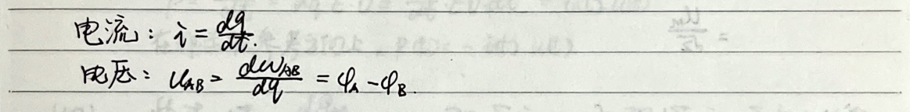
The average value: $\overline{x} = \frac{1}{T} \int_{0}^{T} x(t) dt$
The effective value: $\overline{y} = \sqrt{\frac{1}{T} \int_{0}^{T} y(t)^2 dt}$
The RMS voltage of u(t) = Um sin(ωt - φ), effective value: u = $\sqrt{\frac{1}{T} \int_{0}^{T} u(t)^2 dt}$
= $\sqrt{\frac{1}{T} \int_{0}^{T} U_m^2 \sin^2(\omega t - \phi) dt}$
= $\sqrt{\frac{U_m^2}{2T} \int_{0}^{T} (1 - \cos(2\omega t - 2\phi)) dt}$
= $\frac{U_m}{\sqrt{2}}$
Linear circuit: ay1 + by2 = f(ax1 + bx2)
Sourceless circuit: ∫(0 to t) u(t) dt ≥ 0
Source circuit: ∫(0 to t) u(t) dt < 0
Total parameters circuit: The current and voltage of the component are not functions of the component's spatial dimensions. The component's model is an indivisible whole.
Distributed parameters circuit: The current and voltage of the transmission line are functions of the spatial dimension x. This is used when the spatial dimensions of the component and the source of electromagnetic waves are comparable.
Another case is considering leakage current.

**Kirchhoff's Laws**
1. Current: $$di = \frac{dq}{dt} = \frac{en\vec{v} \cdot d\vec{s}}{dt} = en\vec{v} \cdot d\vec{s}$$ $$\vec{J} = en\vec{v} \quad \therefore i = \iint \vec{J} \cdot d\vec{s}$$
2. Voltage: $$\varphi_A - \varphi_B = \frac{dU_{AB}}{dt} = \frac{1}{\partial q} \int_A^B \vec{F} \cdot d\vec{r} = \frac{1}{\partial q} \int_A^B dq \vec{E} \cdot d\vec{r} = \int_A^B \vec{E} \cdot d\vec{r} = U_{AB}$$
3. Power: $$\vec{F} = dq \cdot \vec{E} \quad dw = Fvdt = dq \cdot E \cdot v \cdot dt$$ $$P = \frac{dw}{dt} = dq \cdot E \cdot v = \frac{dq}{dt} \cdot E \cdot v \cdot dt = i(t) \cdot u(t)$$ In non-associated reference direction, $$P(t) = -i(t) \cdot u(t)$$
4. KCL: $$\oint \vec{J} \cdot d\vec{s} = \frac{dq}{dt} = 0 \quad \text{or} \quad \sum i = 0, \text{or} \quad \sum i = \sum i$$
5. KVL: $$\oint \vec{E} \cdot d\vec{r} = 0, \quad U_{AB} = \int_A^B \vec{E} \cdot d\vec{r} \quad \text{or} \quad \sum u = 0, \text{or} \quad \sum u = \sum u$$
6. Independent Sources: The voltage (voltage source) or current (current source) of a circuit element is determined solely by its internal properties and is independent of the external circuit or components. Examples include batteries, microphones, etc., which are approximately voltage sources. Solar cells are approximately current sources.
7. Controlled Sources: VCVS, VCCS, CCVS, CCCS (the second C stands for controlled)
8. (1) $$u_1$$ (2) $$u_2$$ (3) $$u_3$$ (4) $$u_4$$
9. $$\mu:$$ transfer ratio 10. $$\beta:$$ transfer ratio
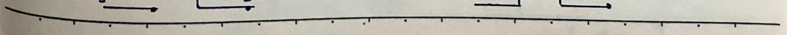

1. Resistance Equivalent Transformation
A two-terminal network without independent sources can be replaced by an equivalent resistance, \( R_{eq} = \frac{U}{I} \).
1.1 Series Resistors
From \( U = U_1 + ... + U_n \), \( U_k = R_k i \), we get: \[ U = (R_1 + ... + R_n) i \] Thus, \( R_{eq} = \frac{U}{I} = R_1 + ... + R_n \).
1.2 Parallel Resistors
From \( i = i_1 + ... + i_n \), \( i_k = \frac{U_k}{R_k} = \frac{U}{R_k} \), we get: \[ i = (\frac{1}{R_1} + ... + \frac{1}{R_n}) U \] Thus, \( R_{eq} = \frac{U}{I} = (\frac{1}{R_1} + ... + \frac{1}{R_n})^{-1} \), i.e., \( G_{eq} = G_1 + ... + G_n \).
1.3 Balanced Bridge
$$ \begin{aligned} &\frac{R_1}{R_2} = \frac{R_3}{R_4} \\ &\frac{R_1}{R_2} = \frac{R_3}{R_4} \end{aligned} $$
1.4 Y-Δ Equivalent Transformation
$$ \begin{aligned} &U_{12} = R_1 i - R_2 i_2 \\ &U_{23} = R_2 i_2 - R_3 i_3 \\ &U_{31} = R_3 i_3 - R_1 i_1 \\ &U_{12} + U_{23} + U_{31} = 0 \\ &i_1 + i_2 + i_3 = 0 \end{aligned} $$

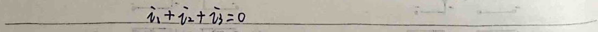
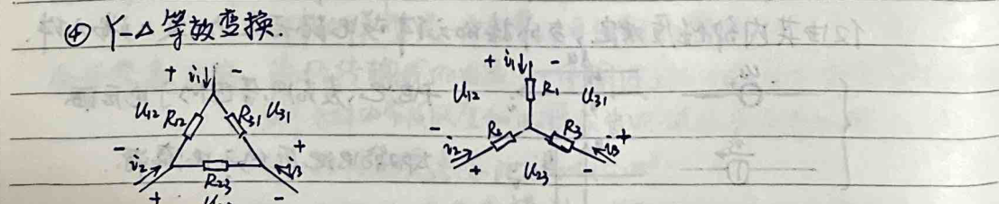
Solving in delta form: $$ u_{12} = \frac{R_{12} R_{31} i_1 - R_{23} R_{12} i_2}{R_{12} + R_{23} + R_{31}} $$ $$ u_{23} = \frac{R_{23} R_{12} i_2 - R_{31} R_{23} i_3}{R_{12} + R_{23} + R_{31}} $$ $$ u_{31} = \frac{R_{31} R_{23} i_3 - R_{12} R_{31} i_1}{R_{12} + R_{23} + R_{31}} $$
Comparing with Y form: $$ R_{1} = \frac{R_{12} R_{31}}{R_{12} + R_{23} + R_{31}} $$ $$ R_{2} = \frac{R_{23} R_{12}}{R_{12} + R_{23} + R_{31}} $$ $$ R_{3} = \frac{R_{31} R_{23}}{R_{12} + R_{23} + R_{31}} $$
$$ R_{12} = R_1 + R_2 + \frac{R_1 R_2}{R_3} $$ $$ R_{23} = R_2 + R_3 + \frac{R_2 R_3}{R_1} $$ $$ R_{31} = R_3 + R_1 + \frac{R_3 R_1}{R_2} $$
5. Equivalent resistance of a two-terminal network with resistors and controlled sources. For such a network, if the controlled source is in the network, it can be equivalent to a resistor. (The terminal voltage-current relationship is the same), using current voltage or voltage current to express the terminal voltage and current in a linear relationship to obtain the equivalent resistance.
3. Power supply equivalent transformation. 1. Ideal independent voltage source in series (voltage source) $$ u_{eq} = u_{s1} + ... + u_{sn} $$
2. Ideal independent current source in parallel (current source) $$ i_{eq} = i_{s1} + ... + i_{sn} $$

4. Metal-Oxide-Semiconductor-Field-Effect-Transistor
Applications: - Digital systems: logic gates. - Analog systems: amplifiers.
Model: Three-terminal device, e.g., N-channel enhancement-type MOSFET: - G: Gate (always open) - S: Source - D: Drain
Electrical characteristics: Ugs affects the I-V characteristics of D-S.
1) When 0 ≤ Ugs ≤ U_T, D-S is open. 2) When Ugs > U_T, Uds < Ugs - U_T, then the switch closes. D-S appears as a resistor, known as the MOSFET switch-resistor model. $$ \begin{aligned} & \text{Ugs} > U_T \\ & \text{Uds} < \text{Ugs} - U_T \\ & \text{D-S appears as a resistor, known as the MOSFET switch-resistor model.} \end{aligned} $$
3) When Ugs > U_T, Uds > Ugs - U_T, then the switch closes. D-S appears as a voltage-controlled current source, id = K(Ugs - U_T)^2, known as the switch-current-source model. $$ \begin{aligned} & \text{Ugs} > U_T \\ & \text{Uds} > \text{Ugs} - U_T \\ & \text{D-S appears as a voltage-controlled current source, id = K(Ugs - U_T)^2, known as the switch-current-source model.} \end{aligned} $$
No.
Date
---
**Graph:**
$$U_{DS} = 3V$$ $$U_{GS} = 2V$$ $$U_{GS} = 0V$$
---
**Text:**
When \(U_{GS} = U_{IN}\), when \(0 < U_{IN} < U_{T}\), ① \(i_{DS} = 0\), D-S does not conduct. When \(U_{GS} = U_{IN}\) and \(U_{IN} = 0\), \(i_{DS} = 0\), D-S does not conduct. When \(U_{IN} > U_{T}\), when \(U_{IN} > 0\), ② then \(U_{DS} < U_{IN}\) when D-S is a resistor. Resistance is \(R_{DS} = \frac{U_{DS}}{U_{DS}} = \frac{U_{IN} - U_{T}}{\frac{K}{2}(U_{IN} - U_{T})^2} = \frac{2}{K(U_{IN} - U_{T})} = \frac{2}{K} \cdot \frac{1}{U_{IN} - U_{T}}\). ③ When \(U_{DS} > U_{IN}\), D-S is a voltage-controlled current source. \(i_{DS} = \frac{K}{2} \cdot (U_{IN} - U_{T})^2\).
---
**5. Operational Amplifier:**
**Input:** - **Non-inverting input:** \(U_{+}\) - **Inverting input:** \(U_{-}\) - **Output:** \(U_{O}\) - **Common terminal:** Ground
**Parameters:** ① Supply voltage: \(V_{CC}\) ② Open-loop gain (open-loop gain): \(A\) \(U_{O} = A(U_{+} - U_{-}) = AU_{d}\) \(U_{d}\) is the operational amplifier's basic function, which is to amplify. The different operational amplifiers have different A values, which are very large and change with temperature. ③ Input resistance \(R_{i}\): The equivalent resistance of the inverting and non-inverting inputs. \(M\Omega\) level. ④ Output resistance \(R_{o}\): The equivalent resistance of the output and ground terminals. \(\Omega\) level.
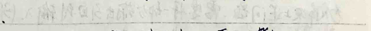

5. Saturation Voltage \(U_{sat}\)
In the input \(U_{in}\) range of \((-U_{sat} \sim +U_{sat})\), \(U_{out} = A U_{in}\) holds, this is the linear region. In the input \(U_{in}\) range of \((-∞ - U_{sat})V (+U_{sat}, +∞)\), the output of the amplifier is \(-U_{sat}\) or \(+U_{sat}\). Externally, it is equivalent to a voltage source, this is the positive (negative) saturation region.
In the DC or low-frequency case, the circuit model of the operational amplifier (from the external perspective, \(R_{i} \rightarrow ∞, R_{o} \rightarrow 0\)):
$$ \begin{aligned} & u_{-} \\ & u_{+} \\ & R_{i} \\ & A \\ & u_{+} - u_{-} \\ & u_{+} - u_{-} \\ & u_{+} - u_{-} \\ & u_{+} - u_{-} \\ & u_{+} - u_{-} \\ & u_{+} - u_{-} \\ & u_{+} - u_{-} \\ & u_{+} - u_{-} \\ & u_{+} - u_{-} \\ & u_{+} - u_{-} \\ & u_{+} - u_{-} \\ & u_{+} - u_{-} \\ & u_{+} - u_{-} \\ & u_{+} - u_{-} \\ & u_{+} - u_{-} \\ & u_{+} - u_{-} \\ & u_{+} - u_{-} \\ & u_{+} - u_{-} \\ & u_{+} - u_{-} \\ & u_{+} - u_{-} \\ & u_{+} - u_{-} \\ & u_{+} - u_{-} \\ & u_{+} - u_{-} \\ & u_{+} - u_{-} \\ & u_{+} - u_{-} \\ & u_{+} - u_{-} \\ & u_{+} - u_{-} \\ & u_{+} - u_{-} \\ & u_{+} - u_{-} \\ & u_{+} - u_{-} \\ & u_{+} - u_{-} \\ & u_{+} - u_{-} \\ & u_{+} - u_{-} \\ & u_{+} - u_{-} \\ & u_{+} - u_{-} \\ & u_{+} - u_{-} \\ & u_{+} - u_{-} \\ & u_{+} - u_{-} \\ & u_{+} - u_{-} \\ & u_{+} - u_{-} \\ & u_{+} - u_{-} \\ & u_{+} - u_{-} \\ & u_{+} - u_{-} \\ & u_{+} - u_{-} \\ & u_{+} - u_{-} \\ & u_{+} - u_{-} \\ & u_{+} - u_{-} \\ & u_{+} - u_{-} \\ & u_{+} - u_{-} \\ & u_{+} - u_{-} \\ & u_{+} - u_{-} \\ & u_{+} - u_{-} \\ & u_{+} - u_{-} \\ & u_{+} - u_{-} \\ & u_{+} - u_{-} \\ & u_{+} - u_{-} \\ & u_{+} - u_{-} \\ & u_{+} - u_{-} \\ & u_{+} - u_{-} \\ & u_{+} - u_{-} \\ & u_{+} - u_{-} \\ & u_{+} - u_{-} \\ & u_{+} - u_{-} \\ & u_{+} - u_{-} \\ & u_{+} - u_{-} \\ & u_{+} - u_{-} \\ & u_{+} - u_{-} \\ & u_{+} - u_{-} \\ & u_{+} - u_{-} \\ & u_{+} - u_{-} \\ & u_{+} - u_{-} \\ & u_{+} - u_{-} \\ & u_{+} - u_{-} \\ & u_{+} - u_{-} \\ & u_{+} - u_{-} \\ & u_{+} - u_{-} \\ & u_{+} - u_{-} \\ & u_{+} - u_{-} \\ & u_{+} - u_{-} \\ & u_{+} - u_{-} \\ & u_{+} - u_{-} \\ & u_{+} - u_{-} \\ & u_{+} - u_{-} \\ & u_{+} - u_{-} \\ & u_{+} - u_{-} \\ & u_{+} - u_{-} \\ & u_{+} - u_{-} \\ & u_{+} - u_{-} \\ & u_{+} - u_{-} \\ & u_{+} - u_{-} \\ & u_{+} - u_{-} \\ & u_{+} - u_{-} \\ & u_{+} - u_{-} \\ & u_{+} - u_{-} \\ & u_{+} - u_{-} \\ & u_{+} - u_{-} \\ & u_{+} - u_{-} \\ & u_{+} - u_{-} \\ & u_{+} - u_{-} \\ & u_{+} - u_{-} \\ & u_{+} - u_{-} \\ & u_{+} - u_{-} \\ & u_{+} - u_{-} \\ & u_{+} - u_{-} \\ & u_{+} - u_{-} \\ & u_{+} - u_{-} \\ & u_{+} - u_{-} \\ & u_{+} - u_{-} \\ & u_{+} - u_{-} \\ & u_{+} - u_{-} \\ & u_{+} - u_{-} \\ & u_{+} - u_{-} \\ & u_{+} - u_{-} \\ & u_{+} - u_{-} \\ & u_{+} - u_{-} \\ & u_{+} - u_{-} \\ & u_{+} - u_{-} \\ & u_{+} - u_{-} \\ & u_{+
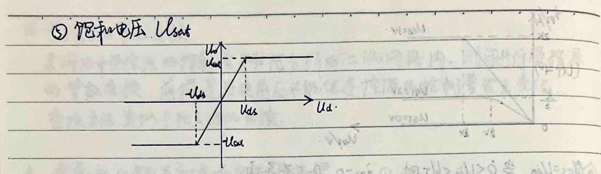

### Ideal Op-Amp:
#### Negative Feedback Op-Amp Circuit: $$ \begin{aligned} & u_{o} = -A u_{i} \\ & i = \frac{u_{i} - u_{o}}{R_{1}} \\ & i = \frac{u_{i} - u_{o}}{R_{f}} \rightarrow \frac{u_{o}}{u_{i}} = -\frac{A R_{f}}{(R_{f} + R_{1}) + A R_{1}} \\ & -A u_{i} = u_{o} \end{aligned} $$
- Since R1 and Rf are in the kΩ range, A is in the range of 10^5 to 10^8, so uo is approximately -Rf/R1 and independent of A.
1. Since -Usat < uo < Usat, -Usat < uo/R1 < Usat. - The input voltage requirement is much lower than the feedback voltage. 2. Input voltage u_i and output voltage u_o are in the same order of magnitude. 3. A is not affected by temperature changes and must be sufficiently large.
#### Ideal Op-Amp: - Input resistance R_in is ∞ → i+ = i- = 0: virtual short - Output resistance R_out is 0 → uo = A(u+ - u-) + uRo(=0) - Open-loop gain A is ∞ → ∞(u+ - u-) = uo ∈ [-Usat, +Usat]. u+ = u-: virtual short.
Example: 1. Voltage follower. 2. Inverting amplifier.

3) Non-inverting Amplifier $$ u_{o} = (1 + \frac{R_{f}}{R_{1}}) u_{i} $$
4) Inverting Summing Amplifier $$ u_{o} = - (\frac{R_{f1}}{R_{1}} u_{1} + \frac{R_{f2}}{R_{2}} u_{2} + \frac{R_{f3}}{R_{3}} u_{3}) $$
5) Subtractor $$ u_{o} = - \frac{R_{f}}{R_{1}} (u_{1} - u_{2}) $$
6) Voltage-Controlled Current Source $$ u = \frac{R_{f}}{R_{1} + R_{f}} u_{2} \cdot (kV) $$ $$ i = \frac{u_{o}}{R_{2}} \text{ is independent of load resistance } R_{2} $$
7) Negative Resistance $$ u_{1} = u_{2} $$ $$ u_{2} = - i_{2} R $$
8) Voltage Comparator (No Feedback) $$ u_{o} = - u_{1} \text{ if } u_{1} > u_{ref} $$ $$ u_{o} = u_{sat} \text{ if } u_{1} < u_{ref} $$
$$ \frac{u_{1}}{u_{1}} = \frac{u_{2}}{R_{1}} i_{2} = \frac{R_{1}}{R_{2}} \frac{u_{2}}{R_{2}} = - \frac{R_{1}}{R_{2}} R $$
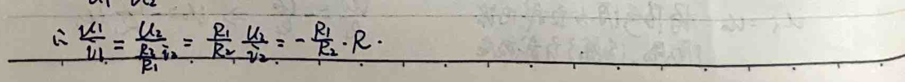

### Positive and Negative Feedback Operational Amplifier Circuit
#### Positive Feedback Operational Amplifier Circuit
- **Input Noise Analysis:** - If a small positive noise is added to the output, the positive input voltage \( u_+ \) will slightly increase. Since \( u_+ = A(u_+ - u_-) \), and \( A \) is very large, \( u_+ \) will exceed the linear region, causing the output to directly saturate at \( +U_{sat} \). - Conversely, if a small negative noise is added to the output, the negative input voltage \( u_- \) will decrease. The output will then saturate at \( -U_{sat} \).
- **Properties:** - **Property 1:** Due to the input resistance being infinitely large, the virtual short circuit still holds. - **Property 2:** Due to the non-existence of \( u_+ - u_- = u_0 \in [-U_{sat}, +U_{sat}] \), the virtual short circuit no longer holds. - **Property 3:** \( A \to \infty \)
#### Comparator
- **Comparator Circuit:** - If a noise is added, the operational amplifier's output will saturate at \( +U_{sat} \). - According to the virtual short circuit, \( u_+ = \frac{R_1}{R_1 + R_2} U_{sat} \). - When \( u_i < \frac{R_1}{R_1 + R_2} U_{sat} \), the operational amplifier's output is \( U_{sat} \). When \( u_i \) increases and exceeds \( \frac{R_1}{R_1 + R_2} U_{sat} \), due to positive feedback, the output changes to \( -U_{sat} \). - According to the virtual short circuit, \( u_+ = -\frac{R_2}{R_1 + R_2} U_{sat} \). - When \( u_i \) decreases and falls below \( -\frac{R_2}{R_1 + R_2} U_{sat} \), the output changes back to \( -U_{sat} \).
- **Comparator Characteristics:** - The comparator increases or decreases to \( \frac{R_1}{R_1 + R_2} U_{sat} \) or \( -\frac{R_1}{R_1 + R_2} U_{sat} \) before the output changes. This characteristic can be used to detect signals and eliminate noise within a certain range.
#### Pulse Sequence Generator
- **Circuit Diagram:** - The circuit diagram shows a capacitor \( C \) connected to a voltage source \( u_0 \) and a resistor \( R_1 \).
- **Mathematical Description:** - When \( u_0 \) is at \( -0.5 U_{sat} \), the output voltage \( u_c \) changes to \( U_{sat} \). At this point, \( u_+ = -0.5 U_{sat} \). - The capacitor starts charging: \( u_c = -U_{sat} + [0.5 U_{sat} - (-U_{sat})] e^{-\frac{t}{R_1 C}} \). - When \( u_0 \) is at \( -U_{sat} \), the output voltage \( u_c \) changes to \( -U_{sat} \). At this point, \( u_+ = -U_{sat} \). - The capacitor starts discharging: \( u_c = -U_{sat} + [0.5 U_{sat} - (-U_{sat})] e^{-\frac{t}{R_1 C}} \).
- **Conclusion:** - The circuit generates a pulse sequence with a specific width and amplitude, which can be used to detect and eliminate noise within a certain range.
### Three-Port Network
#### Table 1: | Parameters | Conductance Parameters | Resistance Parameters | Transmission Parameters | Mixed Parameters | |------------|------------------------|-----------------------|-------------------------|-----------------| | **Equations** | $$\frac{I_1}{I_2} = \left(\frac{G_{11} G_{12}}{G_{21} G_{22}}\right) \left(\frac{U_1}{U_2}\right)$$ | $$\frac{U_1}{U_2} = \left(\frac{R_{11} R_{12}}{R_{21} R_{22}}\right) \left(\frac{I_1}{I_2}\right)$$ | $$\frac{U_1}{I_1} = \left(\frac{T_{11} T_{12}}{T_{21} T_{22}}\right) \left(\frac{U_2}{I_2}\right)$$ | $$\frac{U_1}{I_2} = \left(\frac{H_{11} H_{12}}{H_{21} H_{22}}\right) \left(\frac{I_1}{U_2}\right)$$ | | **Symmetry Conditions** | $$G_{12} = G_{21}$$ | $$R_{12} = R_{21}$$ | $$T_{11} T_{22} - T_{12} T_{21} = 1$$ | $$H_{12} = -H_{21}$$ | | **Symmetry Conditions** | $$G_{11} = G_{22}$$ | $$R_{11} = R_{22}$$ | $$T_{11} T_{22} - T_{12} T_{21} = 1$$ | $$H_{12} = -H_{21}$$ |
#### Table 2: | Parameters | Conductance Parameters | Resistance Parameters | Transmission Parameters | Mixed Parameters | |------------|------------------------|-----------------------|-------------------------|-----------------| | **Resistance Parameters** | $$\frac{R_{22}}{\Delta R} - \frac{R_{21}}{\Delta R}$$ | $$\frac{T_{11}}{T_{12}} - \frac{\Delta T}{T_{11}}$$ | $$\frac{H_{11}}{H_{12}} - \frac{H_{12}}{H_{11}}$$ | | **Conductance Parameters** | $$\frac{R_{22}}{\Delta R} - \frac{R_{21}}{\Delta R}$$ | $$\frac{T_{11}}{T_{12}} - \frac{\Delta T}{T_{11}}$$ | $$\frac{H_{11}}{H_{12}} - \frac{H_{12}}{H_{11}}$$ | | **Transmission Parameters** | $$\frac{1}{R_{22}} - \frac{1}{R_{21}}$$ | $$\frac{T_{11}}{T_{12}} - \frac{\Delta T}{T_{11}}$$ | $$\frac{H_{11}}{H_{12}} - \frac{H_{12}}{H_{11}}$$ | | **Mixed Parameters** | $$\frac{1}{R_{22}} - \frac{1}{R_{21}}$$ | $$\frac{T_{11}}{T_{12}} - \frac{\Delta T}{T_{11}}$$ | $$\frac{H_{11}}{H_{12}} - \frac{H_{12}}{H_{11}}$$ |
1. From R Parameters and G Parameters Viewpoint: Resistance Y-Δ Transformation: $$\begin{cases} u_1 = (G_{11} + G_{12}) u_1 - G_{12} u_2 \\ i_1 = -G_{12} u_1 + (G_{11} + G_{12}) u_2 \end{cases}$$ $$\begin{cases} u_1 = (R_1 + R_2) i_1 + R_3 i_2 \\ i_1 = -R_3 u_1 + (R_1 + R_2) i_2 \end{cases}$$
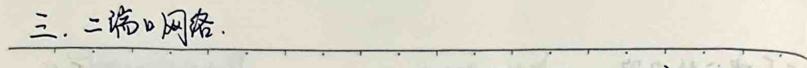
### Translated Text and Formulas
#### Negative Resistance Circuit Analysis
Given the circuit with resistors \( R_1 \) and \( R_2 \), we have: \[ T_{11} = \frac{u_1}{i_1} = 1, \quad T_{12} = \frac{u_1}{i_2} = 0 \] \[ T_{21} = \frac{u_2}{i_1} = 0, \quad T_{22} = \frac{u_2}{i_2} = -\frac{R_2}{R_1} \] \[ \therefore \begin{pmatrix} u_1 \\ u_2 \end{pmatrix} = \begin{pmatrix} 1 & 0 \\ 0 & -\frac{R_2}{R_1} \end{pmatrix} \begin{pmatrix} i_1 \\ i_2 \end{pmatrix} \] \[ \because u_2 = -R_2 i_2, \quad \therefore R_2 = \frac{u_2}{i_2} = -\frac{R_1}{R_2} R < 0. \]
#### Bipolar Transistor Circuit Symbols and Small Signal Circuit Model
The circuit symbol for a bipolar transistor is shown with: - Base (b) - Collector (c) - Emitter (e)
The small signal circuit model is: \[ \begin{pmatrix} \Delta u_{be} \\ \Delta i_c \end{pmatrix} = \begin{pmatrix} R_{be} & \mu \\ \beta & \frac{1}{R_{ce}} \end{pmatrix} \begin{pmatrix} \Delta i_b \\ \Delta u_{ce} \end{pmatrix} \]
#### Equivalent Circuit of Two-Port Network
The equivalent circuit of a two-port network is derived as follows: \[ R_{11} = \frac{u_1}{i_1} = R_a + R_b \] \[ G_{11} = \frac{z_1}{u_1} = G_a + G_b \] \[ T_{11} = \frac{u_1}{i_2} = \frac{R_1 + R_2}{R_2} \] \[ R_{12} = \frac{u_1}{i_2} = R_b \] \[ G_{12} = \frac{z_1}{u_2} = -G_b \] \[ T_{12} = -\frac{u_1}{i_2} = \frac{R_1 R_2 + R_2 R_3 + R_3 R_4}{R_2} \] \[ R_{21} = \frac{u_2}{i_1} = R_b \] \[ G_{21} = \frac{z_2}{u_1} = -G_b \] \[ T_{21} = \frac{z_2}{u_2} = \frac{1}{R_2} \] \[ R_{22} = \frac{u_2}{i_2} = R_b + R_c \] \[ G_{22} = \frac{z_2}{i_2} = G_b + G_c \] \[ T_{22} = -\frac{z_2}{i_2} = 1 + \frac{R_2}{R_3} \] \[ R_b = R_{12} = R_{21} \] \[ G_{1b} = -G_{12} = -G_{21} \] \[ R_a = R_{11} - R_{12} \] \[ G_{a} = G_{11} + G_{12} \] \[ R_c = R_{22} - R_{21} \] \[ G_{c} = G_{22} + G_{21} \] \[ R_1 = \frac{I_{11} - 1}{T_{21}} \] \[ R_2 = \frac{1}{T_{21}} \] \[ R_3 = \frac{T_{22} - 1}{T_{21}} \]


2. Two-Port Network Connections
1. Series Connection $$ \begin{aligned} & \text{By } \left[\begin{array}{c} u_{1} \\ i_{1} \end{array}\right] = T_{1} \left[\begin{array}{c} u_{2} \\ -i_{2} \end{array}\right], \quad \left[\begin{array}{c} u_{2} \\ -i_{2} \end{array}\right] = T_{2} \left[\begin{array}{c} u_{3} \\ -i_{3} \end{array}\right] \text{ we get} \\ & \left[\begin{array}{c} u_{1} \\ i_{1} \end{array}\right] = T_{1} T_{2} \left[\begin{array}{c} u_{3} \\ -i_{3} \end{array}\right] \quad \therefore T = T_{1} T_{2} \end{aligned} $$
2. Parallel Connection $$ \begin{aligned} & \left[\begin{array}{c} i_{1} \\ i_{2} \end{array}\right] = G_{1}^{\prime} \left[\begin{array}{c} u_{1} \\ u_{2} \end{array}\right], \quad \left[\begin{array}{c} i_{2} \\ i_{2} \end{array}\right] = G_{2}^{\prime \prime} \left[\begin{array}{c} u_{1} \\ u_{2} \end{array}\right] \\ & \text{By } u_{1} = u_{1}^{\prime} = u_{1}^{\prime \prime}, u_{2} = u_{2}^{\prime} = u_{2}^{\prime \prime} \text{ we get} \\ & i_{1} = i_{1}^{\prime} + i_{1}^{\prime \prime}, \quad i_{2} = i_{2}^{\prime} + i_{2}^{\prime \prime} \\ & \therefore \left[\begin{array}{c} i_{1} \\ i_{2} \end{array}\right] = \left[\begin{array}{c} i_{1}^{\prime} \\ i_{1}^{\prime \prime} \end{array}\right] + \left[\begin{array}{c} i_{2}^{\prime} \\ i_{2}^{\prime \prime} \end{array}\right] = \left(G_{1}^{\prime} + G_{2}^{\prime \prime}\right) \left[\begin{array}{c} u_{1} \\ u_{2} \end{array}\right] \quad \therefore G = G_{1}^{\prime} + G_{2}^{\prime \prime} \end{aligned} $$
For two-port networks with a common terminal, the common terminal connection does not violate the two-port condition. 3. Parallel Connection $$ \begin{aligned} & \left[\begin{array}{c} u_{1} \\ i_{1} \end{array}\right] = R^{\prime} \left[\begin{array}{c} u_{1} \\ i_{1} \end{array}\right], \quad \left[\begin{array}{c} u_{2} \\ i_{2} \end{array}\right] = R^{\prime \prime} \left[\begin{array}{c} u_{2} \\ i_{2} \end{array}\right] \\ & \left[\begin{array}{c} u_{1} \\ u_{2} \end{array}\right] = \left[\begin{array}{c} u_{1} \\ u_{1} \end{array}\right] + \left[\begin{array}{c} u_{2} \\ u_{2} \end{array}\right] = \left(R^{\prime} + R^{\prime \prime}\right) \left[\begin{array}{c} u_{1} \\ u_{2} \end{array}\right] \\ & \therefore R = R^{\prime} + R^{\prime \prime} \end{aligned} $$
### Linear Resistive Circuit Analysis
#### 1. Node Voltage Method: In the circuit, select one node as the reference node, setting its voltage to zero. The voltage of other nodes is called the node voltage \(U_n\), \(U_m\), etc. The circuit automatically satisfies Kirchhoff's Current Law (KCL). Only write the (n-1) KCL equations at the nodes.
1. If the circuit only contains current sources, voltage sources, and resistors, then there is a general form: - Currents are positive, and voltages are negative. Actual voltage sources are converted to actual current sources. This is a symmetrical circuit. 2. If the circuit contains dependent sources, first convert the dependent source into an independent source, then write the node equations. Next, write the control quantity and node voltage relationship equations. 3. If the circuit has resistors in series with ideal current sources or resistors in parallel with ideal voltage sources, then the resistors do not affect the equations. This causes the current at a certain node to be known or the voltage at two nodes to be known. 4. If there are two nodes connected by a voltage source (or dependent voltage source), then through the reference node being selected at the negative terminal of the voltage source, adding the voltage source branch current, and adding the voltage source into the generalized node, the node equation can be written. (When using the generalized node method, the concept of "self-conductance" is expanded)
#### 2. Mesh Current Method: In the circuit mesh, assume the mesh currents, making the actual current on each branch the algebraic sum of the currents in all meshes. The mesh currents automatically satisfy Kirchhoff's Current Law (KCL). Only write the (b-n+1) mesh KCL equations.
1. If the circuit only contains current sources, voltage sources, and resistors, then there is a general form: - The currents in the resistors on the same mesh are positive, and the currents in the resistors on opposite meshes are negative. The voltage direction of the voltage source in the mesh is opposite to the mesh current (parallel) when the voltage direction is opposite to the mesh current. (For the current flowing into the node in the mesh current method, the current flowing into the node is positive). 2. If the circuit contains dependent sources, treat them as independent sources and write the equations. Then find the relationship between the control quantity and the mesh current. 3. If there are current sources in series with resistors or voltage sources in parallel with resistors, convert them to voltage sources. When there are resistors in series with ideal current sources or resistors in parallel with ideal voltage sources, the resistors do not affect the equations.
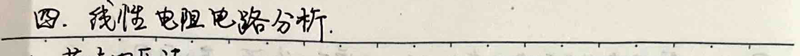
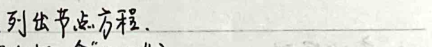
4. Regardless of whether there is a resistor in the common branch of the two loops, as long as there is a current source, it can be used. - When selecting a loop, ensure the current source is not part of any loop. - Increase the current source's voltage. - Define the current source's equivalent network (with equations of the network and its own KVL constraints).
3. Superposition Theorem - The response (current or voltage between two points) and the excitation (independent source) satisfy superposition. - Since the branch voltage and branch current can be expressed as a linear combination of branch voltages, linear resistive circuits satisfy superposition. - Note: When a controlled source is present, the controlled source remains in the circuit, and the controlled relationship does not change. The controlled source's effect is only reflected in the independent source circuit, not in the superposition. - If the voltage source is zero, it is equivalent to a short circuit. - If the current source is zero, it is equivalent to an open circuit.
4. Linearity Theorem - The response and excitation satisfy linearity (linear equations are linear). - When all independent sources change by k times, the response also changes by k times (including controlled sources).
5. Substitution Theorem - Assuming the ab branch contains an independent source and a resistor, the voltage-current relationship is: $$ u = u_0 - R_0 i $$ - The right side is the resistor branch u = R_i. Then the system's working point is shown in the figure. Using the voltage source and the current source to replace the resistor branch, the voltage and current of the ab branch do not change. Actually, using any combination of u = u_0 - R_0 i will not change the voltage and current of the ab branch.
6.戴维南定理. Any circuit composed of linear resistors, linear controlled sources, and independent voltage sources can be simplified to a single equivalent circuit consisting of a voltage source in series with a resistor.
Voltage source: The open-circuit voltage of the circuit. Resistor: The equivalent resistance of the circuit when all independent sources are set to zero.
① The open-circuit voltage can be calculated using the voltage method, loop current method, superposition theorem, and simple resistance circuit analysis methods. ② The resistor can be simplified using the equivalent resistance method. It can also be calculated using the open-circuit voltage and short-circuit current method. ③ The controlled source's controlled quantity in the circuit is not equivalent to the controlled quantity in the circuit. ④ The circuit may contain a controlled source, and the equivalent resistance may be a negative resistance. ⑤ As long as the circuit is linearly equivalent, it can be transformed.
Thevenin's Theorem: Io, Gi ↔ Uo, Ro
7.基尔霍夫定理. For a network N and its dual network N̂ with the same topology, corresponding branches take the same reference direction, and the voltage and current of each branch take the same reference direction. Then,
$$\sum_{k=1}^{n} u_k = 0, \quad \sum_{k=1}^{n} u_k i_k = 0$$
Proof: Suppose k branches are connected between nodes α and β. The voltage and current of the branches in the left network N and the right network N̂ are equal.
$$u_k i_k = (u_\alpha - u_\beta) i_{\alpha\beta} = u_\alpha i_{\alpha\beta} - u_\beta i_{\alpha\beta} = u_\alpha i_{\alpha\beta} + u_\beta i_{\beta\alpha}$$
Where i_{\alpha\beta} represents the current flowing out of node α, and i_{\beta\alpha} represents the current flowing out of node β. The sum of the currents flowing out of node α and the currents flowing out of node β is zero. Therefore, the sum of the voltages and currents of all branches in the circuit is zero.
The text and formulas in the image are as follows:
---
The text at the top of the page discusses the transformation of branch voltages into nodal voltages and the combination of currents at the same node. It leads to the following expression:
$$\sum_{k=1}^{b} u_{k} \hat{I}_{k} = u_{n1} \sum_{k=1}^{b} \hat{I}_{k} + \ldots + u_{nk} \sum_{k=1}^{b} \hat{I}_{k} + \ldots + u_{nb} \sum_{k=1}^{b} \hat{I}_{k}$$
From this, it is deduced that:
$$\sum_{k=1}^{b} \hat{I}_{k} = 0$$
Thus,
$$\sum_{k=1}^{b} u_{k} \hat{I}_{k} = 0$$
---
The section titled "8. Ohm's Law" discusses the relationship between voltage and current in a circuit. It states:
The first form: $$\frac{\hat{u}_{1}(t)}{\hat{u}_{2}(t)} = \frac{\hat{u}_{1}(t)}{\hat{u}_{2}(t)}$$ or $$\hat{u}_{1}(t) \hat{i}_{1}(t) = \hat{u}_{2}(t) \hat{i}_{2}(t)$$
Proof: Given a circuit with b branches, the box contains b-2 branches. The voltage and current on these branches are denoted as $$\hat{u}_{k}(t)$$ and $$\hat{i}_{k}(t)$$ for $$k=3, \ldots, b$$. The corresponding voltage and current on the branches in the other box are denoted as $$\hat{u}_{k}(t)$$ and $$\hat{i}_{k}(t)$$ for $$k=3, \ldots, b$$. By Kirchhoff's Current Law:
$$\left\{\begin{array}{l} \hat{u}_{1}(t) \hat{i}_{1}(t) + 0 + \sum_{k=3}^{b} \hat{u}_{k}(t) \hat{i}_{k}(t) = 0 \\ 0 + \hat{u}_{2}(t) \hat{i}_{2}(t) + \sum_{k=3}^{b} \hat{u}_{k}(t) \hat{i}_{k}(t) = 0 \end{array}\right.$$
Since the two boxes are part of the same resistance circuit, we have:
$$\hat{u}_{1}(t) \hat{i}_{1}(t) = \hat{i}_{1}(t) R, \hat{u}_{k}(t) = \hat{i}_{k}(t) R$$
Thus,
$$\sum_{k=3}^{b} \hat{u}_{k}(t) \hat{i}_{k}(t) = \sum_{k=3}^{b} \hat{u}_{k}(t) \hat{i}_{k}(t)$$
Therefore,
$$\hat{u}_{1}(t) \hat{i}_{1}(t) = \hat{u}_{2}(t) \hat{i}_{2}(t)$$
This implies:
$$G_{21} = \left.\frac{\hat{u}_{2}(t)}{\hat{u}_{1}(t)}\right|_{\hat{u}_{1}=0} = G_{12} = \left.\frac{\hat{i}_{1}(t)}{\hat{u}_{2}(t)}\right|_{\hat{u}_{1}=0}$$
This is the necessary and sufficient condition for two-terminal mutual resistance.
---
The final section discusses the second form of Ohm's Law:
$$\frac{\hat{u}_{1}(t)}{\hat{u}_{2}(t)} = \frac{\hat{u}_{1}(t)}{\hat{u}_{2}(t)} \Leftrightarrow \hat{u}_{1}(t) \hat{u}_{2}(t) = \hat{u}_{1}(t) \hat{u}_{2}(t) \Leftrightarrow R_{12} = R_{21}$$
1. When performing mesh analysis, the relative direction of current and voltage must remain consistent (either all consistent or all opposite).
2. Combine the superposition theorem and mesh theorem to apply to multiple voltage sources (current sources) and only solve the current (voltage) of a branch when it is convenient.
### Circuit Theory - Duality Principle
Graph: {nodes, branches}; Directed graph: all branch currents have a reference direction (voltage is associated).
Connected graph: all nodes and branches are connected; Subgraph: G' (nodes, branches) ⊂ G (nodes, branches)
Tree: connected, includes all nodes, no loops. (Of course, tree T is a subgraph of G).
Tree branches: branches in T; Branches: branches not in T.
It is easy to know that a graph with n nodes needs to add n-1 branches to form a tree.
In a graph G with n nodes and b branches, tree branches: n-1, branches: b-(n-1)
1. **Adjacency Matrix A**
Use an n x b matrix to represent the branch-node adjacency relationship. Let $$a_{ij} = \begin{cases} 1 & \text{branch } j \text{ is connected to node } i, branch leaves node} \\ -1 & \text{branch } j \text{ is connected to node } i, branch points to node} \\ 0 & \text{branch } j \text{ is not related to node } i. \end{cases}$$
The augmented adjacency matrix $A_a \in M_{n \times b}$, it is known that $A_a$ has n-1 linearly independent rows (nodes).
We can delete one row to form an (n-1) x b adjacency matrix A, deleting the row (node) is the reference node.
Let branch currents $\vec{I} = (i_1, ..., i_b)^T$, branch voltages $\vec{U} = (u_1, ..., u_b)^T$,
Node voltages $\vec{U_n} = (u_{n1}, ..., u_{nn})^T$, $u_{nx} = 0$ (reference node)
Then $A_a \vec{I} = \vec{0} \Rightarrow A \vec{I} = \vec{0}$
And $\vec{U} = A^T \vec{U_n} \Rightarrow Rank A = n-1$, in a loopless circuit with n branches, the number of independent KCL equations is n-1.
2. **Fundamental Loop Matrix B**
There are n-1 loops, establish the fundamental loop matrix B $\in l \times b$.
The note discusses network theory, specifically focusing on loops and branches in a network. It introduces the concept of a loop matrix B, where each row corresponds to a loop and each column to a branch. The value of b_{ij} in the loop matrix is defined as follows: - 1 if branch j is part of loop i and the direction of the loop is consistent with the branch. - -1 if branch j is part of loop i and the direction of the loop is opposite to the branch. - 0 if branch j is not part of loop i.
The note also mentions the properties of the loop matrix B: - B does not have a zero row vector, meaning each branch is included in at least one loop. - Each row of B has at least two non-zero elements, indicating each loop is composed of at least two branches.
The number of loops in a network with n nodes and b branches is given by b - n + 1. The rank of the loop matrix B is b - n + 1. The basic loop matrix is defined as the submatrix of B formed by the last b - n + 1 columns.
The relationship between branch currents and loop currents is expressed as: $$\vec{I} = B_{f}^{T} \cdot \vec{I}_{c}$$ where $$\vec{I}$$ is the branch currents and $$\vec{I}_{c}$$ is the loop currents. This is consistent with Kirchhoff's Current Law (KCL).
The relationship between branch voltages and loop voltages is given by: $$\vec{U} = R\vec{I} + R\vec{I}_{s} - \vec{U}_{s}$$ where $$\vec{U}$$ is the branch voltages, $$\vec{I}$$ is the branch currents, $$\vec{I}_{s}$$ is the source currents, and $$\vec{U}_{s}$$ is the source voltages. This is consistent with Kirchhoff's Voltage Law (KVL).
The node equations are derived from the loop equations. The node voltage $$\vec{U}_{n}$$ can be expressed as: $$\vec{U}_{n} = AG\vec{U}_{n} + AG\vec{U}_{s} - AG\vec{I}_{s}$$ where A is the incidence matrix, G is the conductance matrix, and $$\vec{U}_{s}$$ and $$\vec{I}_{s}$$ are the source voltages and currents, respectively. The node voltage can be solved using the equation: $$AGA^{T}\vec{U}_{n} = AG\vec{I}_{s} - AG\vec{U}_{s}$$
The final equation derived is: $$B_{f}R\vec{B}_{f}^{T}\vec{I}_{c} = B_{f}\vec{U}_{s} - B_{f}R\vec{I}_{s}$$
**Symmetry Principle**
**Terminology:** - Branches: n - Meshes: n+1 - Open Circuit: Open Circuit - Short Circuit: Short Circuit - Voltage: V - Current: I
**Variables:** - Node Voltage: Vn - Mesh Current: In - Branch Voltage: Vb - Branch Current: Ib
**Components:** - Resistance: R - Conductance: G - Inductance: L - Capacitance: C - Voltage Source: Us - Current Source: Is
**Connections:** - Series - Parallel - Star (Y) - Delta (Δ)
**Kirchhoff's Laws:** - Current Law (KCL): ∑I = 0 - Voltage Law (KVL): ∑V = 0
**Theorems:** - Superposition - Mesh Analysis - Nodal Analysis - Mesh First Form - Mesh Second Form
**Nonlinear Resistance Circuit Analysis**
**Definition:** \( u = f(i) \) or \( i = g(u) \) Example: Diode: \( i = I_s (e^{\frac{u}{nT}} - 1) \)
**Properties:** 1. \( u-i \) relationship is non-linear and non-additive. 2. \( u-i \) relationship can be expanded in a Taylor series. Higher-order terms can be neglected (\( \geq 2 \)), then the response near the point is linear. 3. May have multiple solutions or no solution.
1. **Direct Method** - Voltage-controlled nonlinear resistance - Node Voltage Method. - Current-controlled nonlinear resistance - Mesh Current Method.
2. **Graphical Method** - Element ends and load ends/branch ends at the intersection point.
3. **Segment Linearization Method** - "Assumption and Verification" - Example: Diode four models
\[ i = I_s (e^{\frac{u}{nT}} - 1) \]
1. **Model 1.** - \( i = 0, u < U_{sd} \) - \( u = U_{sd} + iR, i > 0 \)
2. **Model 2. (External resistance >> diode resistance)** - \( i = 0, u < U_{sd} \) - \( u = U_{sd}, i > 0 \)
3. **Model 3. (U_{sd} is very small)** - \( i = 0, u < 0 \) - \( u = Ri, i > 0 \)
4. **Model 4. (Diode resistance and U_{sd} are very small)** - \( i = 0, u < 0 \) - \( u = 0, i > 0 \)
From Model 1 to Model 4, the difference is getting larger and larger.

4. Small Signal Method
Background: Steady-state excitation: U_s; Small perturbation ΔU_s(t)
1. Only consider DC excitation, solve for the nonlinear resistor operating point (U_0, I_0)
2. For a nonlinear resistor u=f(i), using Taylor expansion, we have: u = u_0 + f'(i_0)(i - i_0) + f''(i_0)(i - i_0)^2 + ... ≈ u_0 + f'(i_0)(i - i_0)
Thus, Δu = ∂u/∂i * Δi (both are functions of time)
3. When only Δu excitation is present, the circuit is linear. According to linear circuit analysis methods, by Δu, we can find Δu, and then Δi = ∂u/∂u * Δu.
4. Superposition of two excitations: u = u_0 + Δu(t) i = i_0 + Δi(t)
5. Examples
1. Half-wave rectifier - using diode model 4: U = 1/π ∫_0^π U_m * sin(ωt) dt = U_m / π Effective value U = 1/π ∫_0^π U_m^2 * sin^2(ωt) dt = U_m / 2π
2. Full-wave rectifier: U = 2/π ∫_0^π U_m * sin(ωt) dt = 2U_m / π Effective value U = 2/π ∫_0^π U_m^2 * sin^2(ωt) dt = U_m / π
2. Clipping (U_s = U_m * sin(ωt))
+ U_0 - U_0 + U_0 - U_0
+ R - U_0 + U_0 - U_0
+ R - U_0 + U_0 - U_0
+ R - U_0 + U_0 - U_0
+ R - U_0 + U_0 - U_0
+ R - U_0 + U_0 - U_0
+ R - U_0 + U_0 - U_0
+ R - U_0 + U_0 - U_0
+ R - U_0 + U_0 - U_0
+ R - U_0 + U_0 - U_0
+ R - U_0 + U_0 - U_0
+ R - U_0 + U_0 - U_0
+ R - U_0 + U_0 - U_0
+ R - U_0 + U_0 - U_0
+ R - U_0 + U_0 - U_0
+ R - U_0 + U_0 - U_0
+ R - U_0 + U_0 - U_0
+ R - U_0 + U_0 - U_0
+ R - U_0 + U_0 - U_0
+ R - U_0 + U_0 - U_0
+ R - U_0 + U_0 - U_0
+ R - U_0 + U_0 - U_0
+ R - U_0 + U_0 - U_0
+ R - U_0 + U_0 - U_0
+ R - U_0 + U_0 - U_0
+ R - U_0 + U_0 - U_0
+ R - U_0 + U_0 - U_0
+ R - U_0 + U_0 - U_0
+ R - U_0 + U_0 - U_0
+ R - U_0 + U_0 - U_0
+ R - U_0 + U_0 - U_0
+ R - U_0 + U_0 - U_0
+ R - U_0 + U_0 - U_0
+ R - U_0 + U_0 - U_0
+ R - U_0 + U_0 - U_0
+ R - U_0 + U_0 - U_0
+ R - U_0 + U_0 - U_0
+ R - U_0 + U_0 - U_0
+ R - U_0 + U_0 - U_0
+ R - U_0 + U_0 - U_0
+ R - U_0 + U_0 - U_0
+ R - U_0 + U_0 - U_0
+ R - U_0 + U_0 - U_0
+ R - U_0 + U_0 - U_0
+ R - U_0 + U_0 - U_0
+ R - U_0 + U_0 - U_0
+ R - U_0 + U_0 - U_0
+ R - U_0 + U_0 - U_0
+ R - U_0 + U_0 - U_0
+ R - U_0 + U_0 - U_0
+ R - U_0 + U_0 - U_0
+ R - U_0 + U_0 - U_0
+ R - U_0 + U_0 - U_0
+ R - U_0 + U_0 - U_0
+ R - U_0 + U_0 - U_0
+ R - U_0 + U_0 - U_0
+ R - U_0 + U_0 - U_0
+ R - U_0 + U_0 - U_0
+ R - U_0 + U_0 - U_0
+ R - U_0 + U_0 - U_0
+ R - U_0 + U_0 - U_0
+ R - U_0 +

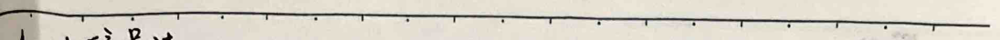

3. Comparator.
$$u_{1} \geq u_{2}$$
$$u_{1} \leq u_{2}$$
$$u_{1} \geq u_{2}$$
$$u_{1} \leq u_{2}$$
4. Voltage Regulation.
$$-U_{Z_{\min}}$$
$$-U_{Z_{\max}}$$
Do not allow reverse current in a certain range ($I_{Z_{\min}} < I < I_{Z_{\max}}$), the terminal voltage will always be -Uz.
5. Utilize non-linear resistance to produce new frequency components. (Too many words, difficult to calculate).
6. Use MOSFET to form an amplifier and gate circuit.
2. MOSFET circuit model:
$$i_{DS} = \frac{1}{2} \cdot U_{DS}$$
$$U_{DS} = \frac{1}{2} \cdot U_{GS} - U_{T}$$
$$i_{DS} = \frac{1}{2} \cdot \left( U_{GS} - U_{T} \right)^{2}$$
$$R = \frac{U_{DS}}{i_{DS}} = \frac{U_{GS} - U_{T}}{i_{DS}} = \frac{1}{2} \cdot \frac{1}{U_{GS} - U_{T}} = \frac{1}{2} \cdot \frac{1}{U_{DS}}$$
When $$U_{GS} < U_{T}$$, $$i_{DS} = 0$$, it is disconnected.
When $$U_{GS} > U_{T}$$, it is conducting. At this time, $$U_{DS} < U_{GS} - U_{T}$$, D-S is a resistor. R is constant.
When $$U_{DS} > U_{GS} - U_{T}$$, D-S is a voltage-controlled current source:
$$i_{DS} = \frac{1}{2} \cdot \left( U_{GS} - U_{T} \right)^{2}$$
$$R = \frac{U_{DS}}{i_{DS}} = \frac{U_{GS} - U_{T}}{i_{DS}} = \frac{1}{2} \cdot \frac{1}{U_{GS} - U_{T}} = \frac{1}{2} \cdot \frac{1}{U_{DS}}$$
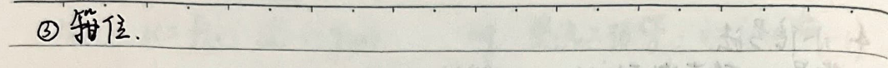

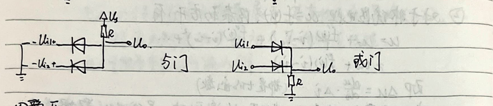
1. **Amplifier.**
When \( u_{gs} \) is not a small signal, according to the "one-step inspection" method of segmental linearity, solve for the operating point. When \( u_{gs} \) is a small signal, \( \Delta u_{gs} \) is the output, \( \Delta u_{gs} \) is the input, then the amplification factor is: $$ \frac{\Delta u_{gs}}{\Delta u_{gs}} = \frac{\Delta u_{gs}}{\Delta u_{gs}} \cdot \frac{\Delta u_{gs}}{\Delta u_{gs}} = \frac{\Delta u_{gs}}{\Delta u_{gs}} \cdot \frac{\Delta u_{gs}}{\Delta u_{gs}} = k \left( u_{gs} - u_{T} \right) \cdot R_{L} $$ Where \( R_{L} \) is the load resistance seen from the DS terminal. When \( u_{gs} = u + \Delta u \), the circuit is called a common-source amplifier circuit.
2. **Gate Circuit.**
According to the truth table (n+1 rows, 2^n+1 columns, n as the number of logical variables), Find all combinations of inputs that make the output true. Combine these combinations using logical operations to form a new unified logical expression. Simplify the logical expression. Use logical basic units to implement the expression: Inverter: \( A \rightarrow Y \) Buffer: \( A \rightarrow Y \) NAND gate: \( A \rightarrow Y \) NOR gate: \( A \rightarrow Y \) \( Y = \overline{A \cdot B} \) \( Y = \overline{A + B} \) \( Y = \overline{A \cdot B} \) \( Y = \overline{A + B} \)

### Dynamic Circuit Time Domain Analysis
#### 1. Dynamic Components (Energy Storing Components) (Linear Non-Time-Varying)
| Component | Capacitor | Inductor | |-----------|-----------|----------| | Charge Equation | q = C * u, i = dq/dt | Ψ = L * i, u = dΨ/dt | | Memory/Continuity | u = 1/C ∫₀^t i dt + 1/L ∫₀^t i dt | i = 1/L ∫₀^t u dt + 1/C ∫₀^t u dt | | Relation | i + u = 0 | u - i = 0 | | Energy | w = ∫₀^t p dt = ∫₀^t u i dt | w = ∫₀^t p dt = ∫₀^t u i dt | | Actual Circuit (DC/AC) | u = C * i/R | u = L * i/R | | Series | 1/C = Σ 1/Ci | L = Σ Li | | Parallel | C = Σ Ci | 1/L = Σ 1/Li | | Switching | u(0⁺) = u(0⁻) + 1/C ∫₀^t i dt | i(0⁺) = i(0⁻) + 1/L ∫₀^t u dt | | High Frequency Effects | Distributed Capacitors, MOSFET Gate | Resonant Capacitors (e.g., Cgs) | Resonant Inductors | | High Voltage Effects | Breakdown (Needs Rated Voltage) | Mechanical Stress, Thermal Overload (Needs Rated Current) |
#### Description The system of linear differential equations can be described as a set of linear time-invariant differential equations.
2. Classical Method for Solving Dynamic Circuits
Free Response: General Solution of Homogeneous Differential Equations Forced Response: Particular Solution of Non-Homogeneous Differential Equations
Conditions: AC or DC excitation Reason: At t=0+, these types of excitations are present in any branch of the circuit. The response at this time is the transient characteristic of the circuit.
1. First-Order Dynamic Circuit 1) Described by a first-order linear homogeneous differential equation. 2) If a first-order circuit contains one dynamic element, it can be transformed into an RC or RL circuit. 3) Solve the homogeneous differential equation (without excitation) and the non-homogeneous differential equation (with excitation). Form: Ae^(-t) 4) General solution is the sum of the transient and the steady-state solution, determined by an initial condition.
(Engineering perspective: After 3τ to 5τ, the transient process ends, and the circuit reaches a new steady state)
Summarizing the above steps, we can find that the response of any branch in a first-order circuit can be simplified to a three-element solution. Let f(t) be the voltage or current of the branch (response), f(0) is the initial value, and f(t) at t=∞ is the forced response (in DC and AC, it is the steady-state component). τ is the time constant, then: f(t) = f(t) at t=∞ + Ae^(-t), t≥0
Substitute t=0+: f(t) = f(t) at t=∞ + [f(0) - f(t) at t=0+] e^(-t/τ)
Where: f(t) at t=∞: Forced response. [f(0) - f(t) at t=0+] e^(-t/τ): Free response.
RC circuit: τ = RC, RL circuit: τ = L/R, R is the equivalent resistance seen at the dynamic element's terminals.
2. Second-Order Dynamic Circuit 1) Second-order homogeneous differential equation: Contains two dynamic elements with different dynamic properties or two dynamic elements with the same dynamic properties but not coupled. Example: d²u/dt² + 2α du/dt + ω₀²u = f(t)
The following is the theory of second-order constant coefficient linear differential equations (non-homogeneous) with constant coefficients.
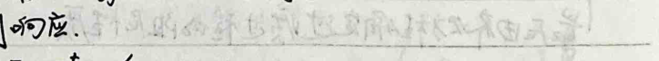
The differential equation is:
$$\frac{d^2u}{dt^2} + 2\alpha\frac{du}{dt} + \omega_0^2u = f(t) = 0$$
or
$$\frac{d^2u}{dt^2} + 2\alpha\frac{du}{dt} + \omega_0^2u = f(t) = 0$$
If u = Ae^(λt), then:
$$\lambda^2e^{2\lambda t} + 2\alpha\lambda e^{\lambda t} + \omega_0^2e^{\lambda t} = 0$$
Thus,
$$\lambda^2 + 2\alpha\lambda + \omega_0^2 = 0$$
The characteristic equation is:
$$\lambda = \frac{-2\alpha \pm \sqrt{4\alpha^2 - 4\omega_0^2}}{2} = -\alpha \pm \sqrt{\alpha^2 - \omega_0^2}$$
When Δ > 0, there are two different real roots. The general solution is:
$$u = C_1e^{(\alpha - \sqrt{\alpha^2 - \omega_0^2})t} + C_2e^{(\alpha + \sqrt{\alpha^2 - \omega_0^2})t}$$
When Δ = 0, the characteristic equation has one real root. The general solution is:
$$u = te^{-\alpha t}$$
When Δ < 0, there are two complex conjugate roots. The general solution is:
$$u = C_1e^{-\alpha t}e^{j\sqrt{\omega_0^2 - \alpha^2}t} + C_2e^{-\alpha t}e^{-j\sqrt{\omega_0^2 - \alpha^2}t}$$
$$= e^{-\alpha t}(C_1\cos(\sqrt{\omega_0^2 - \alpha^2}t) + C_2\sin(\sqrt{\omega_0^2 - \alpha^2}t))$$
$$= ke^{-\alpha t}\sin(\sqrt{\omega_0^2 - \alpha^2}t + \phi)$$
k and φ are constants.
If we want to draw the time-domain characteristics of the circuit parameters directly from the differential equation without solving the equation, we can:
1. First, find u and its first derivative's initial values; 2. Next, find u and its steady-state values; 3. Finally, determine the transient process's damping nature.
If there is an excitation, then according to the solution of the second-order linear homogeneous differential equation, specifically:
If the excitation is a sine wave, then:
$$u'' + 2\alpha u' + \omega_0^2u = A\sin(\omega t + \phi)$$
The steady-state solution is:
$$u = Ae^{j\omega t + \phi}$$
Then,
$$-w^2\frac{A}{j^2}e^{j\omega t + \phi} + w\frac{A}{j^2}e^{j\omega t + \phi} + \frac{2\alpha A}{j^2}e^{j\omega t + \phi} = \frac{1}{j^2}e^{j\omega t + \phi} - \frac{1}{j^2}e^{-j\omega t + \phi}$$
$$+ w^2\frac{A}{j^2}e^{j\omega t + \phi} - w\frac{A}{j^2}e^{j\omega t + \phi} + \frac{2\alpha A}{j^2}e^{j\omega t + \phi} = \frac{1}{j^2}e^{j\omega t + \phi} - \frac{1}{j^2}e^{-j\omega t + \phi}$$
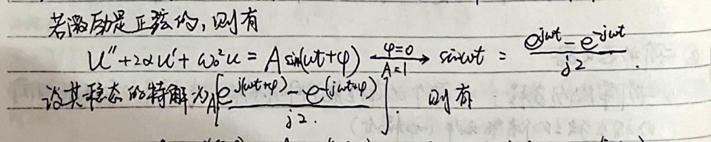
3. Superposition method to solve dynamic circuits.
Zero input response: linearly dependent on initial conditions (all initial conditions, i.e., Uo, Io...). Zero state response: linearly dependent on excitation (no excitation, i.e., Us, Is...).
To find the overall response under any excitation, decompose the response into zero input and zero state. Zero input can be obtained using the superposition method (1st order), characteristic root method (2nd order), etc. Zero state can be obtained by decomposing any excitation into a linear combination of simple excitations, and then integrating.
$$f(t)$$
$$f(t) = f(0)[\delta(t) - \delta(t - \Delta t)] + f(\Delta t)[\delta(t - \Delta t) - \delta(t - 2\Delta t)] + \ldots + f(N-1)\Delta t[\delta(t - (N-1)\Delta t) - \delta(t - N\Delta t)]$$
$$\therefore f(t) = \lim_{N \to \infty} \sum_{k=0}^{N-1} f(k\Delta t)[\delta(t - k\Delta t) - \delta(t - (k+1)\Delta t)]$$
$$= \lim_{N \to \infty} \sum_{k=0}^{N-1} f(k\Delta t)\Delta t \frac{1}{\Delta t}[\delta(t - k\Delta t) - \delta(t - (k+1)\Delta t)]$$
$$= \lim_{N \to \infty} \sum_{k=0}^{N-1} f(k\Delta t)\Delta t p(t - k\Delta t)$$
Where $$p(t - k\Delta t) = \frac{1}{\Delta t}[\delta(t - k\Delta t) - \delta(t - (k+1)\Delta t)]$$ is a delayed unit impulse function.
According to the linearity of the circuit, $$f(k\Delta t)\Delta t p(t - k\Delta t)$$ in the sought path is linearly dependent on the zero state. The response of the zero state is $$f(k\Delta t)\Delta t h(t - k\Delta t)$$, where $$h(t)$$ is the unit impulse response of the circuit.
Therefore, the response of the sought path $$h(t) = \lim_{N \to \infty} \sum_{k=0}^{N-1} f(k\Delta t)\Delta t h_p(t - k\Delta t)$$
$$= \int_0^t f(\tau)h(t - \tau)d\tau$$
When N approaches infinity, ΔT approaches dT, kΔT approaches T. The unit impulse function becomes the unit impulse function p(t) → δ(t). The corresponding unit impulse function's zero-state response becomes the unit impulse response h_p(t) → h(t). Therefore, the zero-state response N(t) = ∫_0^t f(τ)h(t-τ)dτ.
Below, we explain how to find the unit impulse response h(t):
Definition: The limit of the unit impulse function: ∫_(-∞)^∞ δ(t)dt = 1, δ(t) = 0 (t ≠ 0). Its delay: δ(t - t_0) = 0 (t ≠ t_0), ∫_(-∞)^∞ δ(t - t_0)dt = 1. And kδ(t - t_0) represents a unit impulse function at time t_0 with strength k. Properties: (1) ∫_(-∞)^t δ(τ - t_0)dτ = 0 (t < t_0) = δ(t - t_0) (unit step function) 1 (t > t_0). Thus, d/dt δ(t - t_0) = δ(t - t_0). (2) Linearity: f(t) · δ(t - t_0) = f(t_0) δ(t - t_0). Response: (1) Using the definition to find h(t), if the input is δ(t - t_0), then for t_0 ~ t_0^+, t_0^+ ~ +∞, the zero-state response. (2) Using the property ∂/∂t δ(t - t_0) = δ(t - t_0). Assuming the zero-state response (unit step function) of the unit step function is s(t), due to the zero-state linearity, s(t) has a zero-state response of s(t); the zero-state response of s(t - Δ) is s(t - Δ), which is evident. h(t) = lim_Δ→0 Δ [s(t) - s(t - Δ)] = ∂/∂t s(t) (Given: δ(t) = lim_Δ→0 Δ [s(t) - s(t - Δ)] = ∂/∂t s(t)). And the zero-state response of the unit step function is: Aδ(t - t_0) → As(t - t_0). Therefore, by the zero-state response and the zero-input response, the overall response can be obtained for any input.
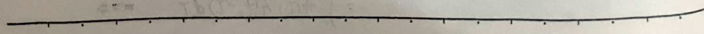
4. State Variable Method
1. State Equation: $$\dot{\textbf{x}} = A\textbf{x} + B\textbf{u}$$ - x: State variables, each independent u, v. - x: First-order derivative of x, dt ~ u. - u: All inputs u1, u2...
1) Can be applied to linear networks, also to non-linear networks. 2) Output equation: y = Cx + Du, where y is the output vector. 3) According to the superposition principle, replace C with 0 and L with 0, obtaining a new circuit with n (state variables) + m (independent sources) components. Solve for each power source (m+n) individually under the influence of u1 and u2, and then sum them up, considering the corresponding C or L. This yields x, and then combine to get the state equation x = Ax + Bu.
2. Solution Method: Characteristic Value Method, Laplace Transform Method.
5. Example: Circuit Simulation of Differential Equations. $$y + ay + by = ce$$
**Chapter 7. Steady-State Analysis of AC Circuits**
1. **Analysis Foundation (AC Elements, Power) and Examples**
Theoretically, solving non-homogeneous differential equations can address AC circuit responses. However, through the use of complex numbers, the solution of differential equations is transformed into solving algebraic equations, simplifying the AC circuit response analysis. At the same time, power calculations are also simplified. In the use of Fourier series, the steady-state response of AC circuits under non-harmonic periodic excitation can be easily obtained. The AC excitation: \( i = I_m \sin(\omega t + \phi) \). The effective value \( I = \sqrt{\frac{1}{T} \int_0^T i^2 dt} = \frac{I_m}{\sqrt{2}} \). The derivative, integral, and frequency addition of the result are all AC quantities. Therefore, the voltage and current in linear circuits are AC quantities (all obtained through the above operations). When analyzing AC steady-state circuits, for AC elements, we can ignore the frequency and only consider the amplitude and phase.
\[ \therefore e^{j(\omega t + \phi)} = \cos(\omega t + \phi) + j \sin(\omega t + \phi) \]
\[ \therefore \cos(\omega t + \phi) = \text{Re}(e^{j(\omega t + \phi)}) \]
\[ \therefore i = I_m \sin(\omega t + \phi) = I_m \text{Im}(e^{j(\omega t + \phi)}) = \text{Im}(I_m e^{j(\omega t + \phi)}) \]
\[ = I_m \sqrt{2} e^{j\phi} e^{j\omega t} \]
\[ \therefore i = I e^{j\phi} \text{ and } I < \phi. \]
\[ \therefore i = I_m \sqrt{2} e^{j\omega t}. \]
In the determined frequency \(\frac{2\pi}{T}\), \(i\) and \(j\) have a one-to-one correspondence. The operation of \(i\) can be converted into the operation of \(j\).
(1) **Expression of \(i\)**
\(i\) has two expression methods: \(i = I e^{j\phi}\) and \(i = I \cos(\phi) + j I \sin(\phi)\). Where \(I > 0\), \(\phi \in [-\pi, \pi]\), which can represent a phase, and \(j\) represents a positive AC quantity.
(2) **Phase Diagram**
The imaginary unit i is a complex number, so it can be uniquely represented on the complex plane. At the same time, due to the existence of the rotation circle e^(jw), the phase (same AC steady-state circuit) in the complex plane is always rotating counterclockwise, but the magnitude remains unchanged, so e^(jw) does not affect the operation of i and the conversion of i into a real number.
(3) Operations of i
1) For i = Icosφ + jIsinφ, the addition, subtraction, multiplication, and division follow the rules of complex number operations.
2) For i = I∠φ, the addition and subtraction are not convenient, but the multiplication and division are simpler.
i1 * i2 = I1∠φ1 * I2∠φ2 = I1 * I2∠(φ1 + φ2)
i1 / i2 = I1∠φ1 / I2∠φ2 = I1 / I2∠(φ1 - φ2)
Note: i1 * i2 = (I1cosφ1 + jI1sinφ1) * (I2cosφ2 + jI2sinφ2)
= I1 * I2 [cos(φ1cosφ2 - sinφ1sinφ2) + j(sinφ1cosφ2 + cosφ1sinφ2)]
= I1 * I2 [cos(φ1 + φ2) + jsin(φ1 + φ2)]
i1 / i2 = I1 / I2 * (cosφ1 + jsinφ1) * (cosφ2 - jsinφ2) / 1
= I1 / I2 [cos(φ1cosφ2 + sinφ1sinφ2) + j(cosφ1cosφ2 - sinφ1sinφ2)]
= I1 / I2 [cos(φ1 - φ2) + jsin(φ1 - φ2)]
Special case: j * I∠φ = I∠φ * I∠φ = I∠(φ + 90°)
-j * I∠φ = I∠φ * I∠φ = I∠(φ - 90°)
-I∠φ = I∠φ * I∠φ = I∠(φ + 180°)
3) Differentiation: d(i) / dt = d / dt Im[√2 * i * e^(jw)] = Im[d / dt (√2 * i * e^(jw))] = Im[√2 * w * i * e^(jw)]
= Im[√2 * (w * i) * e^(j(wt + 90°))]
4) Integration: ∫ i dt = Im[∫ √2 * i * e^(jw) dt] = Im[∫ √2 * 1 / jw * i * e^(jw) dt]
= Im[∫ √2 * (1 / jw) * e^(j(wt - 90°))]
5) Modulus: |(a + j*b) * (c + j*d)| = |ac - bd + j(ad + bc)| = √(ac - bd)^2 + (ad + bc)^2
= √(a^2 + b^2) * (c^2 + d^2) = |a + j*b| * |c + j*d|
= √(a^2 + b^2) * √(c^2 + d^2) = |a + j*b| * |c + j*d|
= √(a^2 + b^2) * √(c^2 + d^2) = |a + j*b| * |c + j*d|
= √(a^2 + b^2) * √(c^2 + d^2) = |a + j*b| * |c + j*d|
= √(a^2 + b^2) * √(c^2 + d^2) = |a + j*b| * |c + j*d|
= √(a^2 + b^2) * √(c^2 + d^2) = |a + j*b| * |c + j*d|
= √(a^2 + b^2) * √(c^2 + d^2) = |a + j*b| * |c + j*d|
= √(a^2 + b^2) * √(c^2 + d^2) = |a + j*b| * |c + j*d|
= √(a^2 + b^2) * √(c^2 + d^2) = |a + j*b| * |c + j*d|
= √(a^2 + b^2) * √(c^2 + d^2) = |a + j*b| * |c + j*d|
= √(a^2 + b^2) * √(c^2 + d^2) = |a + j*b| * |c + j*d|
= √(a^2 + b^2) * √(c^2 + d^2) = |a + j*b| * |c + j*d|
= √(a^2 + b^2) * √(c^2 + d^2) = |a + j*b| * |c + j*d|
= √(a^2 + b^2) * √(c^2 + d^2) = |a + j*b| * |c + j*d|
= √(a^2 + b^2) * √(c^2 + d^2) = |a + j*b| * |c + j*d|
= √(a^2 + b^2) * √(c^2 + d^2) = |a + j*b| * |c + j*d|
= √(a^2 + b^2) * √(c^2 + d^2) = |a + j*b| * |c + j*d|
= √(a^2 + b^2) * √(c^2 + d^2) = |a + j*b| * |c + j*d|
= √(a^2 + b^2) * √(c^2 + d^2) = |a + j*b| * |c + j*d|
= √(a^2 + b^2) * √(c^2 + d^2) = |a + j*b| * |c + j*d|
= √(a^2 + b^2) * √(c^2 + d^2) = |a + j*b| * |c + j*d|
= √(a^2 + b^2) *
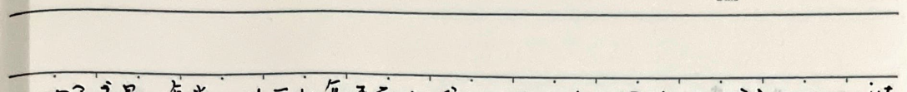
### Component Constraints
**Resistance:** $$ u = R i $$
**Capacitor:** $$ u = \sqrt{2} U \sin(\omega t + \varphi) $$ $$ i = C \frac{du}{dt} = \sqrt{2} \omega C U \sin(\omega t + \varphi + 90^\circ) $$ $$ \therefore i = j \omega C u, u = j \left( \frac{1}{\omega C} \right) i $$ $$ X_{\text{capacitive}} = -\frac{1}{\omega C}, B_{\text{capacitive}} = \omega C $$
**Inductor:** $$ i = \sqrt{2} I \sin(\omega t + \varphi) $$ $$ \therefore u = L \frac{di}{dt} = \sqrt{2} \omega L I \sin(\omega t + \varphi + 90^\circ) $$ $$ \therefore i = j \omega L i, i = j \left( \frac{1}{\omega L} \right) u $$ $$ X_{\text{inductive}} = \omega L, B_{\text{inductive}} = -\frac{1}{\omega L} $$
**From the above derivation, it can be inferred that the voltage across the resistor is equal to the voltage across the inductor. Thus,** $$ Z = \frac{U}{I} = \frac{U}{I} = (\varphi_u - \varphi_i) = |Z| \angle \varphi = R + jX $$ $$ R \text{ is the resistance, } X \text{ is the reactance } \in \{X, X_C\} $$ $$ Z \text{ is the impedance, in a DC circuit, it is equivalent to resistance. } $$ $$ \text{In mathematics, DC linear resistive circuits and AC steady-state linear circuits are completely consistent. Kirchhoff's laws can be derived in AC steady-state and expressed in complex form. } $$
### Power
**General case:** $$ p(t) = \sqrt{2} U \sin(\omega t + \varphi_u) \times \sqrt{2} I \sin(\omega t + \varphi_i) $$ $$ = UI \cdot 2 \sin(\omega t + \varphi_u) \sin(\omega t + \varphi_i) $$ $$ = UI \cos(\varphi_u - \varphi_i) - UI \cos(2\omega t + \varphi_u + \varphi_i) $$ $$ = UI \cos\varphi - UI \cos(2\omega t + \varphi_u + \varphi_i) $$ $$ \text{This is the instantaneous power at the original end. } $$
**Average power:** $$ P = \frac{1}{T} \int_0^T p(t) dt = UI \cos\varphi $$ $$ \text{This is the power consumed by the resistor, also known as active power. } $$ $$ \text{The power meter measures active power. The current measured is the RMS current. } $$ $$ \Delta \text{measured voltage RMS, } \varphi = \varphi_u - \varphi_i \text{ is the phase angle. } $$
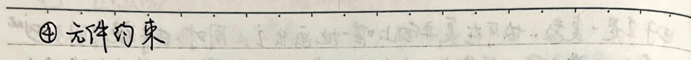
No. Date
\section*{Reactive Power: Q = UI \sin \phi (var)}
This represents the power exchanged between the circuit and the external circuit, caused by C and L.
Apparent Power: S = UI V·A
\begin{tikzpicture} \draw[->] (-1,0) -- (4,0) node[right] {P}; \draw[->] (0,-1) -- (0,4) node[above] {Q}; \draw (0,0) -- (1,1) -- (2,2) -- (3,3) -- (4,4) node[above right] {S}; \draw (1,0) -- (1,1) node[above] {$\phi$}; \end{tikzpicture}
When R is constant, \(\phi \in [-\frac{\pi}{2}, \frac{\pi}{2}]\).
\begin{cases} Inductive: \(\phi > 0\), lagging power factor \\ Capacitive: \(\phi < 0\), leading power factor \end{cases}
In actual electrical equipment, many are inductive loads. To improve the power factor, capacitors are connected in parallel to the inductive load to increase the overall power factor and improve power utilization.
\[ \begin{aligned} &\text{Parallel capacitor does not affect active power} \quad \therefore UI_2 \cos \phi_1 = UI \cos \phi_2 = P. \\ &\therefore I_2 = \frac{P}{U \cos \phi_1}, \quad I = \frac{P}{U \cos \phi_2} \\ &\therefore I_c = I - I_2 = I \cos \phi_2 + j I \sin \phi_2 - I_2 \cos \phi_1 - j I_2 \sin \phi_1 \\ &= I \cos \phi_2 - I_2 \cos \phi_1 + j (I \sin \phi_2 - I_2 \sin \phi_1) \\ &\therefore I_c = \sqrt{(I \cos \phi_2 - I_2 \cos \phi_1)^2 + (I \sin \phi_2 - I_2 \sin \phi_1)^2} \\ &= \sqrt{I^2 + I_2^2 - 2 I I_2 \cos (\phi_2 - \phi_1)} \\ &= \frac{P}{U} \sqrt{\frac{1}{\cos \phi_1} + \frac{1}{\cos \phi_2} - \frac{2 \cos (\phi_2 - \phi_1)}{\cos \phi_1 \cos \phi_2}} \\ &= \frac{P}{U} (\tan \phi_1 - \tan \phi_2) = \omega C U \\ &\therefore C = \frac{P}{\omega U^2} (\tan \phi_1 - \tan \phi_2) \end{aligned} \]
\section*{Summary: Power can be represented by complex numbers as \( S = UI^* = (U \cos \phi + j U \sin \phi)(I \cos \phi - j I \sin \phi) \)}
\[ = UI \cos (\phi - \phi) + j UI \sin (\phi - \phi) = UI \cos \phi + j UI \sin \phi = P + j Q \]
\section*{Conclusion: The power factor can be improved by connecting capacitors in parallel to the inductive load.}


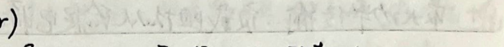
Maximum Power Transfer: Load resistance from a given power source to obtain maximum real power condition.
$$ i = \frac{U_S}{Z_S + Z} = \frac{U_S}{(R_S + R) + j(X_S + X)} \quad \therefore Z = \sqrt{(R_S + R)^2 + (X_S + X)^2} $$
$$ \therefore P = I^2 R = \frac{U_S^2 R}{(R + R_S)^2 + (X + X_S)^2} \quad \text{Variables are } R \text{ and } X, R > 0. $$
1) Only Z's imaginary part can vary. $$ \text{When } X + X_S = 0 \text{, i.e., } X = -X_S \text{, } P_{max} = \frac{U_S^2 R}{(R + R_S)^2}. $$
2) R and X can vary $$ \because P > 0, \therefore X + X_S = 0 \text{ when } P \text{ can reach maximum, } \frac{\partial}{\partial R} \left[ \frac{U_S^2 R}{(R + R_S)^2} \right] = 0 \quad \therefore R = R_S $$ $$ \therefore Z = Z_S^* \text{ (conjugate)} $$ $$ \therefore P_{max} = \frac{U_S^2}{4R_S}, \quad \eta = 50\%. $$
3) Magnitude can vary, resistance remains constant. $$ P = \frac{U_S^2 |Z| \cos \phi}{(|Z| \cos \phi + R_S)^2 + (|Z| \sin \phi + X_S)^2} = \frac{U_S^2 \cos \phi |Z|}{|Z|^2 + 2(R_S \cos \phi + X_S \sin \phi) |Z| + R_S^2 + X_S^2} $$ $$ = \frac{U_S^2 \cos \phi}{|Z| + \frac{R_S^2 + X_S^2}{|Z|} + 2(R_S \cos \phi + X_S \sin \phi)} \leq \frac{U_S^2 \cos \phi}{2\sqrt{R_S^2 + X_S^2} + 2(R_S \cos \phi + X_S \sin \phi)} $$ $$ \text{At this time, } |Z| = \sqrt{R_S^2 + X_S^2}. $$
(6) Example - Transformer. 1) Use the right-hand rule to determine the direction of the magnetic field produced by the current and the mutual relationship between them. 2) Determine whether the mutual magnetic flux is strengthened or weakened by the same name end. The mutual inductance between the two windings needs to be determined. If the current reference direction enters from the same name end, the voltage reference direction of the other winding is from the same name end. If the current reference direction enters from the non-name end, the voltage reference direction of the other winding is from the non-name end. The size is M * di/dt. The opposite is also true. 3) The coupling coefficient k: The two windings of the transformer have a mutual inductance. The stronger the mutual inductance, the stronger the coupling. k = M / √L1L2. $$ \therefore k^2 = \frac{M^2}{L_1 L_2} = \frac{M^2 u_1 u_2}{L_1 L_2 u_1 u_2} = \frac{N_2 \phi_1 N_1 \phi_2}{N_1 \phi_1 N_2 \phi_2} = \frac{\phi_1 \phi_2}{\phi_1 \phi_2} $$

No. Date
The mutual inductance between two coils is determined by the formula: $$\Phi_{1} = \Phi_{2} + \Phi_{3}$$ where $\Phi_{1}$ is the mutual flux, $\Phi_{2}$ is the flux due to the mutual inductance, and $\Phi_{3}$ is the flux due to the leakage inductance of coil 1. Since the mutual inductance is always positive, we have: $$\Phi_{1} \geq \Phi_{2}$$ and similarly, $$\Phi_{2} \geq \Phi_{3}$$ When the mutual inductance is at its maximum, the two coils are completely coupled, and the mutual inductance is given by: $$M_{max} = \sqrt{L_{1}L_{2}}$$
4) Analysis of Circuits with Inductors: Example 1.1: Series Connection $$u = L_{1}\frac{di}{dt} + M\frac{di}{dt} + L_{2}\frac{di}{dt} + M\frac{di}{dt}$$ $$u = (L_{1} + L_{2} + 2M)\frac{di}{dt}$$ $$\therefore L_{eq} = L_{1} + L_{2} + 2M$$
Example 1.2: Series Anti-Parallel Connection $$u = L_{1}\frac{di}{dt} - M\frac{di}{dt} + L_{2}\frac{di}{dt} - M\frac{di}{dt}$$ $$u = (L_{1} + L_{2} - 2M)\frac{di}{dt}$$ $$\therefore L_{eq} = L_{1} + L_{2} - 2M$$
Example 2.1: Same Side Parallel Connection $$u = L_{1}\frac{di}{dt} + M\frac{di}{dt} = L_{2}\frac{di}{dt} + M\frac{di}{dt}$$ $$\therefore u = \frac{L_{1}L_{2} - M^{2}}{L_{1} + L_{2} - 2M}\frac{di}{dt}$$ $$\therefore L_{eq} = \frac{L_{1}L_{2} - M^{2}}{L_{1} + L_{2} - 2M}$$
Example 2.2: Different Side Parallel Connection $$u = L_{1}\frac{di}{dt} - M\frac{di}{dt} = L_{2}\frac{di}{dt} - M\frac{di}{dt}$$ $$\therefore u = \frac{L_{1}L_{2} - M^{2}}{L_{1} + L_{2} - 2M}\frac{di}{dt}$$ $$\therefore L_{eq} = \frac{L_{1}L_{2} - M^{2}}{L_{1} + L_{2} - 2M}$$
Example 3.1: Inductor Transformation $$u_{3} = L_{1}\frac{di}{dt} + u\frac{di^{2}}{dt^{2}} = (L_{1} - M)\frac{di}{dt} + M\frac{di^{2}}{dt^{2}}$$
No. eg 3.2 Date
$$\frac{1}{L_1} - \frac{1}{L_2} \Rightarrow \frac{1}{L_1 + M} - \frac{M}{L_2 + M}$$
$$\left\{ \begin{array}{l} u_{13} = L_1 \frac{di_1}{dt} - M \frac{di_2}{dt} = (L_1 + M) \frac{di_1}{dt} - M \frac{di_2}{dt} \\ u_{23} = L_2 \frac{di_2}{dt} - M \frac{di_1}{dt} = (L_2 + M) \frac{di_2}{dt} - M \frac{di_1}{dt} \end{array} \right.$$
If the coupling between two coils cannot be directly eliminated in form, a loop equation must be derived to solve it. Sometimes, a connecting wire is added to connect two not connected but inductively coupled circuits to form a common terminal for elimination of coupling.
5) Transformer (H=MB)
eg.1 Core Transformer
$$\begin{aligned} &\dot{u}_1 = (R_1 + j\omega L_1) \dot{I}_1 + j\omega M \dot{I}_2 \\ &\dot{u}_2 = j\omega M \dot{I}_1 + (R_2 + j\omega L_2) \dot{I}_2 \end{aligned}$$
$$\begin{aligned} &\dot{u}_1 = (R_1 + j\omega L_1) \dot{I}_1 + j\omega M \dot{I}_2 \\ &\dot{u}_2 = j\omega M \dot{I}_1 + (R_2 + j\omega L_2 + Z_2) \dot{I}_2 = 0 \end{aligned}$$
$$\begin{aligned} &Z_1 = R_1 + j\omega L_1 \text{ Primary circuit impedance} \\ &Z_2 = R_2 + j\omega L_2 + Z_2 \text{ Secondary circuit impedance} \end{aligned}$$
$$\begin{aligned} &\dot{I}_1 = \frac{\dot{u}_1}{Z_1} + \frac{(\omega M)^2}{Z_2} \\ &\dot{I}_2 = -\frac{j\omega M \dot{u}_1}{Z_2 + \frac{(\omega M)^2}{Z_1}} \end{aligned}$$
$$\begin{aligned} &\dot{u}_1 = \frac{\dot{u}_1}{Z_1} + \frac{(\omega M)^2}{Z_2} \\ &\dot{u}_2 = -\frac{j\omega M \dot{u}_1}{Z_2 + \frac{(\omega M)^2}{Z_1}} \end{aligned}$$
$$\begin{aligned} &R_1 \dot{I}_1 + j\omega (L_1 - M) \dot{I}_1 + j\omega (Z_1 + Z_2) \dot{I}_2 = \dot{u}_1 \\ &j\omega M (\dot{I}_1 + \dot{I}_2) + (R_2 + Z_2) \dot{I}_2 + j\omega (L_2 - M) \dot{I}_2 = 0 \end{aligned}$$
$$\begin{aligned} &\dot{u}_1 = \frac{\dot{u}_1}{Z_1} + \frac{(\omega M)^2}{Z_2} \\ &\dot{u}_2 = -\frac{j\omega M \dot{u}_1}{Z_2 + \frac{(\omega M)^2}{Z_1}} \end{aligned}$$
$$\begin{aligned} &R_1 \dot{I}_1 + j\omega (L_1 - M) \dot{I}_1 + j\omega (Z_1 + Z_2) \dot{I}_2 = \dot{u}_1 \\ &j\omega M (\dot{I}_1 + \dot{I}_2) + (R_2 + Z_2) \dot{I}_2 + j\omega (L_2 - M) \dot{I}_2 = 0 \end{aligned}$$
$$\begin{aligned} &\dot{u}_1 = \frac{\dot{u}_1}{Z_1} + \frac{(\omega M)^2}{Z_2} \\ &\dot{u}_2 = -\frac{j\omega M \dot{u}_1}{Z_2 + \frac{(\omega M)^2}{Z_1}} \end{aligned}$$
$$\begin{aligned} &R_1 \dot{I}_1 + j\omega (L_1 - M) \dot{I}_1 + j\omega (Z_1 + Z_2) \dot{I}_2 = \dot{u}_1 \\ &j\omega M (\dot{I}_1 + \dot{I}_2) + (R_2 + Z_2) \dot{I}_2 + j\omega (L_2 - M) \dot{I}_2 = 0 \end{aligned}$$
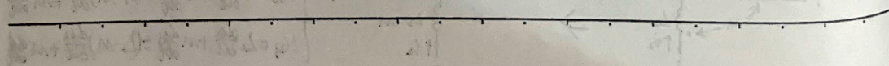
The text and formulas in the image can be translated and summarized as follows:
---
Also, by adding a common terminal wire to the transformer's windings, a T-shaped equivalent circuit can be obtained.
$$ \begin{aligned} & \text{Example 2: Full Coupled Transformer.} \\ & \left\{\begin{array}{l} u_{1}=j\omega L_{1} i_{1}+j\omega \sqrt{L_{1} L_{2}} i_{2} \\ u_{2}=j\omega \sqrt{L_{2}} i_{1}+j\omega L_{2} i_{2} \end{array}\right. \\ & \Rightarrow \left\{\begin{array}{l} \frac{u_{1}}{u_{2}}=\sqrt{\frac{L_{1}}{L_{2}}}=n \\ i_{1}=\frac{u_{1}}{j\omega L_{1}}-\frac{1}{n} i_{2} \end{array}\right. \end{aligned} $$
---
Example 3: Ideal Transformer. ($L_{1}, L_{2}, M \rightarrow \infty, \sqrt{\frac{L_{1}}{L_{2}}}=n, \text{on full coupling}$)
$$ \begin{aligned} & \left\{\begin{array}{l} u_{1}=n u_{2} \\ i_{1}=-\frac{1}{n} i_{2} \end{array}\right. \\ & \sim \left\{\begin{array}{l} u_{1} \\ u_{2} \end{array}\right\} \cdot \left\{\begin{array}{l} \frac{1}{n} \\ 1 \end{array}\right\} \sim p=u_{1} i_{1}+u_{2} i_{2}=n u_{2}+\left(\frac{1}{n} i_{2}\right)+u_{2} i_{2}=0. \end{aligned} $$
---
Example 4: Intermediate Tap Transformer
$$ \begin{aligned} & \text{Full Wave Rectifier; Phase Shifter; AC-DC Conversion.} \end{aligned} $$
---
The text discusses the transformation of a transformer circuit into a T-shaped equivalent circuit, providing examples of full coupled, ideal, and intermediate tap transformers. The mathematical formulas describe the relationships between voltages and currents in these transformer configurations.
2. Analysis of Periodic Non-Periodic Steady-State
(1) Decomposition of Periodic Non-Periodic Signals into Components
$$ f(t) = a_0 + \sum_{k=1}^{\infty} [a_k \cos(k\omega_1 t) + b_k \sin(k\omega_1 t)] $$
$$ = a_0 + \sum_{k=1}^{\infty} c_k \sin(k\omega_1 t + \phi_k) $$
$$ = a_0 + c_1 \sin(\omega_1 t + \phi_1) + \sum_{k=2}^{\infty} c_k \sin(k\omega_1 t + \phi_k) $$
↓ Direct Component (DC Value) Basal Wave (ω1 = 2π/T) ↓ kth Harmonic (k ≥ 2) Converges
(2) Effective Value and Average (Effective) Power Calculation
$$ i = I_0 + \sum_{k=1}^{\infty} I_k \sin(k\omega_1 t + \phi_k) $$
$$ I = \sqrt{\frac{1}{T} \int_0^T [I_0 + \sum_{k=1}^{\infty} I_k \sin(k\omega_1 t + \phi_k)]^2 dt} $$
$$ \text{Since} \quad \frac{1}{T} \int_0^T I_0^2 dt = I_0^2, \quad \frac{1}{T} \int_0^T I_k^2 \sin^2(k\omega_1 t + \phi_k) dt = \frac{2I_k^2}{2} = I_k^2 $$
$$ \frac{1}{T} \int_0^T 2I_0 I_k \sin(k\omega_1 t + \phi_k) dt = \frac{1}{T} \int_0^T 2I_k \sin(k\omega_1 t + \phi_k) \cdot I_k \sin(k\omega_1 t + \phi_k) dt $$
$$ \therefore I = \sqrt{I_0^2 + \sum_{k=1}^{\infty} I_k^2}, I_0 \text{ is the DC component, } I_k \text{ is the AC effective value, and the AC component is} $$
$$ p = u_i = [U_0 + \sum_{k=1}^{\infty} \sqrt{2} U_k \sin(k\omega_1 t + \phi_{uk})] \cdot [I_0 + \sum_{k=1}^{\infty} \sqrt{2} I_k \sin(k\omega_1 t + \phi_{ik})] $$
$$ \therefore p = \frac{1}{T} \int_0^T p dt = U_0 I_0 + \sum_{k=1}^{\infty} U_k I_k \cos(\phi_{uk} - \phi_{ik}) $$
$$ = U_0 I_0 + \sum_{k=1}^{\infty} U_k I_k \cos\phi_k, U_0 I_0 \text{ is the DC power, } U_k I_k \cos\phi_k \text{ is the AC component's average power} $$
(3) Steady-State Response to Periodic Non-Periodic Excitation
The response is decomposed into components (DC and various frequency AC components) and their individual responses are calculated. The total steady-state response is obtained by summing these components.
3. Frequency response → oscillation → filter.
For dynamic components, the impedance (amplitude, phase) is a function of frequency.
Example: MOSFET parasitic capacitance's impact on transient and steady-state response.
\begin{equation} U_{in} \xrightarrow{G_1} \xrightarrow{D} G_1 \xrightarrow{D} U_{o} \end{equation}
Transient response (rectangular pulse excitation) vs. Steady-state response (small signal excitation).
\begin{equation} \Delta U_{in} = 0 \text{ when } U_{in} = 0 \end{equation}
\begin{equation} U_{o1}(0^+) = U_{s} \end{equation}
\begin{equation} U_{o1}(\infty) \approx 0 \end{equation}
\begin{equation} T = \frac{R_L R_{on} C_{as2}}{R_L + R_{on}} \end{equation}
\begin{equation} x R_{on} C_{as2} \end{equation}
\begin{equation} U_{o1}(t) \approx U_{s} e^{-\frac{t}{T}} \end{equation}
\begin{equation} U_{o1}(t) = U_{o2} \end{equation}
\begin{equation} t_{delay} = T \left( \ln U_{s} - \ln U_{o1} \right) \end{equation}
\begin{equation} \Delta U_{in} = 1 \text{ when } U_{in} = 1 \end{equation}
\begin{equation} U_{o1}(0^+) \approx 0 \end{equation}
\begin{equation} U_{o1}(\infty) = U_{s} \end{equation}
\begin{equation} T = R_L C_{as2} \end{equation}
\begin{equation} U_{o1}(t) \approx U_{s} \left( 1 - e^{-\frac{t}{T}} \right) \end{equation}
\begin{equation} U_{o1}(t) = U_{o2} \end{equation}
\begin{equation} t_{delay} = T \left( \ln U_{s} - \ln U_{o1} \right) \end{equation}
\begin{equation} H = \frac{\Delta U_{o}}{\Delta U_{in}} = \frac{\Delta U_{ps1}}{\Delta U_{gs1}} = -\frac{Z_{ps1} R_L}{\Delta U_{gs1}} \end{equation}
\begin{equation} H = -g_m R_L = -\frac{g_m \Delta U_{ps1} R_L}{\Delta U_{gs1}} \end{equation}
\begin{equation} H = g_m R_L \cdot \frac{R_L}{1 + j \omega C_{as2} R_L} \cdot \Delta \dot{U}_{ps1} \end{equation}
\begin{equation} H = \frac{g_m^2 R_L^2}{1 + j \omega C_{as2} R_L} \cdot \Delta \dot{U}_{gs1} \end{equation}
\begin{equation} H = \frac{g_m^2 R_L^2}{1 + j \omega C_{as2} R_L} \cdot \Delta \dot{U}_{gs1} \end{equation}
### Resonance Classification, Conditions, Equivalent Impedance, and Quality Factor
#### Network Function H(ω) = R / Z R: The excitation voltage in the circuit produces a stable steady-state response.
#### Series Resonance (Voltage Resonance): Z = R + j(ωL - 1/ωC), H(ω) = Uc / Us = R / (R + jωL + 1/jωC) ∴ |Z| = √(R² + (ωL - 1/ωC)²), |H(ω)| = R / √(R² + (ωL - 1/ωC)²) φ(ω) = arctan(ωL - 1/ωC) - arctan(R) = arctan(ωL - 1/ωC)
When ω₀ = √(1/LC), |Z| is minimum, |H(ω)| is maximum, φ(ω) is zero, Us is in phase. I(ω₀) = Ic / R, Ic(∞) = Is
#### Parallel Resonance (Current Resonance): Y = G + j(ωC - 1/ωL), H(ω) = Uc / Is = 1 / (G + jωC + 1/jωL) = jωL / (1 - ω²LC + jωLC) ∴ |Y| = √(G² + (ωC - 1/ωL)²), |H(ω)| = 1 / √(G² + (ωC - 1/ωL)²) φ(ω) = arctan[(ωC - 1/ωL) / G]
When ω₀ = √(1/LC), |Y| is minimum, |H(ω)| is maximum, φ(ω) is zero, Us is in phase. Ic(ω₀) = Is / G, Ic(∞) = Is
#### Parallel Resonance: When the impedance is infinite, series resonance when the impedance is zero. Therefore, the parallel resonance part can be considered as an open circuit, and the series resonance part is a short circuit. And the series resonance frequency is lower than the parallel resonance frequency (2πf₀)² = 0.
#### Quality Factor: 1) The amplification factor of the output power during resonance. 2) The circuit's energy dissipation per cycle during resonance. 3) The bandwidth of the circuit's frequency response characteristics is related to the selectivity: (2πf₀)² = 1 / (1 + Q²(η - 1)²), η = ω₀ / ω₀² - ω₁² 4) The general resonance frequency characteristic curve.
#### Quality Factor Q: Q = ω₀ / (ω₀² - ω₁²), Q²(η - 1)² = 1 / (1 + Q²(η - 1)²), η = ω₀ / ω₀² - ω₁²
2. Low-pass filter. $$H(\omega) = \frac{U_{C}}{U_{S}} = \frac{\frac{1}{j\omega C}}{R + \frac{1}{j\omega C}} = \frac{1}{1 + j\omega RC}$$ $$|H(\omega)| = \frac{1}{\sqrt{1 + (\omega RC)^2}}$$ $$\theta(\omega) = \arctan(\frac{1}{\omega RC}) - \arctan(\frac{1}{\omega C})$$
3. High-pass filter. $$H(\omega) = \frac{U_{C}}{U_{S}} = \frac{\frac{1}{j\omega L}}{R + \frac{1}{j\omega L}} = \frac{1}{1 - j\frac{\omega}{RL}}$$ $$|H(\omega)| = \frac{1}{\sqrt{1 + (\frac{\omega}{RL})^2}}$$ When |H(ω)| = $\frac{\sqrt{2}}{2}$, ω = $\frac{R}{L}$.
4. Band-pass filter, band-reject filter. $$H(\omega) = \frac{U_{C}}{U_{S}} = \frac{U_{C} \times \frac{1}{U_{S}}}{1 + j\omega RC_1}$$ $$\frac{1}{RC_2} < \frac{1}{RC_1}$$ $$H(\omega) = \frac{j\omega C_2 R_2}{1 - \omega^2 R_2 R_1 C_1 C_2 + j\omega (C_1 R_1 + C_2 R_2)}$$
The high-pass filter's cutoff frequency is less than the low-pass filter's cutoff frequency. The high-pass filter's cutoff frequency is $\frac{R}{L}$.


2) RLC Resonant Circuit Forms a Bandpass Filter $$H(\omega) = \frac{U_{R}}{U_{S}} = \frac{R}{R+j\omega L+\frac{1}{j\omega C}} = \frac{j\omega CR}{1-\omega^{2}LC+j\omega CR}$$ $$|H(\omega)| = \frac{R}{\sqrt{R^{2}+(\omega L-\frac{1}{\omega C})^{2}}} \quad (\varphi(\omega)) = \arctan \frac{\omega L-\frac{1}{\omega C}}{R}$$ $$Z(\omega) = \frac{U}{R+j(\omega L-\frac{1}{\omega C})} = \frac{Z(\omega_{0})}{1+j(\frac{\omega L}{R}-\frac{1}{\omega CR})}$$ $$Z(\omega) = \frac{Z(\omega_{0})}{\sqrt{1+(\frac{\omega L}{R}-\frac{1}{\omega CR})^{2}}} \quad Z(\omega_{0}) = \frac{1}{\sqrt{1+Q^{2}(\eta-\eta_{1})^{2}}}$$ $$\therefore Q = \frac{1}{\eta_{2}-\eta_{1}} = \frac{\omega_{0}}{\omega_{2}-\omega_{1}} \quad Q \text{越大, 通频带越窄, 由线在谐振频率附近尖锐}$$
3) Bandstop Filter $$\text{High-pass cutoff frequency is greater than low-pass cutoff frequency, i.e.}$$ $$\frac{1}{R_{1}C_{1}} > \frac{1}{R_{2}C_{2}} \text{ when}$$ $$(\frac{1}{R_{1}C_{1}} - \frac{1}{R_{2}C_{2}}) \text{ frequency is blocked.}$$
4) RLC Resonant Circuit Forms a Bandstop Filter $$U_{L} = \frac{Z_{1} \cdot R+j\omega L+\frac{1}{j\omega C}}{Z_{1}+R+j\omega L+\frac{1}{j\omega C}} \cdot I_{S}$$ $$U_{L} = \frac{\sqrt{(R_{2}R+X_{L}(\frac{1}{\omega C}-\omega L))^{2}+(R_{2}X_{L}+\omega R_{2}L-\frac{R_{2}^{2}}{\omega C})^{2}}}{(R_{2}+R)^{2}+(X_{L}+\omega L-\frac{1}{\omega C})^{2}} \cdot I_{S}$$
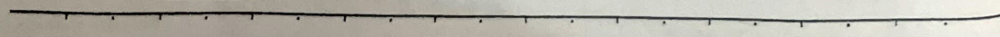
5. Full Wave Rectifier Bridge: $$U_{C} = \frac{1}{j\omega C}U_{S} = \frac{1}{1+j\omega CR_{0}}U_{S}$$ $$U_{AB} = U_{S} - U_{C} = \frac{1}{2}U_{S} - \frac{1}{1+j\omega CR_{0}}U_{S} = \frac{j\omega CR_{0} - 1}{2(1+j\omega CR_{0})}U_{S}$$ $$\therefore H(\omega) = \frac{U_{AB}}{U_{S}} = \frac{j\omega CR_{0} - 1}{2(1+j\omega CR_{0})}$$ $$|H(\omega)| = 0.5, \varphi(\omega) = \pi - 2\tan^{-1}(\omega CR_{0})$$
6. Bridge Rectifier 2: $$U_{AB} + U_{1} + iR = 0$$ $$U_{AB} = U_{S} + i\frac{1}{j\omega C} \Rightarrow H(\omega) = \frac{U_{AB}}{U_{S}} = \frac{1 + \frac{i}{j\omega C}}{1 - \frac{i}{\omega CR}}$$ $$\therefore |H(\omega)| = 1, \varphi(\omega) = \arctan(2\omega CR)$$
4. Three-Phase Circuits: Three-phase power source, three-phase load, three-phase transmission lines.
1. Symmetrical Three-Phase Circuit: $$U_{A} = \sqrt{2}U_{S}\sin(\omega t + \varphi)$$ $$U_{B} = \sqrt{2}U_{S}\sin(\omega t + \varphi - 120^\circ)$$ $$U_{C} = \sqrt{2}U_{S}\sin(\omega t + \varphi + 120^\circ)$$ $$U_{A} + U_{B} + U_{C} = i_{A} + i_{B} + i_{C} = 0$$
A phase (phase A) B phase (phase B) C phase (phase C)
$$U_{AB} = U_{A} - U_{B} = U_{A} - U_{B} - 120^\circ = \sqrt{3}U_{A} \angle 30^\circ$$ $$i_{A} + i_{B} + i_{C} = 0 \Rightarrow i_{N}$$ $$i_{A} = i_{AB} - i_{CA} = \sqrt{3}i_{AB} \angle -30^\circ$$ $$U_{AB} = U_{A}, U_{BC} = U_{B}, U_{CA} = U_{C}$$

For the delta connection's impedance, it can be converted into a star connection. When the power supply is a star connection, the single-phase method can be used for analysis.
(2) Unbalanced three-phase circuit. In actual power systems, the power supply is often unbalanced, and the load is also unbalanced.
(3) Three-phase circuit power. Single-phase active power: Up * Ip * cos(φ) = Pp Up and Ip are phase voltage and phase current
For star connection: Up = U1 / √3, Ip = I1 For delta connection: Up = U1, Ip = Z1 / √3
∴ Three-phase total power P = 3 * Up * Ip * cos(φ) = √3 * Up * I1 * cos(φ) Reactive power Q = 3 * Up * Ip * sin(φ) = √3 * Up * I1 * sin(φ) Apparent power S = 3 * Up * Ip = √3 * Up * I1
Assuming UAN = √2 * Up * cos(ωt), iA = √2 * Ip * cos(ωt + φ), the three-phase instantaneous power is PA = UAN * iA = √2 * Up * cos(ωt) * √2 * Ip * cos(ωt - φ) = Up * Ip * [cos(φ) - cos(2ωt - φ - 120°)] PB = UAN * iB = √2 * Up * cos(ωt - 120°) * √2 * Ip * cos(ωt - φ - 120°) = Up * Ip * [cos(φ) - cos(2ωt - φ + 120°)] PC = UAN * iC = √2 * Up * cos(ωt + 120°) * √2 * Ip * cos(ωt - φ + 120°) = Up * Ip * [cos(φ) - cos(2ωt - φ + 120°)]
P = PA + PB + PC = 3 * Up * Ip * cos(φ). → The motor operates smoothly.
Three-phase four-wire system: Three-phase three-wire system: $$i_A + i_B + i_C = 0$$ $$\therefore i_C = -i_A - i_B$$ $$\therefore P = U_{AN}i_A + U_{BN}i_B + U_{CN}i_C$$ $$W = W_1 + W_2 + W_3$$ $$= U_{AN}i_A + U_{BN}i_B + U_{CN}(-i_A - i_B) = (U_{AN} - U_{CN})i_A + (U_{BN} - U_{CN})i_B$$ $$= U_{AC}i_A + U_{BC}i_B$$ $$\therefore W = \overline{P} = U_{AC}I_A\cos\varphi_1 + U_{BC}I_B\cos\varphi_2$$
\section*{Summary} \section*{Summary} \section*{Summary} \section*{Summary} \section*{Summary} \section*{Summary} \section*{Summary} \section*{Summary} \section*{Summary} \section*{Summary} \section*{Summary} \section*{Summary} \section*{Summary} \section*{Summary} \section*{Summary} \section*{Summary} \section*{Summary} \section*{Summary} \section*{Summary} \section*{Summary} \section*{Summary} \section*{Summary} \section*{Summary} \section*{Summary} \section*{Summary} \section*{Summary} \section*{Summary} \section*{Summary} \section*{Summary} \section*{Summary} \section*{Summary} \section*{Summary} \section*{Summary} \section*{Summary} \section*{Summary} \section*{Summary} \section*{Summary} \section*{Summary} \section*{Summary} \section*{Summary} \section*{Summary} \section*{Summary} \section*{Summary} \section*{Summary} \section*{Summary} \section*{Summary} \section*{Summary} \section*{Summary} \section*{Summary} \section*{Summary} \section*{Summary} \section*{Summary} \section*{Summary} \section*{Summary} \section*{Summary} \section*{Summary} \section*{Summary} \section*{Summary} \section*{Summary} \section*{Summary} \section*{Summary} \section*{Summary} \section*{Summary} \section*{Summary} \section*{Summary} \section*{Summary} \section*{Summary} \section*{Summary} \section*{Summary} \section*{Summary} \section*{Summary} \section*{Summary} \section*{Summary} \section*{Summary} \section*{Summary} \section*{Summary} \section*{Summary} \section*{Summary} \section*{Summary} \section*{Summary} \section*{Summary} \section*{Summary} \section*{Summary} \section*{Summary} \section*{Summary} \section*{Summary} \section*{Summary} \section*{Summary} \section*{Summary} \section*{Summary} \section*{Summary} \section*{Summary} \section*{Summary} \section*{Summary} \section*{Summary} \section*{Summary} \section*{Summary} \section*{Summary} \section*{Summary} \section*{Summary} \section*{Summary} \section*{Summary} \section*{Summary} \section*{Summary} \section*{Summary} \section*{Summary} \section*{Summary} \section*{Summary} \section*{Summary} \section*{Summary} \section*{Summary} \section*{Summary} \section*{Summary} \section*{Summary} \section*{Summary} \section*{Summary} \section*{Summary} \section*{Summary} \section*{Summary} \section*{Summary} \section*{Summary} \section*{Summary} \section*{Summary} \section*{Summary} \section*{Summary} \section*{Summary} \section*{Summary} \section*{Summary} \section*{Summary} \section*{Summary} \section*{Summary} \section*{Summary} \section*{Summary} \section*{Summary} \section*{Summary} \section*{Summary} \section*{Summary} \section*{Summary} \section*{Summary} \section*{Summary} \section*{Summary} \section*{Summary} \section*{Summary} \section*{Summary} \section*{Summary} \section*{Summary} \section*{Summary} \section*{Summary} \section*{Summary} \section*{Summary} \section*{Summary} \section*{Summary} \section*{Summary} \section*{Summary} \section*{Summary} \section*{Summary} \section*{Summary} \section*{Summary} \section*{Summary} \section*{Summary} \section*{Summary} \section*{Summary} \section*{Summary} \section*{Summary} \section*{Summary} \section*{Summary} \section*{Summary} \section*{Summary} \section*{Summary} \section*{Summary} \section*{Summary} \section*{Summary} \section*{Summary} \section*{Summary} \section*{Summary} \section*{Summary} \section*{Summary} \section*{Summary} \section*{Summary} \section*{Summary} \section*{Summary} \section*{Summary} \section*{Summary} \section*{Summary} \section*{Summary} \section*{Summary} \section*{Summary} \section*{Summary} \section*{Summary} \section*{Summary} \section*{Summary} \section*{Summary} \section*{Summary} \section*{Summary} \section*{Summary} \section*{Summary} \section*{Summary} \section*{Summary} \section*{Summary} \section*{Summary} \section*{Summary} \section*{Summary} \section*{Summary} \section*{Summary} \section*{Summary} \section*{Summary} \section*{Summary} \section*{Summary} \section*{Summary} \section*{Summary} \section*{Summary} \section*{Summary} \section*{Summary} \section*{Summary} \section*{Summary} \section*{Summary} \section*
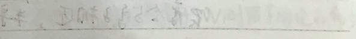
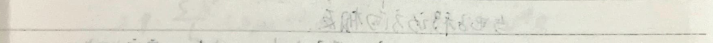
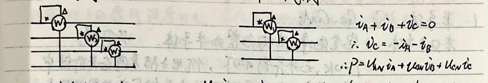

### Semiconductor Device Fundamentals
#### 1. Semiconductors: Si, Ge, GaAs...
- **Intrinsic Semiconductors:** - **(1) Perfectly Clean, Structurally Complete Semiconductors.** - **(2) At 0K, with no external influence, the valence electrons are bound in covalent bonds.** - **(3) With temperature increase or light exposure, valence electrons can split into free electrons and holes.** - **(4) Free electrons continuously escape and fill the holes, forming a current.** - **(5) At higher temperatures, intrinsic excitation increases, carrier concentration increases.** - **With concentration increase, electron-hole pairs reach dynamic equilibrium.** - **n_i = p_i = A * T^(3/2) * e^(-E_g/2kT)**
#### Doped Semiconductors: - **N-type:** - **Doping with pentavalent elements:** - **P, As, Sb.** - **Doping with trivalent elements:** - **B, Al, In.** - **At room temperature, the intrinsic carrier concentration is very low.** - **Majority carriers: free electrons.** - **Minority carriers: holes.** - **n_i = N_D + N_A.**
- **P-type:** - **Doping with trivalent elements:** - **B, Al, In.** - **Doping with pentavalent elements:** - **P, As, Sb.** - **At room temperature, the intrinsic carrier concentration is very low.** - **Majority carriers: holes.** - **Minority carriers: free electrons.** - **p_i = N_A + n_i.**
- **At room temperature, the intrinsic carrier concentration is very low.** - **n_i = p_i.**
- **With temperature increase, the intrinsic carrier concentration increases.** - **At a certain temperature, the intrinsic carrier concentration is close to the minority carrier concentration, and the semiconductor device cannot work normally.**

2. Carrier Mobility
Assume the electron drift velocity is \( v_n \), and the hole drift velocity is \( v_p \), under the influence of electric field E. \[ \begin{cases} v_n = -\mu_n E: \quad \mu_n \text{ electron mobility} \\ v_p = \mu_p E: \quad \mu_p \text{ hole mobility} \end{cases} \]
The carrier concentration increases, mobility decreases; temperature increases, mobility decreases; \(\mu_n > \mu_p\).
\( I = I_n + I_p = qS(-nv_n + p v_p) = qS(n \mu_n E + p \mu_p E) \) \[ = q \cdot \frac{S \cdot V}{L} (n \mu_n + p \mu_p) \quad q = 1.6 \times 10^{-19} C \]
\(\therefore R = \frac{V}{I} = \frac{p}{S} = \frac{L}{S} \cdot \frac{1}{q(n \mu_n + p \mu_p)}\)
\(\therefore \sigma = q(n \mu_n + p \mu_p)\)
For doped semiconductors, the conductivity is mainly determined by the carrier concentration, and the temperature coefficient is negative.
For intrinsic semiconductors, as temperature increases, the mobility decreases, the carrier concentration increases, and the conductivity increases.
\(\Delta\) Carrier Diffusion
In the region of the semiconductor, when illuminated or injected carriers, the carrier concentration increases
\(\rightarrow\) Diffusion occurs \(\rightarrow\) Diffusion current is generated
\(\rightarrow\) \[ \begin{cases} I_n = q S D_n \frac{dn(x)}{dx} \\ I_p = -q S D_p \frac{dp(x)}{dx} \end{cases} \]
\(\frac{D_p}{\mu_p} = \frac{D_n}{\mu_n} = \frac{kT}{q}\)
3. PN Junction
Positive and Negative meet, P region has more holes than N region has electrons, ...
\(\rightarrow\) Holes from P to N and electrons recombine; electrons from N to P and holes recombine \(\rightarrow\) At the interface
P side has more holes than N side has electrons, and the holes recombine \(\rightarrow\) P side has fixed negative ions, N side has fixed positive ions
\(\rightarrow\) At the interface, a space charge region forms, with positive and negative charges separated \(\rightarrow\) Produces a built-in electric field \(\rightarrow\) Prevents further carrier movement.
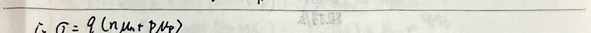
The P region (electrons) drifts toward the N region due to the concentration difference. The drift motion caused by the built-in electric field and the diffusion motion due to the concentration difference reach a dynamic equilibrium, resulting in zero net current and charge in the space charge region. The built-in electric field E is shown in the diagram. The diagram illustrates the low resistance region, high resistance region, low resistance region, potential barrier, and depletion layer. The depletion layer is also referred to as the depletion region. The contact potential difference is given by Vφ = kT/q * ln(NA/ND). The temperature voltage quantity is VT = kT/q ≈ 26mV (300K). Vφ has a negative temperature coefficient. The potential barrier width is W0 = Wn + Wp = √(2ε/ε) * Vφ * (NA + ND) / (NA * ND) = Wn / Wp = NA / ND. W0 has a negative temperature coefficient. From the above formulas, we have: $$ \begin{cases} Wn = NA \sqrt{\frac{2\epsilon}{\epsilon}} \cdot \frac{V\phi}{NA ND (NA + ND)} \\ Wp = ND \sqrt{\frac{2\epsilon}{\epsilon}} \cdot \frac{V\phi}{NA ND (NA + ND)} \end{cases} $$ The negative temperature coefficient is given by: $$ \begin{cases} Q- = -qSWpNA \\ Q+ = qSWnND = qSWpNA \end{cases} $$ PN+ junction: Wn << Wp (ND >> NA) PN- junction: Wn >> Wp (ND << NA)
**PN Junction Characteristics:**
1. **Forward Characteristics:** - **Positive Terminal +, Negative Terminal -**: - Due to the low resistance of the intrinsic region and the small resistance of the semiconductor, the external voltage is almost applied to the space charge region. The built-in electric field and the external electric field form a composite electric field E. The built-in electric field E decreases, resulting in a smaller Wn, Wp, and Q. The built-in electric field E decreases, resulting in a smaller Wn, Wp, and Q. The built-in electric field E decreases, resulting in a smaller Wn, Wp, and Q. The built-in electric field E decreases, resulting in a smaller Wn, Wp, and Q. The built-in electric field E decreases, resulting in a smaller Wn, Wp, and Q. The built-in electric field E decreases, resulting in a smaller Wn, Wp, and Q. The built-in electric field E decreases, resulting in a smaller Wn, Wp, and Q. The built-in electric field E decreases, resulting in a smaller Wn, Wp, and Q. The built-in electric field E decreases, resulting in a smaller Wn, Wp, and Q. The built-in electric field E decreases, resulting in a smaller Wn, Wp, and Q. The built-in electric field E decreases, resulting in a smaller Wn, Wp, and Q. The built-in electric field E decreases, resulting in a smaller Wn, Wp, and Q. The built-in electric field E decreases, resulting in a smaller Wn, Wp, and Q. The built-in electric field E decreases, resulting in a smaller Wn, Wp, and Q. The built-in electric field E decreases, resulting in a smaller Wn, Wp, and Q. The built-in electric field E decreases, resulting in a smaller Wn, Wp, and Q. The built-in electric field E decreases, resulting in a smaller Wn, Wp, and Q. The built-in electric field E decreases, resulting in a smaller Wn, Wp, and Q. The built-in electric field E decreases, resulting in a smaller Wn, Wp, and Q. The built-in electric field E decreases, resulting in a smaller Wn, Wp, and Q. The built-in electric field E decreases, resulting in a smaller Wn, Wp, and Q. The built-in electric field E decreases, resulting in a smaller Wn, Wp, and Q. The built-in electric field E decreases, resulting in a smaller Wn, Wp, and Q. The built-in electric field E decreases, resulting in a smaller Wn, Wp, and Q. The built-in electric field E decreases, resulting in a smaller Wn, Wp, and Q. The built-in electric field E decreases, resulting in a smaller Wn, Wp, and Q. The built-in electric field E decreases, resulting in a smaller Wn, Wp, and Q. The built-in electric field E decreases, resulting in a smaller Wn, Wp, and Q. The built-in electric field E decreases, resulting in a smaller Wn, Wp, and Q. The built-in electric field E decreases, resulting in a smaller Wn, Wp, and Q. The built-in electric field E decreases, resulting in a smaller Wn, Wp, and Q. The built-in electric field E decreases, resulting in a smaller Wn, Wp, and Q. The built-in electric field E decreases, resulting in a smaller Wn, Wp, and Q. The built-in electric field E decreases, resulting in a smaller Wn, Wp, and Q. The built-in electric field E decreases, resulting in a smaller Wn, Wp, and Q. The built-in electric field E decreases, resulting in a smaller Wn, Wp, and Q. The built-in electric field E decreases, resulting in a smaller Wn, Wp, and Q. The built-in electric field E decreases, resulting in a smaller Wn, Wp, and Q. The built-in electric field E decreases, resulting in a smaller Wn, Wp, and Q. The built-in electric field E decreases, resulting in a smaller Wn, Wp, and Q. The built-in electric field E decreases, resulting in a smaller Wn, Wp, and Q. The built-in electric field E decreases, resulting in a smaller Wn, Wp, and Q. The built-in electric field E decreases, resulting in a smaller Wn, Wp, and Q. The built-in electric field E decreases, resulting in a smaller Wn, Wp, and Q. The built-in electric field E decreases, resulting in a smaller Wn, Wp, and Q. The built-in electric field E decreases, resulting in a smaller Wn, Wp, and Q. The built-in electric field E decreases, resulting in a smaller Wn, Wp, and Q. The built-in electric field E decreases, resulting in a smaller Wn, Wp, and Q. The built-in electric field E decreases, resulting in a smaller Wn, Wp, and Q. The built-in electric field E decreases, resulting in a smaller Wn, Wp, and Q. The built-in electric field E decreases, resulting in a smaller Wn, Wp, and Q. The built-in electric field E decreases, resulting in a smaller Wn, Wp, and Q. The built-in electric field E decreases, resulting in a smaller Wn, Wp, and Q. The built-in electric field E decreases, resulting in a smaller Wn, Wp, and Q. The built-in electric field E decreases, resulting in a smaller Wn, Wp, and Q. The built-in electric field E decreases, resulting in a smaller Wn, Wp, and Q. The built-in electric field E decreases, resulting in a smaller Wn, Wp, and Q. The built-in electric field E decreases, resulting in a smaller Wn, Wp, and Q. The built-in electric field E decreases, resulting in a smaller Wn, Wp, and Q. The built-in electric field E decreases, resulting in a smaller Wn, Wp, and Q. The built-in electric field E decreases, resulting in a smaller Wn, Wp, and Q. The built-in electric field E decreases, resulting in a smaller Wn, Wp, and Q. The built-in electric field E decreases, resulting in a smaller Wn, Wp, and Q. The built-in electric field E decreases, resulting in a smaller Wn, Wp, and Q. The built-in electric field E decreases, resulting in a smaller Wn, Wp, and Q. The built-in electric field E decreases, resulting in a smaller Wn, Wp, and Q. The built-in electric field E decreases, resulting in a smaller Wn, Wp, and Q. The built-in electric field E decreases, resulting in a smaller Wn, Wp, and Q

△ PN junction temperature characteristics: (I = I_s (e^(qV/kt) - 1))
$$V_T = \frac{kT}{q}$$
I_s: temperature increases -> minority carrier concentration increases -> I_s increases: every 10°C, I_s increases by 10%.
∴ PN junction voltage remains constant. When the temperature increases, the forward current increases. The I-V characteristic curve shifts to the right.
△ PN junction reverse breakdown characteristics.
Reverse breakdown voltage V(br) is a limiting condition for PN junction reverse operation. In the breakdown region, the reverse current changes greatly, but the voltage changes very little. This characteristic can be used to make a Zener diode.
1. Avalanche breakdown (<6V) (high impurity concentration, narrow depletion region).
Reverse bias voltage increases -> electrons and holes are ionized, covalent bonds are destroyed -> space charge region is formed
large number of electron-hole pairs -> reverse current increases -> field emission breakdown.
temperature increases -> electrons more easily break covalent bonds: W0 decreases -> V_br decreases.
2. Zener breakdown (>6V) (low impurity concentration, wide depletion region).
Reverse bias voltage increases -> electron kinetic energy increases -> more frequent collisions with neutral atoms
-> electrons are knocked out -> new electron-hole pairs are produced
temperature increases -> lattice thermal vibration increases -> carrier scattering effect increases
-> carrier mobility decreases -> V_br increases.
These two phenomena are reversible. Thermal breakdown will damage the PN junction, which is irreversible.
△ PN junction thermal response.
PN junction reverse voltage -> carrier scattering effect increases
-> carrier mobility decreases -> V_br increases.
The entire region outside the neutral region is in a non-equilibrium state.
The note discusses the capacitance effect in a PN junction. It covers two types of capacitance: the barrier capacitance and the diffusion capacitance.
1. **Barrier Capacitance:** - **Charge:** The charge in the barrier region. - **Voltage:** The voltage drop across the barrier region due to the electric field. - **Reverse Voltage:** When the reverse voltage increases, the barrier electric field increases, leading to a higher potential and charge. When the reverse voltage decreases, the barrier electric field decreases, leading to a lower potential and charge. - **Expressions:** - \( V_{\phi} = \frac{kT}{q} \ln \frac{N_A N_D}{n^2} \) - \( W_0 = W_n + W_p = \sqrt{\frac{2\varepsilon}{q}} V_{\phi} \cdot \frac{N_A + N_D}{N_A N_D} \) - \( Q = q S W_p N_A = q S W_n N_D \) - \( C_T = \frac{dQ}{dV} \) - For small currents, \( C_T = \frac{C_{To}}{(1 - \frac{V}{V_{\phi}})^n} = \frac{\varepsilon S}{W_0} \) - **Capacitance vs. Voltage Relationship:** \( C_T \propto V \). This relationship can be used to make a capacitive diode.
2. **Diffusion Capacitance:** - **Charge:** The charge in the diffusion region due to the non-equilibrium carriers. - **Voltage:** The external voltage. - **Expressions:** - \( n_p(x) = [n_p(-W_p) - n_p] e^{\frac{x + W_p}{2\mu}} + n_p \) - \( p_n(x) = [p_n(W_n) - p_n] e^{-\frac{x - W_n}{2\mu}} + p_n \) - **Capacitance Increase with Forward Bias:** When the forward voltage increases, the diffusion current increases, leading to a higher potential and charge in the diffusion region. - **Expressions:** - \( C_D = \frac{q S}{\Delta V} \approx \frac{\Delta Q_n}{\Delta V} + \frac{\Delta Q_p}{\Delta V} \)
The note also includes a diagram showing the change in charge distribution with voltage.
The capacitance \(C_0\) mainly depends on the forward current through the PN junction. Hence, \(C_0\) is proportional to the forward voltage. When reverse biased, \(C_0\) is negligible. Generally, \(C_0 > C_T\). \(C_T\) and \(C_0\) are in parallel, so the PN junction total capacitance \(C_j = C_T + C_0\). When forward biased, \(C_0 >> C_T\), so \(C_j \approx C_0\). When reverse biased, \(C_0 \rightarrow 0\), so \(C_j \approx C_T\).
4. Semiconductor Diode: PN junction + casing + electrode leads → semiconductor diode. (P region is positive, N region is negative).
Point contact type: low capacitance, rated current, reverse voltage small, high frequency, suitable for high-frequency circuits. Planar contact type: large area, can withstand larger currents, high capacitance, low frequency, suitable for rectification.
Silicon surface: with current density and surface area, the same as the current density and surface area of the diode.
△ Voltage-current characteristic: \(i_b = I_s (e^{\frac{V_b}{nV_T}} - 1)\)
△ Main parameters: maximum forward average current (maximum rectified current): \(I_F\) Maximum reverse working voltage: \(V_R\) Reverse current at breakdown: \(I_R\), the smaller the better. Maximum frequency: \(f_m\), above \(f_m\), the junction capacitance cannot be ignored. Static resistance: \(R_D = \frac{V_{DQ}}{I_{DQ}}\) Dynamic resistance: \(r_d = \frac{dV_D}{dI_D} = \frac{V_T}{I_s e^{\frac{V_D}{nV_T}}} \approx \frac{V_T}{I_{DQ}} \approx \frac{26(mV)}{I_{DQ}(mA)}\)
△ Diode model ① Simplified model \(i_b = I_s (e^{\frac{V_b}{nV_T}} - 1)\) \(I = I_s (e^{\frac{V_b}{nV_T}} - 1)\) \(V_D = I_s (e^{\frac{V_b}{nV_T}} - 1)\) \(V_D = I_s (e^{\frac{V_b}{nV_T}} - 1)\) \(V_D = I_s (e^{\frac{V_b}{nV_T}} - 1)\) \(V_D = I_s (e^{\frac{V_b}{nV_T}} - 1)\) \(V_D = I_s (e^{\frac{V_b}{nV_T}} - 1)\) \(V_D = I_s (e^{\frac{V_b}{nV_T}} - 1)\) \(V_D = I_s (e^{\frac{V_b}{nV_T}} - 1)\) \(V_D = I_s (e^{\frac{V_b}{nV_T}} - 1)\) \(V_D = I_s (e^{\frac{V_b}{nV_T}} - 1)\) \(V_D = I_s (e^{\frac{V_b}{nV_T}} - 1)\) \(V_D = I_s (e^{\frac{V_b}{nV_T}} - 1)\) \(V_D = I_s (e^{\frac{V_b}{nV_T}} - 1)\) \(V_D = I_s (e^{\frac{V_b}{nV_T}} - 1)\) \(V_D = I_s (e^{\frac{V_b}{nV_T}} - 1)\) \(V_D = I_s (e^{\frac{V_b}{nV_T}} - 1)\) \(V_D = I_s (e^{\frac{V_b}{nV_T}} - 1)\) \(V_D = I_s (e^{\frac{V_b}{nV_T}} - 1)\) \(V_D = I_s (e^{\frac{V_b}{nV_T}} - 1)\) \(V_D = I_s (e^{\frac{V_b}{nV_T}} - 1)\) \(V_D = I_s (e^{\frac{V_b}{nV_T}} - 1)\) \(V_D = I_s (e^{\frac{V_b}{nV_T}} - 1)\) \(V_D = I_s (e^{\frac{V_b}{nV_T}} - 1)\) \(V_D = I_s (e^{\frac{V_b}{nV_T}} - 1)\) \(V_D = I_s (e^{\frac{V_b}{nV_T}} - 1)\) \(V_D = I_s (e^{\frac{V_b}{nV_T}} - 1)\) \(V_D = I_s (e^{\frac{V_b}{nV_T}} - 1)\) \(V_D = I_s (e^{\frac{V_b}{nV_T}} - 1)\) \(V_D = I_s (e^{\frac{V_b}{nV_T}} - 1)\) \(V_D = I_s (e^{\frac{V_b}{nV_T}} - 1)\) \(V_D = I_s (e^{\frac{V_b}{nV_T}} - 1)\) \(V_D = I_s (e^{\frac{V_b}{nV_T}} - 1)\) \(V_D = I_s (e^{\frac{V_b}{nV_T}} - 1)\) \(V_D = I_s (e^{\frac{V_b}{nV_T}} - 1)\) \(V_D = I_s (e^{\frac{V_b}{nV_T}} - 1)\) \(V_D = I_s (e^{\frac{V_b}{nV_T}} - 1)\) \(V_D = I_s (e^{\frac{V_b}{nV_T}} - 1)\) \(V_D = I_s (e^{\frac{V_b}{nV_T}} - 1)\) \(V_D = I_s (e^{\frac{V_b}{nV_T}} - 1)\) \(V_D = I_s (e^{\frac{V_b}{nV_T}} - 1)\) \(V_D = I_s (e^{\frac{V_b}{nV_T}} - 1)\) \(V_D = I_s (e^{\frac{V_b}{nV_T}} - 1)\) \(V_D = I_s (e^{\frac{V_b}{nV_T}} - 1)\) \(V_D =
2) $$I = \frac{V - V_{D}}{R}$$
3) $$I = \frac{V - V_{D}}{R}$$
2. Small Signal Model: $$i_{D}$$ is the current through the diode, $$r_{s}$$ is the series resistance, $$r_{d}$$ is the dynamic resistance, and $$C_{j}$$ is the junction capacitance. The model only considers small signals. The conditions for the model are small signals. The formulas are: $$r_{s}, r_{d}, C_{j}$$ are all related to the DC operating point.
Delta Bipolar Transistor Applications: 1. Rectifier Circuit 2. Voltage Stabilization Circuit: $$I_{Z_{\min}} < I_{Z} < I_{Z_{\max}}$$, $$V_{D} = V_{Z}$$, $$r_{Z} = \frac{\Delta V_{Z}}{\Delta I_{Z}}$$, reverse breakdown 3. Clamping Circuit: - DC Analysis: $$I_{DQ} \approx \frac{V_{B} - V_{D}}{R + r_{D}}$$, $$r_{D} \approx \frac{V_{T}}{2 \beta_{Q}}$$, $$V_{DQ} = V_{TH}$$ - AC Analysis: When frequency is low, $$r_{D}$$ is not considered. The voltage across the diode is $$V_{D} = (r_{S} + r_{D}) i_{D}$$, $$i_{D} = I_{DQ} + i_{D}$$
4. Logic Gate Circuit: $$Y = A \cdot B$$ $$Y = A + B$$
Delta Bipolar Transistor Resistance Principle: $$U = U_{0} - I r$$, thus $$I = \frac{U_{0}}{r} - \frac{1}{r} U$$
r is the internal resistance of the diode (the larger the current, the greater the internal resistance), $$U_{0}$$ is the internal voltage of the diode, which does not change.
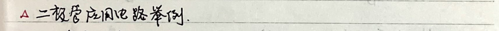
5. Bipolar Junction Transistor
Two PN junctions; electron and hole participate in conduction; has amplification effect
1. Transistor structure
NPN type PNP type
Collector - N P N - Emitter Base - Collector - P N P - Emitter Base - Emitter
2. Transistor working principle (example NPN)
Base region thin, doping concentration low Emission region doping concentration higher than B and C regions
Emission region doping concentration higher than B and C regions
1) Emitter region electron enters base region, forming I_en. Base region hole enters emitter region, forming I_ep. Since P_en << n_B0, n_en >> p_B0. Therefore, I_en >> I_ep. I_e = I_en + I_ep.
2) Due to the low doping concentration in the base region, electrons (I_en) in the diffusion process combine with holes in small numbers. Most reach the collector junction, forming the reverse electric field in the collector region.
3) Electron drift current Ic. And the minority carriers in the collector region and the base region drift in the reverse direction under the electric field of the collector junction, forming a reverse drift current (reverse saturation current) Icbo. $$I_B = I_{Bp} + I_{Ep} - I_{CBO}$$ $$I_C = I_{Cn} + I_{CBO}$$ $$\therefore I_E = I_C + I_B$$
3) Transistor current distribution relationship The current distribution within the transistor is determined by the biasing of the emitter junction and the collector junction, not by the connection state (collector-base CB, collector-emitter CE, and base-emitter CC) of the transistor.
1) CB 2) CE 3) CC
$$\alpha = \frac{I_{Cn}}{I_E}$$ $$I_C = \alpha (I_C + I_B) + I_{CBO}$$ $$I_E = (\beta + 1) I_B + (\beta + 1) I_{CBO}$$ $$\beta = \frac{\alpha}{1 - \alpha}$$ $$\therefore I_C = \beta I_B + (\beta + 1) I_{CBO} = \beta I_B + I_{CBO}$$ $$\therefore I_C = (\beta + 1) I_{CBO}$$ $$\therefore I_C = \alpha I_E + I_{CBO}$$ $$\therefore I_C = \alpha I_E + I_{CBO}$$
If I_{CBO} is negligible, then I_C = \alpha I_E.
### Four Modes of Transistor Operation
1. **Amplification Mode**: The base is forward-biased, and the collector is reverse-biased. The base current controls the collector current, which is almost independent of the base voltage. 2. **Saturation Mode**: The base and collector are both forward-biased. The collector current is very high, and the collector-emitter voltage is very low, almost zero. 3. **Cut-off Mode**: The base and collector are both reverse-biased. There is a very small leakage current, almost zero. 4. **Reverse Mode**: The base is reverse-biased, and the collector is forward-biased. The collector and base are swapped, and due to the different doping levels, the current is different.
### Ebers-Moll Model Analysis
1. **Neglecting the Transistor Body Resistance and Lead Resistance**: Assume the external voltage \( V_{EE} \) and \( V_{CC} \) are applied separately to the base and collector. 2. **Small Current Injection**: Neglect the recombination of carriers within the base region. 3. **Neglecting Base Width Modulation Effect**: Assume the base width does not change with base voltage. 4. **Neglecting Reverse Breakdown**:
### Distribution of Minority Carriers in Emitter and Collector Regions
\[ P_{E}(x) - P_{E,0} = [P_{E}(-W_{E}) - P_{E,0}] \cdot e^{\frac{2x + W_{E}}{L_{E}}} \]
\[ P_{C}(x) - P_{C,0} = [P_{C}(W_{C}) - P_{C,0}] \cdot e^{-\frac{x - W_{C}}{L_{C}}} \]
### Distribution of Minority Carriers in Base Region
\[ n_{B}(x) - n_{B,0} = \frac{n_{B}(0)}{sh \frac{W_{B}}{2L_{B}}} \left[ sh \frac{W_{B} - x}{2L_{B}} (e^{\frac{2x}{L_{B}}} - 1) - sh \frac{x}{2L_{B}} (e^{\frac{2x}{L_{B}}} - 1) \right] \]

$$I_{E} = I_{En} + I_{Ep}$$ $$I_{En} = qD_{n}S \frac{dN_{n}(\infty)}{dx}$$ $$I_{Ep} = -qD_{p}S \frac{dP_{p}(\infty)}{dx}$$ $$I_{C} = -I_{En} - I_{Ep}$$ $$I_{En} = qD_{n}S \frac{dN_{n}(x)}{dx}$$ $$I_{Ep} = -qD_{p}S \frac{dP_{p}(\infty)}{dx}$$
Solve: $$I_{E} = I_{Es}(e^{\frac{V_{B}}{V_{T}}}-1) - \alpha_{F}I_{Cs}(e^{\frac{V_{B}}{V_{T}}}-1)$$ $$I_{C} = \alpha_{F}I_{Es}(e^{\frac{V_{B}}{V_{T}}}-1) - I_{Cs}(e^{\frac{V_{B}}{V_{T}}}-1)$$
Where: $I_{Es}$ is the reverse saturation current of the emitter junction ($V_{B}=0$) in the reverse bias state. $I_{Cs}$ is the reverse saturation current of the collector junction ($V_{B}=0$) in the reverse bias state. $$\alpha_{F} = \frac{I_{E}}{I_{C}} \mid V_{B}=0$$ is the forward short circuit current gain. $$\alpha_{R} = \frac{I_{C}}{I_{E}} \mid V_{B}=0$$ is the reverse short circuit current gain. Solve equations ① and ② to find $\alpha_{F}I_{Es} = \alpha_{R}I_{Cs} = I_{S}$, which is the saturation current of the transistor. The effect of $V_{B}$ on $I_{Es}$, $I_{Cs}$, $\alpha_{F}$, $\alpha_{R}$ is influenced by the structure of the transistor.
1) Current Injection Form Equivalent Circuit: Let $I_{F} = I_{Es}(e^{\frac{V_{B}}{V_{T}}}-1)$ $I_{R} = I_{Cs}(e^{\frac{V_{B}}{V_{T}}}-1)$ Then: $$I_{E} = I_{F} - \alpha_{R}I_{R}$$ $$I_{C} = \alpha_{F}I_{F} - I_{R}$$
2) Current Transmission Form Equivalent Circuit: From ① - $\alpha_{R}$ × ②: $$I_{E} - \alpha_{R}I_{C} = (1 - \alpha_{R}\alpha_{F})I_{Es}(e^{\frac{V_{B}}{V_{T}}}-1)$$ That is: $$I_{E} = \alpha_{F}I_{C} + (1 - \alpha_{R}\alpha_{F})I_{Es}(e^{\frac{V_{B}}{V_{T}}}-1)$$ Note: $I_{Es} = (1 - \alpha_{F}\alpha_{R})I_{Es}$ is the reverse saturation current of the emitter junction when the base is open circuit ($I_{C}=0$) in the reverse bias state.
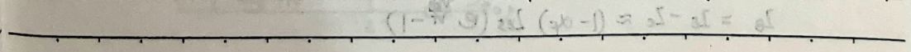
2) From (1) we get: $$ I_C - \alpha_F I_E = (\alpha_F \alpha_F - 1) I_{cs} (e^{\frac{V_{BE}}{V_T}} - 1) $$ which implies: $$ I_C = \alpha_F I_E - (1 - \alpha_F \alpha_F) I_{cs} (e^{\frac{V_{BE}}{V_T}} - 1) $$ And $I_{co}$ is $(1 - \alpha_F \alpha_F) I_{cs}$ as the base-emitter junction is open circuit ($I_B = 0$) when the collector is in reverse saturation current.
3) Mixed hybrid equivalent circuit. Rewrite (1) and (2) as: $$ I_E = I_{Es} (e^{\frac{V_{BE}}{V_T}} - 1) - \alpha_R I_{cs} (e^{\frac{V_{BE}}{V_T}} - 1) = I_{Es} (e^{\frac{V_{BE}}{V_T}} - 1) - I_{s} (e^{\frac{V_{BE}}{V_T}} - 1) $$ $$ I_C = \alpha_F I_{Es} (e^{\frac{V_{BE}}{V_T}} - 1) - I_{cs} (e^{\frac{V_{BE}}{V_T}} - 1) = I_{s} (e^{\frac{V_{BE}}{V_T}} - 1) - I_{cs} (e^{\frac{V_{BE}}{V_T}} - 1) $$ Let $I_{cc} = I_{s} (e^{\frac{V_{BE}}{V_T}} - 1)$, $I_{EE} = I_{s} (e^{\frac{V_{BE}}{V_T}} - 1)$ $$ \beta_F = \frac{\alpha_F}{1 - \alpha_F} \quad \beta_R = \frac{\alpha_R}{1 - \alpha_R} $$ $$ I_{OT} = I_{cc} - I_{EE} $$ Then: $$ I_E = \frac{I_{s}}{\alpha_F} (e^{\frac{V_{BE}}{V_T}} - 1) - I_{s} (e^{\frac{V_{BE}}{V_T}} - 1) = \frac{I_{cc}}{\alpha_F} - I_{EE} = \frac{I_{cc}}{\alpha_F} - I_{cc} + I_{cc} - I_{EE} = \frac{I_{cc}}{\beta_F} + I_{cc} $$ $$ I_C = I_{s} (e^{\frac{V_{BE}}{V_T}} - 1) - \frac{I_{cs}}{\alpha_R} (e^{\frac{V_{BE}}{V_T}} - 1) = I_{cc} - \frac{I_{EE}}{\alpha_R} = I_{cc} - I_{EE} + I_{EE} - \frac{I_{EE}}{\alpha_R} = -\frac{I_{EE}}{\beta_R} + I_{cc} $$ Thus, the equivalent circuit includes three elements and three parameters $I_s$, $\beta_F$, $\beta_R$, which is the most common model.
1) According to the Ebers-Moll model, re-analyze the four working modes of the transistor. 1) Amplification state (forward bias: $V_{BE} > 0$; reverse bias: $V_{BC} < 0$). Since $|V_{BC}| >> V_T$, $I_{E} \approx \alpha_F I_{E} + (1 - \alpha_F \alpha_F) I_{cs} \approx \alpha_F I_{E}$. $I_{B} = I_{E} - I_{C} \approx (1 - \alpha_F) I_{cs} (e^{\frac{V_{BE}}{V_T}} - 1)$
The note discusses the behavior of a transistor in different operating states. It starts by explaining the relationship between collector current (Ic), base current (Ib), and emitter current (Ie) in the active region, where Ic = αIb + Icbo. It then delves into the cutoff state, where the base-emitter voltage (VBE) and base-collector voltage (VBC) are negative. In this state, the currents are described as Ie ≈ -Ies + αpIcs and Ic ≈ -αcIes + Ics. The base current IB is given by IB = Ie - Ic. The note also discusses the saturation state, where VBE and VBC are positive, leading to a significant increase in Ie and Ic. Finally, it covers the reverse state, where VBE is negative and VBC is positive, with a weak control of Ic over Ib due to the small αc. The note concludes with a discussion of the transistor's dynamic model and its non-linear nature.
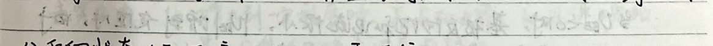
5. Transistor Characteristics Curves
Example: CE: $$ i_B = f(V_{BE}) \mid V_{CE} = const. $$
1) Input Characteristics Curve: $$ V_{CE} = 0 \text{ corresponds to the lowest point on the left.} $$
2) Output Characteristics Curve: $$ i_C = f(V_{CE}) \mid V_{BE} = const. $$
$$I_{C} = I_{E} - I_{B} + I_{B0}$$
$$\because V_{CE} \uparrow, \text{集电结空间电荷区加宽, } W_{B} \downarrow$$
$$\therefore I_{B} \downarrow$$
$$\therefore I_{C} \uparrow$$
$$\text{可近似将放大区各条输出特性曲线左延与 } I_{C} \text{ 轴交于同一点 } (-V_{A})$$
$$\text{此电压称为 Early 电压.}$$
$$\therefore W_{B} \text{ 越小, } W_{B} \text{ 对 } I_{C} \text{ 的影响越大}$$
$$\therefore \text{相同 } I_{CE} \text{ 下 } I_{C}-I_{CE} \text{ 曲线在放大区的斜率越大}$$
$$\therefore V_{A} \text{ 越小.}$$
$$\therefore \text{放大状态下 } I_{C} \approx \alpha_{F} I_{ES} (e^{\frac{V_{CE}}{V_{A}}} - 1) + (1 - \alpha_{F} \alpha_{R}) I_{CS}$$
$$I_{C} \approx \alpha_{F} \cdot I_{ES} \left(e^{\frac{V_{CE}}{V_{A}}} - 1\right) \left(1 + \frac{V_{CE}}{V_{A}}\right) = I_{S} \left(e^{\frac{V_{CE}}{V_{A}}} - 1\right) \left(1 + \frac{V_{CE}}{V_{A}}\right)$$
$$\therefore \text{放大区内晶体管输出电阻}$$
$$r_{CE} = \frac{V_{A} + V_{CE}}{I_{C}}$$
$$\text{截止区内, 当 } V_{BE} = 0 \text{ 时, } I_{C} = I_{CS} \approx 0. (\text{集电结的反向饱和电流})$$
$$\text{饱和区内, } V_{CE} \text{ 很小, } W_{B} \text{ 很宽, Collector 收集能力弱,}$$
$$\therefore I_{C} \text{ 随 } V_{CE} \text{ 的增加而增加.}$$
$$\text{击穿区内, } I_{B} \text{ 增大到一定程度时, } J_{B} \text{ 反向击穿. } I_{C} \text{ 迅速增加.}$$
$$\therefore \text{基区与集电区掺杂浓度均较低.}$$
$$\therefore \text{发生雪崩击穿, 击穿电压随 } V_{BE} \text{ 增加而减小.}$$
$$(\text{因为 } V_{BE} \uparrow, I_{C} \uparrow, \text{ 通过 } J_{B} \text{ 的载流子 } \uparrow, \text{ 碰撞机会 } \uparrow, \text{ 产生雪崩击穿所需电压减小.})$$
$$\therefore V_{BE} = 0 \text{ 时, 击穿电压最大. (Breakdown, 是指短路时集电极与发射极间的击穿电压.}$$
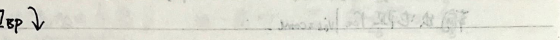
3) Output Characteristics Curve $$i_C = f(V_{CE}) \mid_{i_B = const}$$
- With $i_B$ as the variable, the output resistance $r_{ce} \mid_{i_B = const}$ is less than when $V_{CE}$ is the variable. $$i_C = \beta i_B + (\beta + 1) I_{CEO}$$
- When $i_E = 0$, $i_C = I_{CEO} = -i_B$. This is the cutoff region. In engineering, it is often approximated as $i_B = 0$. - Below this region is the cutoff region. At this point, $I_{CEO} (\beta + \beta) = I_C$ (穿透电流). - In the saturation region, $i_C$ remains constant. As $V_{CE}$ decreases, $i_C$ drops rapidly. At this point, $i_C < \beta i_B$. - $i_B = 0$ corresponds to the cut-off voltage $V_{CE(CEO)}$, which is the base open circuit base and emitter breakdown voltage.
6) Temperature Impact on Transistor Characteristics For PN junctions, $I = I_s (e^{qV_{BE}} - 1)$. As temperature increases, $V_{BE}$ increases ($V_{BE} = \frac{kT}{q}$) and $I_s$ also increases. $I_s \approx 2.2^{0.5}$. Therefore, with temperature increase, the transistor input characteristic curve shifts left. Experimental results show that if $I_B$ remains constant, $V_{BE}$ decreases by 2-2.5 mV when the temperature increases by 1°C. $$\Delta V_{BE} \mid_{I_B = const} = -(2-2.5) mV$$
Due to: 1. When temperature increases, the reverse current $I_{CEO}$ increases. 2. When temperature increases, the current amplification factor $\beta$ increases. The base region carrier recombination decreases. $\alpha = \alpha = \frac{I_{CE}}{I_B}$ increases. Therefore, $\beta = \frac{1}{1 - \alpha}$ increases. In engineering, $\frac{1}{\beta} \frac{dB}{dT} = (0.5\% - 1\%) / °C$ $$I_C = \beta I_B + (\beta + 1) I_{CEO}$$ Overall, when temperature increases, $I_{CEO}$, $\beta$ increase, and $I_C - V_{CE}$ input increases. $I_B = I_{BP} + I_{EP} - I_{CE}$ The characteristic curve shifts left. When $i_B$ is the variable, they all increase the base and emitter current.
7. Bipolar Transistor Main Parameters
1. DC Parameters
△ Common Emitter DC Current Gain β: $$\beta = \frac{I_C - I_{CEO}}{I_E} \approx \frac{I_C}{I_B}$$
△ Common Base DC Current Gain α: $$\alpha = \frac{I_C - I_{CEO}}{I_E} \approx \frac{I_C}{I_E}$$
△ Emitter Open Circuit Collector Reverse Saturation Current IcBo
Test Circuit: $$V_{cc}$$ $$R_c$$ $$I_{CEO}$$
△ Collector Open Circuit Emitter Reverse Saturation Current IcBo
Test Circuit: $$V_{cc}$$ $$R_c$$ $$I_{CEO}$$
△ Base Open Circuit Collector and Emitter Leakage Current IcBo
Test Circuit: $$V_{cc}$$ $$R_c$$ $$I_{CEO}$$
$$I_{CEO} = (\beta + 1) I_{CEO}$$
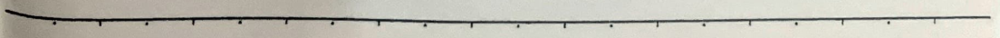
2) AC Parameters: - Transistor's AC current gain β = ΔiC / ΔiB |VCE = const. - Transistor's AC current gain α = ΔiB / ΔiC |VCE = const. - Characteristic frequency fT. Due to the existence of junction capacitors, the transistor's frequency is a function of f. When f is sufficiently large, there is phase shift between Ic and Ib. β = 2c / Ib. The frequency at which β drops to 1 is the characteristic frequency fT.
3) Limit Parameters: - Collector maximum allowable current Icm. - In the collector region, the recombination of carriers in the base region causes the base current to increase, thereby decreasing the collector current. When the base current is too large, the injection of carriers into the base region is too high, and the base region becomes heavily doped. To maintain the base region's neutrality, the external circuit must inject a large number of holes, which will diffuse into the base region, causing the collector current to decrease. When the collector current drops to its maximum value 2/3 of Icm, the corresponding collector current is Icm. - Collector reverse breakdown voltage VBR (CB).
$$V_{CE}$$ $$V_{EE}$$ $$V_{BR}$$
△ Base open circuit collector and emitter reverse breakdown voltage V(BR)CEO
$$V_{(BR)CEO} > V_{(BR)CEO} > V_{(BR)BEO}$$
△ Collector maximum allowable power dissipation Pcm. $$Pc \propto Ic \cdot Ic$$ In amplification state, Vce is mainly dropped across the collector. The collector mainly dissipates power. $$\therefore CE mode, ensure Ic < Icm, Vce < V(BR)CEO, Pc < Pcm$$
$$V_{CE}$$
③ Transistor application. When operating in the active region, it has a forward current control effect, equivalent to a controlled current source. When operating in the saturation region and cutoff region, it has a switching characteristic, equivalent to a controlled switch.
1) Transistor amplification circuit. $$V_{B}$$ $$V_{B} = V_{CE} - R_{C} I_{C} > V_{BE}$$ $$V_{B} = V_{CE} - R_{C} I_{C} > V_{BE}$$ $$V_{B} = V_{CE} - R_{C} I_{C} > V_{BE}$$ $$V_{B} = V_{CE} - R_{C} I_{C} > V_{BE}$$ $$V_{B} = V_{CE} - R_{C} I_{C} > V_{BE}$$ $$V_{B} = V_{CE} - R_{C} I_{C} > V_{BE}$$ $$V_{B} = V_{CE} - R_{C} I_{C} > V_{BE}$$ $$V_{B} = V_{CE} - R_{C} I_{C} > V_{BE}$$ $$V_{B} = V_{CE} - R_{C} I_{C} > V_{BE}$$ $$V_{B} = V_{CE} - R_{C} I_{C} > V_{BE}$$ $$V_{B} = V_{CE} - R_{C} I_{C} > V_{BE}$$ $$V_{B} = V_{CE} - R_{C} I_{C} > V_{BE}$$ $$V_{B} = V_{CE} - R_{C} I_{C} > V_{BE}$$ $$V_{B} = V_{CE} - R_{C} I_{C} > V_{BE}$$ $$V_{B} = V_{CE} - R_{C} I_{C} > V_{BE}$$ $$V_{B} = V_{CE} - R_{C} I_{C} > V_{BE}$$ $$V_{B} = V_{CE} - R_{C} I_{C} > V_{BE}$$ $$V_{B} = V_{CE} - R_{C} I_{C} > V_{BE}$$ $$V_{B} = V_{CE} - R_{C} I_{C} > V_{BE}$$ $$V_{B} = V_{CE} - R_{C} I_{C} > V_{BE}$$ $$V_{B} = V_{CE} - R_{C} I_{C} > V_{BE}$$ $$V_{B} = V_{CE} - R_{C} I_{C} > V_{BE}$$ $$V_{B} = V_{CE} - R_{C} I_{C} > V_{BE}$$ $$V_{B} = V_{CE} - R_{C} I_{C} > V_{BE}$$ $$V_{B} = V_{CE} - R_{C} I_{C} > V_{BE}$$ $$V_{B} = V_{CE} - R_{C} I_{C} > V_{BE}$$ $$V_{B} = V_{CE} - R_{C} I_{C} > V_{BE}$$ $$V_{B} = V_{CE} - R_{C} I_{C} > V_{BE}$$ $$V_{B} = V_{CE} - R_{C} I_{C} > V_{BE}$$ $$V_{B} = V_{CE} - R_{C} I_{C} > V_{BE}$$ $$V_{B} = V_{CE} - R_{C} I_{C} > V_{BE}$$ $$V_{B} = V_{CE} - R_{C} I_{C} > V_{BE}$$ $$V_{B} = V_{CE} - R_{C} I_{C} > V_{BE}$$ $$V_{B} = V_{CE} - R_{C} I_{C} > V_{BE}$$ $$V_{B} = V_{CE} - R_{C} I_{C} > V_{BE}$$ $$V_{B} = V_{CE} - R_{C} I_{C} > V_{BE}$$ $$V_{B} = V_{CE} - R_{C} I_{C} > V_{BE}$$ $$V_{B} = V_{CE} - R_{C} I_{C} > V_{BE}$$ $$V_{B} = V_{CE} - R_{C} I_{C} > V_{BE}$$ $$V_{B} = V_{CE} - R_{C} I_{C} > V_{BE}$$ $$V_{B} = V_{CE} - R_{C} I_{C} > V_{BE}$$ $$V_{B} = V_{CE} - R_{C} I_{C} > V_{BE}$$ $$V_{B} = V_{CE} - R_{C} I_{C} > V_{BE}$$ $$V_{B} = V_{CE} - R_{C} I_{C} > V_{BE}$$ $$V_{B} = V_{CE} - R_{C} I_{C} > V_{BE}$$ $$V_{B} = V_{CE} - R_{C} I_{C} > V_{BE}$$ $$V_{B} = V_{CE} - R_{C} I_{C} > V_{BE}$$ $$V_{B} = V_{CE} - R_{C} I_{C} > V_{BE}$$ $$V_{B} = V_{CE} - R_{C} I_{C} > V_{BE}$$ $$V_{B} = V_{CE} - R_{C} I_{C} > V_{BE}$$ $$V_{B} = V_{CE} -


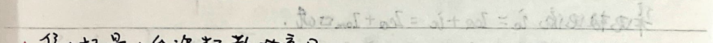
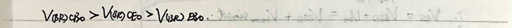
The note discusses the operation of a transistor in a circuit, focusing on the base-emitter voltage (Vbe), base-collector voltage (Vbc), and collector-emitter voltage (Vce). It explains the total input voltage (V1) as the sum of the base-emitter voltage and the base voltage (Vbe = Vbeq + Vbe). The base-emitter voltage is described as equivalent to a small resistance (rbe) in series with Rs. The collector current (ic) is expressed as the sum of the collector current (ic) and the base current (ib) in quadrature with the base current. The collector voltage (Vc) is derived as Vcc - Rc * ic. The output voltage (Vo) is given as Vcc - Rc * ic. The note also discusses the transistor switching circuit, where the collector current (ic) is zero when the input voltage (V1) is less than the threshold voltage (Vth), and the collector current is approximately zero. When the input voltage is greater than the threshold voltage, the transistor is in saturation, and the collector current is approximately equal to the base current multiplied by the current gain (β). The collector voltage is then approximately equal to the base-emitter voltage. The note concludes with a summary of the transistor's operating states: cut-off when V1 < Vth, and saturation when V1 > Vth.
Bipolar Junction Transistor Quantitative Solution
The Definitions... N_E = N_BE, N_B = N_AB, N_C = N_pc D_E = D_p, D_B = -D_N, D_C = D_p L_E = L_p, L_B = L_N, L_C = L_p, T_E = T_p, T_B = T_n, T_C = T_p p_Eo = p_no = n^2/NE, n_Bo = n_bo = n^2/N_B, p_Co = p_no = n^2/N_C
Emitter Region: O = D_E d^2Δp_E/dx_1^2 - Δp_E/T_E | Δp_E(x_1→∞) = 0, Δp_E(x_1=0) = p_Eo(e^(V_BE/T_E) - 1)
Base Region: O = D_B d^2Δn_B/dx_2^2 - Δn_B/T_B | Δn_B(0) = n_Bo (e^(V_BE/T_B) - 1), Δn_B(w) = n_Bo (e^(V_BE/T_B) - 1)
Collector Region: O = D_C d^2Δp_C/dx_3^2 - Δp_C/T_C | Δp_C(x_3→∞) = 0, Δp_C(x_3=0) = p_Co (e^(V_CE/T_C) - 1)
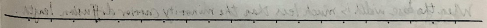

The problem solution in the emitter and collector quasi-neutral region
$$\Delta P_{E}(x_{1}) = P_{E0}(e^{\frac{V_{BE}}{V_{T}}}-1)e^{-\frac{2x_{1}}{L_{E}}} \quad \therefore I_{Ep} = -qSD_{E}\left.\frac{d\Delta P_{E}}{dx_{1}}\right|_{x_{1}=0}$$
$$= qS\frac{D_{E}}{L_{E}}P_{E0}(e^{\frac{V_{BE}}{V_{T}}}-1)$$
$$\Delta P_{C}(x_{3}) = P_{C0}(e^{\frac{V_{BC}}{V_{T}}}-1)e^{-\frac{2x_{3}}{L_{C}}} \quad \therefore I_{Cp} = qSD_{C}\left.\frac{d\Delta P_{C}}{dx_{3}}\right|_{x_{3}=0}$$
$$= -qS\frac{D_{C}}{L_{C}}P_{C0}(e^{\frac{V_{BC}}{V_{T}}}-1)$$
The problem solution in the base quasi-neutral region
$$\Delta n_{B}(x) = A_{1}e^{-\frac{x}{L_{B}}} + A_{2}e^{\frac{x}{L_{B}}}$$
$$\therefore \Delta n_{B}(0) = n_{B0}(e^{\frac{V_{BC}}{V_{T}}}-1) = A_{1} + A_{2}$$
$$\therefore \Delta n_{B}(w) = n_{B0}(e^{\frac{V_{BC}}{V_{T}}}-1) = A_{1}e^{-\frac{w}{L_{B}}} + A_{2}e^{\frac{w}{L_{B}}}$$
$$\therefore \Delta n_{B}(x) = \Delta n_{B}(0)\frac{sh\left(\frac{(w-x)}{L_{B}}\right)}{sh\left(\frac{w}{L_{B}}\right)} + \Delta n_{B}(w)\frac{sh\left(\frac{x}{L_{B}}\right)}{sh\left(\frac{w}{L_{B}}\right)}$$
$$\therefore I_{En} = -qSD_{B}\left.\frac{d\Delta n_{B}}{dx_{1}}\right|_{x_{1}=0} = qS\frac{D_{B}}{L_{B}}n_{B0}\left[\frac{ch\left(\frac{w}{L_{B}}\right)}{sh\left(\frac{w}{L_{B}}\right)}(e^{\frac{V_{BC}}{V_{T}}}-1) - \frac{1}{sh\left(\frac{w}{L_{B}}\right)}(e^{\frac{V_{BC}}{V_{T}}}-1)\right]$$
$$I_{Cn} = -qSD_{B}\left.\frac{d\Delta n_{B}}{dx_{1}}\right|_{x_{1}=w} = qS\frac{D_{B}}{L_{B}}n_{B0}\left[\frac{1}{sh\left(\frac{w}{L_{B}}\right)}(e^{\frac{V_{BC}}{V_{T}}}-1) - \frac{ch\left(\frac{w}{L_{B}}\right)}{sh\left(\frac{w}{L_{B}}\right)}(e^{\frac{V_{BC}}{V_{T}}}-1)\right]$$
$$\therefore I_{E} = I_{Ep} + I_{En} = qS\left[\left(\frac{D_{E}}{L_{E}}P_{E0} + \frac{D_{B}}{L_{B}}n_{B0}\frac{ch\left(\frac{w}{L_{B}}\right)}{sh\left(\frac{w}{L_{B}}\right)}\right)(e^{\frac{V_{BE}}{V_{T}}}-1) - \left(\frac{D_{B}}{L_{B}}n_{B0}\frac{1}{sh\left(\frac{w}{L_{B}}\right)}\right)(e^{\frac{V_{BC}}{V_{T}}}-1)\right]$$
$$I_{C} = I_{Cp} + I_{Cn} = qS\left[\left(\frac{D_{B}}{L_{B}}n_{B0}\frac{1}{sh\left(\frac{w}{L_{B}}\right)}\right)(e^{\frac{V_{BC}}{V_{T}}}-1) - \left(\frac{D_{C}}{L_{C}}P_{C0} + \frac{D_{B}}{L_{B}}n_{B0}\frac{ch\left(\frac{w}{L_{B}}\right)}{sh\left(\frac{w}{L_{B}}\right)}\right)(e^{\frac{V_{BC}}{V_{T}}}-1)\right]$$
$$\therefore \alpha_{dc} = \frac{1}{ch\left(\frac{w}{L_{B}}\right) + \left(\frac{D_{E}}{D_{B}}\frac{L_{B}}{L_{E}}\frac{N_{B}}{N_{E}}\right)sh\left(\frac{w}{L_{B}}\right)}$$
$$\beta_{dc} = \frac{\alpha_{dc}}{1-\alpha_{dc}} = \frac{1}{ch\left(\frac{w}{L_{B}}\right) + \left(\frac{D_{E}}{D_{B}}\frac{L_{B}}{L_{E}}\frac{N_{B}}{N_{E}}\right)sh\left(\frac{w}{L_{B}}\right) - 1}$$
When the base width is much less than the minority carrier diffusion length.

ΔnB(x) ≈ ΔnB(0) + [ΔnB(W) - ΔnB(0)]^2/W
αdc ≈ 1 + DB/NB * W/LE + 1/2(W/LE)^2 ≈ 1 + DB * WN/BL * NE (LB >> W)
Pdc ≈ DB * NE * W/LE + 1/2(W/LE)^2 ≈ DB * LE * NE most of the minority carriers make it across the base.
Mode | Emitter-Base | Collector-Base | VBE | IB | VCE (VCE = VBE + VCE) | IC | IE
Active | Forward | Reverse | ~0.6V | >0 | >VBE | =IBβ | =IE/α
Saturated | Forward | Forward | >0.7V | >IB/β | △共射极输入特性: (VCE = const)
IB = IC - IC = qS * DE/LE * Pco (e^(VBE/VT) - 1) + qS * DC/LE * Pco (e^(VBE/VT) - 1)
= qS [DE/LE * Pco (e^(VBE/VT) - 1) + DC/LE * Pco (e^(VBE/VT) - 1)] △共射极输出特性: (VCE = const)
IC = qS [(DB/LE * nB0 * sh(W/LE)) (e^(VBE/VT) - 1) - (DB/LE * Pco + DB/LE * nB0 * sh(W/LE)) (e^(VBE/VT) - 1)]
≈ qS [DB/LE * nB0 * sh(W/LE) (e^(VBE/VT) - 1) (1 + VCE/VT)] △共射极输出特性: (VCE = const)
结合上两式 (消去VBE)
e^(VBE) = [qS * DE/LE * Pco + qS * DC/LE * Pco / e^(VBE)]^(-1) (IB + qS * DE/LE * Pco + qS * DC/LE * Pco)
= qS (DB/LE * nB0 * sh(W/LE)) (e^(VBE) - 1) (IB + qS * DE/LE * Pco + qS * DC/LE * Pco / e^(VBE))
= qS (DB/LE * nB0 * sh(W/LE)) (e^(VBE) - 1) (IB + qS * DE/LE * Pco + qS * DC/LE * Pco / e^(VBE) + qS * DC/LE * Pco)
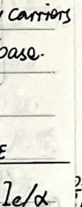
6. Field Effect Transistor
IGFET (Insulated Gate Field Effect Transistor) - N-channel Enhancement Type - N-channel Depletion Type - P-channel Enhancement Type - P-channel Depletion Type
JFET (Junction Field Effect Transistor) - N-channel - P-channel
MOSFET (Metal Oxide Semiconductor Field Effect Transistor) ∈ IGFET
(Voltage applied to the gate) - Gate (G) - Drain (D) and Source (S) terminals
When Vgs = 0, D and S regions are in the depletion layer (space charge layer) without a conductive channel.
When Vgs > 0, in the SiO2 insulating layer, a uniform electric field is generated from the gate to the substrate, attracting electrons (minority carriers) from the P-type substrate to the substrate surface, forming a very thin depletion layer.
When Vgs > Vgs(th), the surface layer of free electrons is greater than the space charge layer, the surface layer of P-type turns N-type, becoming a reverse layer, connecting D and S two N+ regions. At this time, if Vgs > 0 (positive voltage), then a drain-to-source current is generated, the transistor is turned on.
When Vgs > Vgs(th), a conductive channel is formed. At this time, if Vgs = 0 (Vgs = Vgs), the electric field in the SiO2 insulating layer is uniform, the conductive channel is expanded.
When Vgs > 0, a drain current ID is generated, and a reverse electric field is generated from S to D. The electric field is not uniform, the conductive channel is compressed.
The text and formulas in the image are as follows:
---
When Vds = Vgs - Vgs(0), i.e., Vds = Vgs(0), the D terminal's channel just disappears, forming a pinch-off.
When Vds > Vgs - Vgs(0), i.e., Vds < Vgs(0), the pinch-off point extends towards the S terminal, forming a pinch-off region (the depletion layer). The voltage between G and S is always Vgs(0). The remaining Vds - (Vgs - Vgs(0)) is all dropped in the pinch-off region, forming a strong electric field. The pinch-off point maintains its size after formation. At the same time, although the pinch-off point shifts to the left with increasing Vds, due to the constant voltage between G and S, the channel length changes very little, and the channel resistance changes very little.
This means that after Vds > Vgs - Vgs(0), Vgs remains constant, and as Vds increases, the channel resistance changes very little. The channel resistance is only related to Vgs. The thicker the depletion layer, the smaller the channel resistance. The larger the channel resistance.
The output characteristic curve is shown in the figure. The variable resistance region is:
(Vgs > Vgs(0), Vds < Vgs - Vgs(0), pinch-off).
In the variable resistance region, ip = k * W / L * [2 * (Vgs - Vgs(0)) * Vds - Vgs^2], kp = μn * Cox
μn is the electron mobility in the channel, Cox is the oxide layer capacitance per unit area.
W is the channel width, L is the channel length.
Ron = dVds / dVgs |Vgs = const. ≈ 1 / kp * (Vgs - Vgs(0)) * L / W ≈ 2 * Vgs / L
---
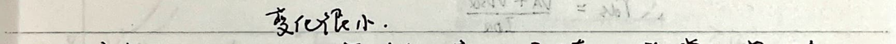
Delta in saturation region (constant current region). ib ~ ibsat = 1/2 * W [2(Vgs - Vgs(th)) * Vds - Vds^2]
≈ 1/2 * W [2(Vgs - Vgs(th)) * (Vds - Vgs(th))^2 - (Vgs - Vgs(th))^2]
≈ 1/2 * W * (Vgs - Vgs(th))^2 (breakdown point)
To improve accuracy, consider channel length modulation effect: Vds increases, breakdown point → S, L decreases, channel resistance decreases. The breakdown point and source voltage remain as Vgs - Vgs(th), so ib - Vds curve in the saturation region shows a slope. Extending Vgs corresponding to various slope lines, it is at Vds (30~50V). Early voltage L越short, Vds越small.
Considering channel length modulation, ib = 1/2 * W * (Vgs - Vgs(th))^2 * (1 + Vds / VA).
∴ rds = (VA + Vds) / Ids
Delta in breakdown region, Vds increases to a certain value, breakdown. Breakdown voltage increases with Vgs increase. Because Vgs increases, the same Vds breakdown voltage decreases. Additionally, the breakdown voltage between the source and drain of the PN junction will increase, and the breakdown voltage between the source and drain will increase. When the Vgs is high enough, the SiO2 breakdown will occur.
2. Transfer characteristic curve. 10V 5V
ib = 1/2 * W * (Vgs - Vgs(th))^2 * (1 + Vds / VA) → Vds increases, characteristic curve shifts left. This is the result of channel length modulation effect.
Transconductance gm = dib / dVgs |Vds = const = kp * W / L * (Vgs - Vgs(th)) * (1 + Vds / VA).
= Vgs - Vgs(th) = √(2kp * W / L * (1 + Vds / VA) * ib
= √(2kp * W / L * ib) (ignoring channel length modulation effect).
### 3. Threshold Effect
To ensure that the N-MOS FET's D and B junctions are in the cutoff state, B (P region) is connected to the lowest circuit voltage. The base and source junctions are connected to a capacitor. When Vgs is a certain value, Vbs increases, and the base region's space charge layer becomes thicker. This means that the number of holes in the space charge layer increases, reducing the number of electrons in the channel (which are being neutralized and removed to form the space charge layer), thus increasing the channel resistance and decreasing the current. Therefore, when the base is applied with a negative voltage, Vbs > Vgs(0).
$$ V_{bs} = 0, V_{bs} = -5V $$
$$ V_{gs} = 3V, V_{bs} = 2.5V $$
The N-channel depletion type MOSFET has a positive charge in the SiO2 layer, which attracts N-type carriers. The base region is at the lowest voltage. The base and source junctions are connected to a capacitor. When Vgs is a certain value, Vbs increases, and the base region's space charge layer becomes thicker. This means that the number of holes in the space charge layer increases, reducing the number of electrons in the channel (which are being neutralized and removed to form the space charge layer), thus increasing the channel resistance and decreasing the current. Therefore, when the base is applied with a negative voltage, Vbs > Vgs(0).
$$ V_{bs} = 0, V_{bs} = -5V $$
$$ V_{gs} = 3V, V_{bs} = 2.5V $$
The N-channel depletion type MOSFET has a positive charge in the SiO2 layer, which attracts N-type carriers. The base region is at the lowest voltage. The base and source junctions are connected to a capacitor. When Vgs is a certain value, Vbs increases, and the base region's space charge layer becomes thicker. This means that the number of holes in the space charge layer increases, reducing the number of electrons in the channel (which are being neutralized and removed to form the space charge layer), thus increasing the channel resistance and decreasing the current. Therefore, when the base is applied with a negative voltage, Vbs > Vgs(0).
$$ V_{bs} = 0, V_{bs} = -5V $$
$$ V_{gs} = 3V, V_{bs} = 2.5V $$
The N-channel depletion type MOSFET has a positive charge in the SiO2 layer, which attracts N-type carriers. The base region is at the lowest voltage. The base and source junctions are connected to a capacitor. When Vgs is a certain value, Vbs increases, and the base region's space charge layer becomes thicker. This means that the number of holes in the space charge layer increases, reducing the number of electrons in the channel (which are being neutralized and removed to form the space charge layer), thus increasing the channel resistance and decreasing the current. Therefore, when the base is applied with a negative voltage, Vbs > Vgs(0).
$$ V_{bs} = 0, V_{bs} = -5V $$
$$ V_{gs} = 3V, V_{bs} = 2.5V $$
The N-channel depletion type MOSFET has a positive charge in the SiO2 layer, which attracts N-type carriers. The base region is at the lowest voltage. The base and source junctions are connected to a capacitor. When Vgs is a certain value, Vbs increases, and the base region's space charge layer becomes thicker. This means that the number of holes in the space charge layer increases, reducing the number of electrons in the channel (which are being neutralized and removed to form the space charge layer), thus increasing the channel resistance and decreasing the current. Therefore, when the base is applied with a negative voltage, Vbs > Vgs(0).
$$ V_{bs} = 0, V_{bs} = -5V $$
$$ V_{gs} = 3V, V_{bs} = 2.5V $$
The N-channel depletion type MOSFET has a positive charge in the SiO2 layer, which attracts N-type carriers. The base region is at the lowest voltage. The base and source junctions are connected to a capacitor. When Vgs is a certain value, Vbs increases, and the base region's space charge layer becomes thicker. This means that the number of holes in the space charge layer increases, reducing the number of electrons in the channel (which are being neutralized and removed to form the space charge layer), thus increasing the channel resistance and decreasing the current. Therefore, when the base is applied with a negative voltage, Vbs > Vgs(0).
$$ V_{bs} = 0, V_{bs} = -5V $$
$$ V_{gs} = 3V, V_{bs} = 2.5V $$
The N-channel depletion type MOSFET has a positive charge in the SiO2 layer, which attracts N-type carriers. The base region is at the lowest voltage. The base and source junctions are connected to a capacitor. When Vgs is a certain value, Vbs increases, and the base region's space charge layer becomes thicker. This means that the number of holes in the space charge layer increases, reducing the number of electrons in the channel (which are being neutralized and removed to form the space charge layer), thus increasing the channel resistance and decreasing the current. Therefore, when the base is applied with a negative voltage, Vbs > Vgs(0).
$$ V_{bs} = 0, V_{bs} = -5V $$
$$ V_{gs} = 3V, V_{bs} = 2.5V $$
The N-channel depletion type MOSFET has a positive charge in the SiO2 layer, which attracts N-type carriers. The base region is at the lowest voltage. The base and source junctions are connected to a capacitor. When Vgs is a certain value, Vbs increases, and the base region's space charge layer becomes thicker. This means that the number of holes in the space charge layer increases, reducing the number of electrons in the channel (which are being neutralized and removed to form the space charge layer), thus increasing the channel resistance and decreasing the current. Therefore, when the base is applied with a negative voltage, Vbs > Vgs(0).
$$ V_{bs} = 0, V_{bs} = -5V $$
$$ V_{gs} = 3V, V_{bs} = 2.5V $$
The N-channel depletion type MOSFET has a positive charge in the SiO2 layer, which attracts N-type carriers. The base region is at the lowest voltage. The base and source junctions are connected to a capacitor
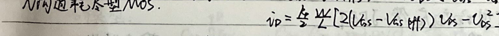
### MOSFET Transient Model
#### Capacitors: - Linear Capacitors (Plate Capacitors): \(C_{SS'}, C_{SS}, C_{DD}\) (C: Channel) - Nonlinear Capacitors (Affected by Bias Voltage): \(C_{BS}, C_{BD}, C_{BC}\) (PN Junction Capacitors) - Among them: \(\frac{1}{C_{BC}} + \frac{1}{C_{BC}} = \frac{1}{C_{BS}}\)
#### Currents: - Linear: \(i_D = \frac{k}{2} \frac{W}{L} [2(V_{GS} - V_{GS(off)})V_{DS} - V_{DS}^2]\) or \(\frac{k}{2} \frac{W}{L} [2(V_{GS} - V_{GS(off)})V_{DS} - V_{DS}^2]\) - Saturation: \(i_D = \frac{k}{2} \frac{W}{L} (V_{GS} - V_{GS(off)})^2 (1 + \frac{V_{DS}}{V_A})\) or \(\frac{k}{2} \frac{W}{L} (V_{GS} - V_{GS(off)})^2 (1 + \frac{V_{DS}}{V_A})\)
#### Source (S) and Drain (D) Can Be Interchanged - NMOS \(k_p = \mu_n C_{ox} \propto 4 \times 10^4 C_{ox} = PMOS\) \(k_p\) - Due to MOSFETs conducting only majority carriers, temperature has little effect on their concentration. Therefore, MOSFETs have good temperature stability. Temperature affects two aspects: \(T \uparrow\), \(W\) (channel width) \(\downarrow\), current density \(\downarrow\); \(T \uparrow\), \(\mu_n \mu_p \downarrow\), \(i_0 \downarrow\).
### Junction Field-Effect Transistor - JFET
#### Transfer Characteristics - \(V_{GS} = 5V\) - \(V_{DS} = -V_{GS(off)}\)
#### Output Characteristics - \(V_{GS} = 0V\) - \(V_{DS} = -V_{GS(off)}\)
#### Off-State Region: \(V_{GS} < V_{GS(off)}\) - \(i_D = \frac{k}{2} \frac{W}{L} [2(V_{GS} - V_{GS(off)})V_{DS} - V_{DS}^2]\) or \(\frac{k}{2} \frac{W}{L} [2(V_{GS} - V_{GS(off)})V_{DS} - V_{DS}^2]\)
#### On-State Region: \(0 > V_{GS} > V_{GS(off)}\), \(0 < V_{DS} < V_{GS} - V_{GS(off)}\) - \(i_D = \frac{k}{2} \frac{W}{L} [2(V_{GS} - V_{GS(off)})V_{DS} - V_{DS}^2]\) or \(\frac{k}{2} \frac{W}{L} [2(V_{GS} - V_{GS(off)})V_{DS} - V_{DS}^2]\)

No.
Date
When Vgs = 0, S and D have the widest conducting channel, and the P-N junction's depletion region is the narrowest. At this point, adding Vgs will cause conduction.
When Vgs ≤ 0, the two P+ N junctions' depletion regions widen (towards the N region), the channel becomes narrower, and the channel resistance increases. When Vgs increases to Vgs(off), the channel is cut off, and the channel resistance becomes very large. At this point, adding Vgs, I0 = 0.
When Vgs < Vgs(off), the channel is cut off.
When Vgs = 0 (Vgs(off) < Vgs < 0), I0 = 0.
When Vgs > 0, a drain current ID is generated, flowing from the drain to the source. The voltage from the source to the drain increases. Therefore, the drain region's depletion region becomes wider, the channel becomes wedge-shaped, and the channel resistance increases.
When Vgs ≥ Vgs(off), the channel is cut off. The cut-off point moves towards the source.
The voltage across the cut-off region Vbc = Vgs - (Vgs - Vgs(off)).
The voltage from the source to the cut-off point Vcs = Vgs - Vgs(off) remains constant.
Channel length modulation effect: as Vgs increases, Vcs remains constant, but the channel length decreases. Thus, the channel resistance decreases, and I0 increases.
JFET model:
$$ \begin{aligned} & C_{gd}, C_{gs} \text{ when P-N junctions are reverse-biased, mainly due to the electric field} \\ & r_{ds} \text{: drain-source resistance} \\ & r_{ss} \text{: source-body resistance} \\ & i_{d} \text{: current-controlled current source} \end{aligned} $$

### Field-Effect Transistor (FET) Application Principles
1. **Saturation Region**: Voltage-controlled current source 2. **Variable Resistance Region, Cutoff Region**: Controlled electronic switch
#### 1. FET Amplifier Circuit
$$ V_{GS} = V_{CC} $$
$$ I_D = \frac{K}{2} \frac{W}{L} \left(V_{GS} - V_{GS(th)}\right)^2 $$
$$ V_{DS} = V_{DD} - R_D I_D $$
**Output DC Operating Point (I_D, V_DS)**
In the transfer curve (I_D - V_{GS}) range, when the signal V_S = V_{SS} = ut
The FET can be considered a linear element, with the slope at the operating point Q being the transconductance g_m.
- Drain signal current i_d = g_m V_S = g_m V_{SS} ut - Drain total current i_D = I_D + g_m V_{SS} ut
$$ V_O = V_{DD} - R_D i_D = (V_{DD} - R_D I_D) - g_m R_D V_{SS} ut = V_{DS} + V_O $$
- Output signal voltage v_o = - g_m R_D V_{SS} ut
**Voltage Gain**
$$ A_v = \frac{V_O}{V_S} = - g_m R_D $$
#### 2. FET Switching Circuit
If the input signal V_S is a large amplitude pulse signal, low level V_L < V_{GS(th)}, high level V_H is sufficient, then the MOSFET works in the cutoff region and the variable resistance region.
$$ V_{CC} $$
$$ V_{DD} $$
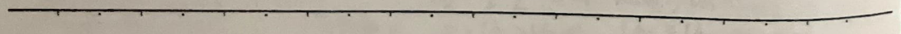
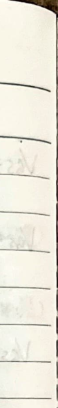
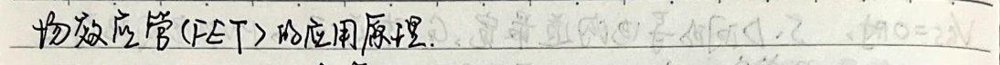
### Electronic Circuit Experiment #### Semiconductor Device Basics Summary
**1. Semiconductor Bipolar Transistor**
1. **Intrinsic Generation (related to temperature)** → Intrinsic Semiconductors (n_i = p_i), two types of carriers. **Dynamic Equilibrium (generation = recombination) → n_i = p_i = A_0 T^3 e^{-\frac{E_g}{2kT}}. T↑, n_i↑**
**Silicon A_0 ≈ 3.84 x 10^6 / (cm^3 · K^3), Silicon A_0 ≈ 1.76 x 10^6 / (cm^3 · K^3)** E_g: T = 0K when the band gap (the energy required for electrons to transition from the valence band to the conduction band) Silicon E_g = 1.21 eV, Silicon E_g = 0.785 eV ∴ T = 300 K when, Silicon n_i = p_i ≈ 1.43 x 10^13 / cm^3, Silicon n_i = p_i ≈ 2.38 x 10^13 / cm^3. Intrinsic semiconductors have low conductivity.
2. **Doping Elements → Impurity Elements → Impurity Doping → Impurity Semiconductors (holes, electrons)** **Doping Elements → Impurity Holes Formed → Impurity Semiconductors (holes, electrons)** At thermal equilibrium, the free electron concentration n_e, hole concentration p_h, n_e · p_h = n_i^2 In N-type semiconductors, n_e = N_d + p_h ≈ N_d In P-type semiconductors, p_h = N_A + n_e ≈ N_A **1. Impurity Semiconductors with high doping levels; T↑, doping levels increase, hole concentration increases.** Silicon maximum operating temperature 200°C, silicon devices below 100°C. **2. First add N_d as the main impurity, then add N_A as the main impurity. If N_A > N_d, then N_e < N_h, this is the principle of impurity compensation.**
3. **Drift Movement: Free Electron v_n = -μ_n E, Hole v_p = μ_p E.** **Doping Concentration ↑, μ_n, μ_p ↓; T↑, μ_n, μ_p ↓.**
No.
Date
T = 300K, not sure μn ≤ 1300, μp ≤ 500 Ge > Si the mobility is large. Guess μn = 3800, μp = 1800. Si has a higher mobility than Ge.
I = In + Ip = qS (-nUn + pUp) = qS (nμnE + pμpE) = qSE (nμn + pμp) = qS * V (nμn + pμp)
∴ R = V / I = 1 / S * q(nμn + pμp) = ρ * L / S ∴ σ = q(nμn + pμp).
N-type: σ ~ qnμn (n >> p) T↑, μn↑, σ↑ P-type: σ ~ qpμp (p >> n) T↑, μp↑, σ↑
Intrinsic: T↑, μn↑, μp↑, Pn↑↑, ∴ σ↑ ---- N-type T↑, μn↓, μp↓, Pn↑↑, ∴ σ↑ ---- P-type
4. Diffusion motion. Electron diffusion In = qSDn * d(nex) / dx, Dn electron diffusion coefficient, T↑, Dn↑ T = 300K, not sure Dn = 34, guess Dn = 99. Hole diffusion Ip = -qSDp * d(pex) / dx, Dp hole diffusion coefficient, T↑, Dp↑ T = 300K, not sure Dp = 13, guess Dp = 47. ∴ Ge > Si diffusion coefficient is large, electron diffusion coefficient is large. Dp / Dn = Dn / μn = kT / q
5. PN junction. Many diffusion → recombination in the other region, self-region remains, cannot move mobile ions → Space charge region (blocking layer, depletion layer, barrier region) → internal built-in electric field → drift current → drift and diffusion current balance → space charge region: high resistance region (n-p type)
N-region P-region: low resistance (thermal equilibrium, electrical neutrality).
Contact voltage Vc = kT ln(NA/NB), Vf = kT ~ 26 mV (T = 300 K).
T ↑, n^2 ↑, Vc ↓, (T - T0) (2 ~ 2.5 mV) = -Vc
T = 300 K, silicon Vc ~ 0.5 ~ 0.7 V, germanium Vc ~ 0.2 ~ 0.3 V
Barrier width W0 = Wn + Wp = √(2ε/9) Vc * (NA + NB) / (NA * NB) T ↑, Vc ↓, W0 ↓
∴ N-region barrier charge Q+ = qSWnNB
P-region barrier charge Q- = -qSWpNA
∴ Q+ = -Q-
∴ Wn/Wp = NA/NB
Solve for Wn = NA * (2ε/9) * Vc / (NA * NB) * (NA + NB) * (NA + NB) / (NA * NB) ∴ NA ↑, Wn ↓
Wp = NB * (2ε/9) * Vc / (NA * NB) * (NA + NB) * (NA + NB) / (NA * NB) ∴ NA ↑, Wp ↓
PN junction characteristics: external voltage opposite to the contact voltage, Vc ↓, Q ↓, Wn, Wp ↓
→ diffusion motion strengthens → barrier width decreases (fewer carriers)
n(x) = [n(x) - n0] e^(x^2 / 2D) + n0
p(x) = p0 e^(x^2 / 2D) p(x) = [p(x) - p0] e^(-x^2 / 2D) + p0
→ diffusion current > drift current, and carriers are continuously replenished
→ forms a closed circuit.
∴ T0 + external voltage, Vc ↓, diffusion motion ↑, forward current ↑
PN junction reverse characteristics: external voltage opposite to the contact voltage, Vc ↑, Q ↑, Wn, Wp ↑
→ drift motion strengthens, while fewer carriers (drift motion carriers) are few →
→ reverse current is small: silicon reverse current 10^-6 ~ 10^-9 A, germanium reverse current 10^-6 ~ 10^-9 A.
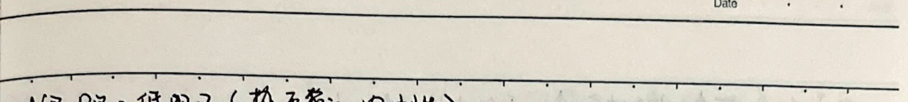
T↓, minority carrier concentration ↑, reverse current ↑ → I_s
P^+N junction with forward bias. P^+N junction with reverse bias.
Current equation: I = I_s (e^(qV/kT) - 1)
V >> Vt when I ≈ I_s e^(qV/kT); V << -Vt when I ≈ -I_s
Assume V > Vt when PN junction is conducting; V < Vt when PN junction is cut off Vt: 0.6~0.7V; Vc: 0.2~0.3V
Temperature characteristics: Forward bias, T↑, V↓, diffusion increases, forward current increases (as described before) Or T↑, V↓, I_s↑, forward current increases. (T - T_0) (2~2.5mV) = -(V - V_0)
Reverse bias, T↑, minority carrier concentration ↑, I_s↑ (as described before) I - I_0 = log_2 (I / I_0)
Reverse breakdown characteristics: Avalanche breakdown, strong space charge field → space charge region ionized electron pulled out → field emission breakdown. {Doping concentration ↑, space charge region W↓, E↑ (reverse voltage < 6V)} {T↓, space charge region W↑, V(BR)↓} Avalanche breakdown, strong space charge field → space charge region ionized electron pulled out → field emission breakdown. {Doping concentration ↑, space charge region W↓, E↑ (reverse voltage < 6V)} {T↓, space charge region W↑, V(BR)↓} T↑, μ↑, μ↓, drift velocity ↓, V(BR)↑ (reverse voltage > 6V)
Capacitance effect: Potential barrier, reverse voltage increases, space charge region W increases, Q+ and Q- increases → charging. Reverse voltage decreases, space charge region W decreases, Q+ and Q- decreases → discharging. C = dQ/dV = C0 / (1 - V/V0)^n = εs/W0. SS is positive, W0 is positive.
Diffusion capacitance, positive voltage increases, potential barrier两侧少子堆积增加 (diffusion motion) → charging. Positive voltage decreases, potential barrier两侧少子堆积减少 (diffusion motion) → discharging. C = dQ/dV ≈ ∆Qn + ∆Qp.
CT and CD in parallel, PN junction total capacitance Cj = CT + CD. Real PN junction is ideal PN junction in parallel.
6. Semiconductor Bipolar Transistor In a transistor, ni is large, so Vb = kT/q * Na * Nb / ni is smaller than in a silicon transistor; but because ni is large, so Is is larger than in a silicon transistor; but because the transistor V is small, so W is small, so the absolute value of Vbr is small.
Static resistance: R = Vee / Iq. Dynamic resistance: rd = dVb / dIq = Vr / Is * e^(qVr / kT) ≈ Vr / Iq ≈ 26(mV) / Iq(mA) (T = 300K)
Analysis method: Graphical method (find characteristic curve and working characteristic line of the intersection), equivalent circuit method (considering the situation of V and I), small signal method (find the static resistance, find the small signal quantity using dynamic resistance, and remove the DC power supply).
Application example: Rectifier (unidirectional conductivity), voltage stabilizer (breakdown voltage V0 = several volts, Izm < Iz < Izm). Limit width (using the breakdown V0, considering the model, upper and lower limits of V1 + V0 and V2 + V0).
### Bipolar Transistor
1. **NPN Example**: - **Emitter Region**: N-type, high doping, base region: P-type, collector region: N-type, low doping; base region is very thin. - **Assume B and E are forward biased, C and B are reverse biased**: - $$ I_{E} = I_{E_{n}} + I_{E_{p}} $$ - $$ I_{B} = I_{B_{p}} + I_{E_{p}} - I_{C_{B_{0}}} = I_{B_{p}} + I_{E_{p}} - I_{C_{p}} $$ - $$ I_{C} = I_{C_{n}} + I_{C_{B_{0}}} = I_{C_{n}} + I_{C_{p}} $$ - $$ I_{E} = I_{C} + I_{B} $$ - **Current Definitions**: - $$ \alpha = \frac{I_{C_{n}}}{I_{E}} $$: Common base current amplification factor, typical value 0.95~0.995. - $$ I_{C} = \alpha I_{E} + I_{C_{B_{0}}} \approx \alpha I_{E} $$ - $$ \beta = \frac{I_{C_{n}}}{I_{E} - I_{C_{n}}} $$: Common emitter current amplification factor, typical value several to dozens. - $$ I_{C} = \beta I_{E} + (\beta + 1) I_{C_{B_{0}}} = \beta I_{E} + I_{C_{B_{0}}} \approx \beta I_{E} $$ - **Collector Current Calculation**: $$ I_{C} = (\beta + 1) I_{E} + I_{C_{B_{0}}} = (\beta + 1) (I_{E} + I_{C_{B_{0}}}) $$
2. **Transistor Characteristics Curve**: - **Collector-Emitter Voltage (V_{CE})**: - $$ I_{C} = \frac{V_{CE}}{R_{C}} $$
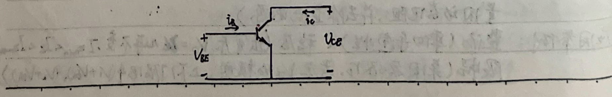
The input characteristic \( I_B = f(U_{BE}) \) when \( U_{CE} = \text{const.} \)
The output characteristic \( I_C = f(U_{CE}) \) when \( U_{BC} = \text{const.} \)
When \( U_{CE} \) increases, \( I_C \) increases. \( U_{CE} \) is greater than \( U_{BE} \), \( U_{CE} > U_{th} \). \( U_{CE} > U_{BRCE} \). \( U_{CE} = U_{th} \). \( U_{CE} < U_{th} \). \( U_{CE} = U_{BRCE} \). \( U_{CE} > U_{BRCE} \). \( U_{CE} < U_{th} \). \( U_{CE} = U_{BRCE} \). \( U_{CE} > U_{BRCE} \). \( U_{CE} < U_{th} \). \( U_{CE} = U_{BRCE} \). \( U_{CE} > U_{BRCE} \). \( U_{CE} < U_{th} \). \( U_{CE} = U_{BRCE} \). \( U_{CE} > U_{BRCE} \). \( U_{CE} < U_{th} \). \( U_{CE} = U_{BRCE} \). \( U_{CE} > U_{BRCE} \). \( U_{CE} < U_{th} \). \( U_{CE} = U_{BRCE} \). \( U_{CE} > U_{BRCE} \). \( U_{CE} < U_{th} \). \( U_{CE} = U_{BRCE} \). \( U_{CE} > U_{BRCE} \). \( U_{CE} < U_{th} \). \( U_{CE} = U_{BRCE} \). \( U_{CE} > U_{BRCE} \). \( U_{CE} < U_{th} \). \( U_{CE} = U_{BRCE} \). \( U_{CE} > U_{BRCE} \). \( U_{CE} < U_{th} \). \( U_{CE} = U_{BRCE} \). \( U_{CE} > U_{BRCE} \). \( U_{CE} < U_{th} \). \( U_{CE} = U_{BRCE} \). \( U_{CE} > U_{BRCE} \). \( U_{CE} < U_{th} \). \( U_{CE} = U_{BRCE} \). \( U_{CE} > U_{BRCE} \). \( U_{CE} < U_{th} \). \( U_{CE} = U_{BRCE} \). \( U_{CE} > U_{BRCE} \). \( U_{CE} < U_{th} \). \( U_{CE} = U_{BRCE} \). \( U_{CE} > U_{BRCE} \). \( U_{CE} < U_{th} \). \( U_{CE} = U_{BRCE} \). \( U_{CE} > U_{BRCE} \). \( U_{CE} < U_{th} \). \( U_{CE} = U_{BRCE} \). \( U_{CE} > U_{BRCE} \). \( U_{CE} < U_{th} \). \( U_{CE} = U_{BRCE} \). \( U_{CE} > U_{BRCE} \). \( U_{CE} < U_{th} \). \( U_{CE} = U_{BRCE} \). \( U_{CE} > U_{BRCE} \). \( U_{CE} < U_{th} \). \( U_{CE} = U_{BRCE} \). \( U_{CE} > U_{BRCE} \). \( U_{CE} < U_{th} \). \( U_{CE} = U_{BRCE} \). \( U_{CE} > U_{BRCE} \). \( U_{CE} < U_{th} \). \( U_{CE} = U_{BRCE} \). \( U_{CE} > U_{BRCE} \). \( U_{CE} < U_{th} \). \( U_{CE} = U_{BRCE} \). \( U_{CE} > U_{BRCE} \). \( U_{CE} < U_{th} \). \( U_{CE} = U_{BRCE} \). \( U_{CE} > U_{BRCE} \). \( U_{CE} < U_{th} \). \( U_{CE} = U_{BRCE} \). \( U_{CE} > U_{BRCE} \). \( U_{CE} < U_{th} \). \( U_{CE} = U_{BRCE} \). \( U_{CE} > U_{BRCE} \). \( U_{CE} < U_{th} \). \( U_{CE} = U_{BRCE} \). \( U_{CE} > U_{BRCE} \). \( U_{CE} < U_{th} \). \( U_{CE} = U_{BRCE} \). \( U_{CE} > U_{BRCE} \). \( U_{CE} < U_{th} \). \( U_{CE} = U_{BRCE} \). \( U_{CE} > U_{BRCE} \). \( U_{CE} < U_{th} \). \( U_{CE} = U_{BRCE} \). \( U_{CE} > U_{BRCE} \). \( U_{CE} < U_{th} \). \( U_{CE} = U_{BRCE} \). \( U_{CE} > U_{BRCE} \). \( U_{CE} < U_{th} \). \( U_{CE} = U_{BRCE} \). \( U_{CE} > U_{BRCE} \). \( U_{CE} < U_{th} \). \( U_{CE} = U_{BRCE} \). \( U_{CE} > U_{BRCE} \). \( U_{CE} < U_{th} \). \( U_{CE} = U_{BRCE} \). \( U_{CE} > U_{BRCE} \). \( U_{CE} < U_{th} \). \( U_{CE} = U_{BRCE} \). \( U_{CE} > U_{BRCE} \). \( U_{CE} < U_{th} \). \( U_{CE} = U_{BRCE} \). \( U_{CE} > U_{BRCE} \). \( U_{CE} < U_{th} \). \( U_{CE} = U_{BRCE} \). \( U_{CE} > U_{BRCE} \). \( U_{
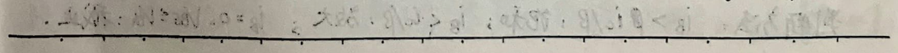
No.
Data
T $\uparrow$, VBE $\downarrow$ (IB = const) (as previously discussed), (T - T0) (2~2.5mV) = - (VBE - VBE0)
T $\uparrow$, C region Pi $\uparrow$, IcB0 $\uparrow$
T $\uparrow$, Dn $\uparrow$, base region recombination $\downarrow$, Ic $\downarrow$, $\overline{P}$ $\uparrow$, IcB0 $\uparrow$, $\frac{1}{\beta}$ $\frac{d\overline{P}}{dT}$ = 0.5%~1% $\times$ C
Therefore, when the temperature increases, the input characteristic curve shifts left, and the output characteristic curve shifts up.
3. Limit Parameters
As previously discussed, when IC increases to a certain extent, β will significantly decrease. The β value at the highest value of $\frac{2}{3}$ of the corresponding collector current is ICm.
V(BR)CEO: Emitter open circuit collector reverse breakdown voltage. Usually several volts. V(BR)EBO: Collector open circuit base reverse breakdown voltage. Usually several volts. V(BR)CEO: Base open circuit (IC = 0) collector and emitter reverse breakdown voltage. V(BR)CEO > V(BR)CEO > V(BR)EBO. T $\uparrow$, V(BR)CEO $\uparrow$, V(BR)CEO $\uparrow$, V(BR)EBO $\downarrow$
Collector maximum allowable power dissipation Pcm:
Pc = VCE * IC
4. Application Examples
Amplifier (suitable for VB, VCC, IB, IC, VCE (V0) waveforms in the amplification region. VBE, IB, IC, VCE (V0) waveforms are all composed of the operating point and small signal components).
Judgment method: IB > IC / β: saturation; IB < IC / β: amplification; IB = 0, VCE = VEE: cutoff.
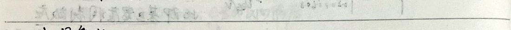
### III. FET Characteristics
#### N-Channel | Type | Enhancement | Depletion | Enhancement | Depletion | |------|-------------|-----------|-------------|-----------| | Circuit Symbol | $G_{o}$ | $G_{o}$ | $G_{o}$ | $G_{o}$ | | Operating Region | $V_{gs} > V_{gs(th)}$ | $V_{gs} > V_{gs(th)}$ | $V_{gs} < V_{gs(th)}$ | $V_{gs} < V_{gs(th)}$ | | Operating Condition | $0 < V_{ds} < V_{gs} - V_{gs}$ | $0 < V_{ds} < V_{gs} - V_{gs(th)}$ | $V_{gs} - V_{gs(th)} < V_{ds} < 0$ | $V_{gs} - V_{gs(th)} < V_{ds} < 0$ | | Current | $I_{D} = \frac{K}{2}(V_{gs} - V_{gs(th)})V_{ds}$ | $I_{D} = \frac{K}{2}(V_{gs} - V_{gs(th)})V_{ds}$ | $I_{D} = \frac{K}{2}(V_{gs} - V_{gs(th)})V_{ds}$ | $I_{D} = \frac{K}{2}(V_{gs} - V_{gs(th)})V_{ds}$ |
#### P-Channel | Type | Enhancement | Depletion | Enhancement | Depletion | |------|-------------|-----------|-------------|-----------| | Circuit Symbol | $G_{o}$ | $G_{o}$ | $G_{o}$ | $G_{o}$ | | Operating Region | $V_{gs} > V_{gs(th)}$ | $V_{gs} > V_{gs(th)}$ | $V_{gs} < V_{gs(th)}$ | $V_{gs} < V_{gs(th)}$ | | Operating Condition | $0 < V_{ds} < V_{gs} - V_{gs}$ | $0 < V_{ds} < V_{gs} - V_{gs(th)}$ | $V_{gs} - V_{gs(th)} < V_{ds} < 0$ | $V_{gs} - V_{gs(th)} < V_{ds} < 0$ | | Current | $I_{D} = \frac{K}{2}(V_{gs} - V_{gs(th)})V_{ds}$ | $I_{D} = \frac{K}{2}(V_{gs} - V_{gs(th)})V_{ds}$ | $I_{D} = \frac{K}{2}(V_{gs} - V_{gs(th)})V_{ds}$ | $I_{D} = \frac{K}{2}(V_{gs} - V_{gs(th)})V_{ds}$ |
#### Output Characteristics | $V_{gs}$ | $V_{gs} > 0$ | $V_{gs} = 0$ | $V_{gs} = 0$ | $V_{gs} < 0$ | |----------|--------------|--------------|--------------|--------------| | $V_{ds}$ | $V_{ds} = V_{ds(th)}$ | $V_{ds} = V_{ds(th)}$ | $V_{ds} = V_{ds(th)}$ | $V_{ds} = V_{ds(th)}$ |
#### Transfer Characteristics | $V_{gs}$ | $V_{gs} > 0$ | $V_{gs} = 0$ | $V_{gs} = 0$ | $V_{gs} < 0$ | |----------|--------------|--------------|--------------|--------------| | $V_{ds}$ | $V_{ds} = V_{ds(th)}$ | $V_{ds} = V_{ds(th)}$ | $V_{ds} = V_{ds(th)}$ | $V_{ds} = V_{ds(th)}$ |
#### Temperature Effect: The temperature coefficient of the threshold voltage $V_{gs(th)}$ is positive. The channel width $W$ decreases with increasing temperature. The channel resistance $R_{D}$ increases with increasing temperature. The transconductance $g_{m}$ decreases with increasing temperature. The transconductance $g_{m}$ is given by $g_{m} = \frac{dI_{D}}{dV_{gs}}$.
#### Length-Modulation Effect: In the saturation region, $V_{ds}$ increases, the pinch-off point moves towards the source, and the channel length $L$ decreases. The channel resistance $R_{D}$ increases, and the voltage between the pinch-off point and the source is $V_{gs} - V_{gs(th)}$, so $I_{D}$ increases. The pinch-off effect (channel effect, body effect): $V_{gs}$ increases, the channel width $W$ decreases. The channel resistance $R_{D}$ increases, and the voltage between the pinch-off point and the source is $V_{gs} - V_{gs(th)}$, so $I_{D}$ increases. The transconductance $g_{m}$ is given by $g_{m} = \frac{dI_{D}}{dV_{gs}}$.
#### Cross-Channel Effect: The cross-channel conductance $g_{mb}$ is given by $g_{mb} = \frac{dI_{D}}{dV_{gs}}$. The cross-channel conductance $g_{mb}$ is a constant. The cross-channel conductance $g_{mb}$ is given by $g_{mb} = \frac{dI_{D}}{dV_{gs}}$. The cross-channel conductance $g_{mb}$ is given by $g_{mb} = \frac{dI_{D}}{dV_{gs}}$. The cross-channel conductance $g_{mb}$ is given by $g_{mb} = \frac{dI_{D}}{dV_{gs}}$. The cross-channel conductance $g_{mb}$ is given by $g_{mb} = \frac{dI_{D}}{dV_{gs}}$. The cross-channel conductance $g_{mb}$ is given by $g_{mb} = \frac{dI_{D}}{dV_{gs}}$. The cross-channel conductance $g_{mb}$ is given by $g_{mb} = \frac{dI_{D}}{dV_{gs}}$. The cross-channel conductance $g_{mb}$ is given by $g_{mb} = \frac{dI_{D}}{dV_{gs}}$. The cross-channel conductance $g_{mb}$ is given by $g_{mb} = \frac{dI_{D}}{dV_{gs}}$. The cross-channel conductance $g_{mb}$ is given by $g_{mb} = \frac{dI_{D}}
### Four. Junction Field-Effect Transistor
| Name | N-channel JFET | P-channel JFET | |------|----------------|----------------| | Circuit Symbol | $$G \rightarrow S$$ | $$G \leftarrow S$$ | | Bias Conditions | $$0 > V_{gs} > V_{gs(off)}$$ $$0 < V_{ds} < V_{ds(off)}$$ | $$0 < V_{gs} < V_{gs(off)}$$ $$V_{gs} - V_{gs(off)} < V_{ds} < 0$$ | | Current Equation | $$i_{d} = \frac{k}{2} \frac{W}{L} [2(V_{gs} - V_{gs(off)})V_{ds} - V_{ds}^2]$$ | $$i_{d} = \frac{k}{2} \frac{W}{L} [2(V_{gs} - V_{gs(off)})V_{ds} - V_{ds}^2]$$ | | Bias Conditions | $$0 > V_{gs} > V_{gs(off)}$$ $$V_{ds} > V_{gs} - V_{gs(off)} > 0$$ | $$0 < V_{gs} < V_{gs(off)}$$ $$V_{ds} < V_{gs} - V_{gs(off)} < 0$$ | | Current Equation | $$i_{d} = \frac{k}{2} \frac{W}{L} [V_{gs} - V_{gs(off)}]^2 (1 + \frac{V_{ds}}{V_{A}})$$ | $$i_{d} = \frac{k}{2} \frac{W}{L} [V_{gs} - V_{gs(off)}]^2 (1 + \frac{V_{ds}}{V_{A}})$$ |
Transfer Characteristics
Output Characteristics

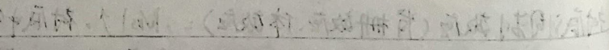
### Electronic Circuit Experiment: Instruments
#### 1. Common Basic Parameters and Circuit Parameter Measurement Methods
1. **Voltage Measurement**
- **Amplitude**: μV~mV: Digital voltmeter, diode voltmeter; mV~mV: Oscilloscope, digital voltmeter - **Frequency**: DC measurement: Digital voltmeter; AC circuit frequency measurement: Oscilloscope, high-frequency voltmeter - **Waveform**: Many AC voltmeters are AC voltage meters; Oscilloscope can measure DC voltage and AC voltage - **Impedance**: The internal resistance of the voltmeter must be much greater than the equivalent resistance of the circuit; usually through the circuit voltage and current values
2. **Input Resistance and Output Resistance Measurement**
- **Input**: R_i = $$\frac{V_{out}}{I_{out}} = \frac{V_i}{V_i - V_i} R_i$$ R_i and R_i are close when the error is small - **Output**: R_o = $$\frac{V_{out}}{I_{out}} = \left(\frac{V_o}{V_i} - 1\right) R_i$$ R_i and R_o are close when the error is small
3. **Voltage Gain and Frequency Characteristics Measurement**
- **Gain**: A_v = $$\frac{V_o}{V_i}$$ - **A_v(f) < φ(f)**, A_v(f) is the frequency characteristic, φ(f) is the phase characteristic
**Amplitude-Frequency Characteristics Measurement**: A_v(f)
- **Bandwidth**: BW = f_H - f_L ≈ f_H - **Upper Limit Frequency**: f_H - **Lower Limit Frequency**: f_L
- **1. Stepping Method**: Keep the signal input voltage amplitude unchanged, change the signal frequency, use the oscilloscope or millivoltmeter to describe the curve. - **2. Scanning Method**: Use the frequency meter + oscilloscope to describe the amplitude-frequency characteristic curve.
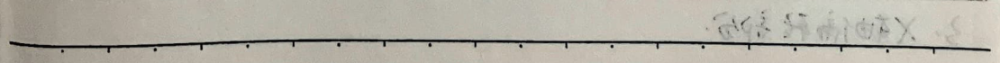
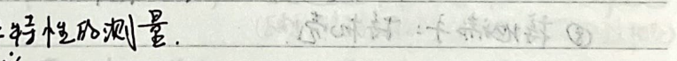
No.
Date
### Section 1: SS7804 Type Oscilloscope
1. **Screen Display Adjustment Section**
- **① Power Switch (POWER)** - **② Brightness Adjustment Knob/Beam Switch (INTEN/BEAM): Scan Line Brightness** - **③ Screen Readout Brightness Adjustment Knob/Switch (READOUT/ON/OFF): Adjust Brightness/Switch Screen Text** - **④ Focus Knob (FOCUS): Make the Waveform Clearer** - **⑤ Scan Line Rotation Adjustment Knob (TRACE ROTATION): Make the Scan Line Level** - **⑥ Scale Brightness Adjustment (SCALE): Adjust the Scale Brightness** - **⑦ Output Calibration Signal (CAL): Output Peak Value 0.6V, Frequency 1kHz Square Wave** - **⑧ Ground Terminal: Ground Terminal**
2. **Y-Axis Adjustment Section**
- **① Signal Output x2 (CH1 or CH2): Input Impedance 1MΩ, Input Capacitance 25pF.** - **② Channel Selection (CH1 or CH2): CH1/CH2/Dual Trace.** - **③ Variable Voltage Adjustment (VOLT/DIV VARIABLE): Fine and coarse adjustment, read value; press down to adjust.** - **④ Y-Axis Position x2 (POSITION): Adjust Up/Down.** - **⑤ Input Coupling x2 (DC/AC): DC Coupling: DC + AC; AC Coupling: AC.** - **⑥ Ground (GND): Use the zeroing method (best to use a probe and ground shorting method).** - **⑦ Signal Add (ADD): Display CH1, CH2, CH1 + CH2.** - **⑧ Invert (INV): -CH2.**
3. **X-Axis Adjustment Section**
- **① External Trigger Input (EXT TRIG): Select external trigger input.**
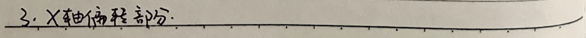
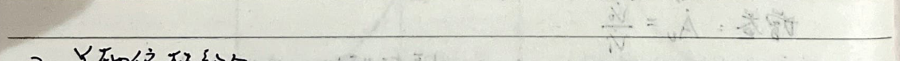


1. Time selection knob (TIME/DIV VARIABLE): Rotate knob to read value; press down to display '>', not readable. 2. X-axis position (POSITION): Adjust left and right. 3. Scan mode (ALT CHOP): Alternating scan: high frequency; continuous scan: low frequency. 4. Scan range (MAG x10): Each division becomes 1/10 of the original time. 5. Horizontal position fine (FINE): Used with POSITION. 6. Trigger source selection (SOURCE): CH1/CH2/LINE(50Hz power)/EXT(external trigger). If there are two signals, select the longer path for the trigger source. 7. Coupling selection (COUP): AC/DC/HF-R (high frequency)/LF-R (low frequency). 8. Trigger edge selection (SLOPE): +: rising edge; -: falling edge. 9. Trigger level selection (TRIG LEVEL): Trigger signal has no phase, waveform is stable. 10. TV (Trigger level is not fixed) (Trigger level is not fixed) 11. Automatic scan (AUTO): Suitable for > 50Hz signals. 12. Normal scan (NORM): Suitable for < 50Hz signals. 13. Single scan (SGL/RST): Scan once, reset once. 14. Normal display (X-T, A): Internal signal display, horizontal time, AC and DC voltage. 15. X-Y display (X-Y): CH1 to X-axis, CH1/CH2/CH1+CH2 to Y-axis. 16. Vertical offset (AV-at-off): AV (vertical offset), at (vertical offset), turn off vertical offset. 17. Vertical offset (TCR/C2): Turn off, move up and down. 18. Function coarse (FUNCTION COARSE): Rotate coarse adjustment, move quickly. 19. Hold mode (HOLD OFF): Hold mode, use the position adjustment knob.


4. Measure DC Voltage. - Display baseline and trace on screen, align cursors, bottom of screen shows result.
5. Measure AC Voltage Peak. - Display stable waveform, align cursors, bottom of screen shows result.
6. Phase Measurement. - Align cursors over two signals' zero points, read out phase difference Δφ = Δt * 2π.
7. Time Measurement. - Period (T), pulse width, rise time (10% Vm ~ 90% Vm), fall time (vice versa).
8. Frequency Measurement. - Use CRT display (Δt), bottom of screen shows frequency (CH1/CH2) through the channel.
III. EE1642B1 Type Function Signal Generator. - Frequency display. - Amplitude display (using oscilloscope): 50V peak-to-peak. - Change internal sweep range (WIDTH). - Change internal sweep time (RATE). - External input socket (INPUT). - TTL signal output: output standard TTL voltage level signal, output impedance 600Ω. - Function signal output: ~, ~, ~, ~, ~, ~. - Output amplitude adjustment (APML): range 20dB. - DC offset adjustment (OFFSET): -5V to +5V (5V range), OFF is off. - Symmetry adjustment (SYM): 50% duty cycle, OFF is 50% duty cycle. - Output amplitude attenuation (ATT): 20dB, 40dB, (20+40)dB, 0dB attenuation. - Selection switch: ~, ~, ~.
### Experiment: Common Electronic Instrument Usage and Two-Port Network Parameter Measurement Methods
1. **Pulse Width**: \( V_m \) (from the vernier scale) 2. **Average Width**: \( t_w \) (from the vernier scale at 50% rise and fall time points) 3. **Period T**: \( t \) (from the vernier scale at pulse rise and fall points) 4. **Rise Time \( t_r \)**: \( 0.1V_m \sim 0.9V_m \) 5. **Fall Time \( t_f \)**: \( 0.1V_m \sim 0.9V_m \) 6. **Duty Cycle \( D \)**: \( \frac{t_r}{T} \) 7. **Phase Difference \( \Delta \phi \)**: \( \frac{4T}{T} \cdot 2\pi \)
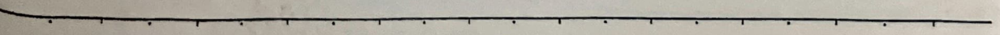
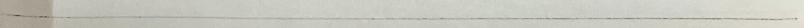